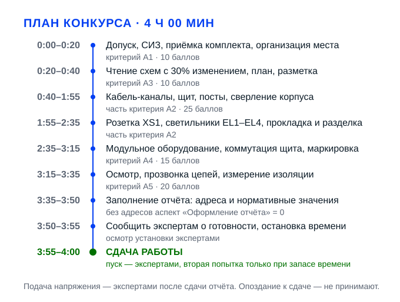
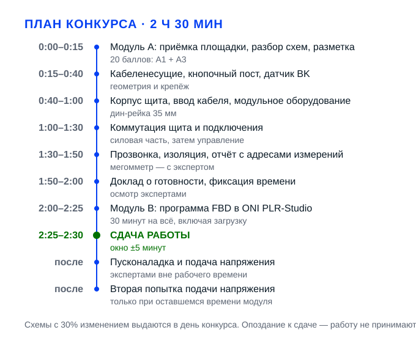
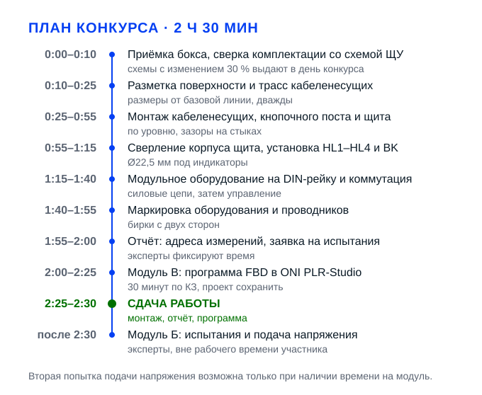

Электромонтаж (Р,О)
Задания ниже — официальные файлы «Абилимпикс» (источник: abilympics-russia.ru), разложенные по категориям. Решения написаны по тексту задания, регламенту и критериям оценки; в них указано, что именно проверяет эксперт.
Школьник
14–16 лет, базовый уровень заданияВыдержка из официального конкурсного задания: страницы, относящиеся к категории «Школьник» (стр. 9–12, 32–35 источника).
Пошаговое решение
Школьная категория «Электромонтажа» — это четыре часа на один сквозной заказ: собрать и запустить систему электроснабжения квартиры. Вам выдают принципиальную схему, монтажную схему и схему расположения оборудования в щите, причём в день конкурса они приходят с тридцатипроцентным изменением, поэтому читать документы придётся заново, а не по памяти. Внутри задания четыре автоматических выключателя, розетка, три выключателя и четыре светильника: QF1 вводит питание, QF2 даёт линию на розетку XS1, от QF3 работают SA1 с EL1 и SA2 с EL2 и EL3, от QF4 — SA3 с EL4. Оценивают сто баллов по шести критериям: организация и охрана труда, монтаж кабеленесущих систем и электроустановки, планирование, коммутация щита, проверка с отчётностью и пуск. Напряжение подают эксперты после того, как вы сдадите работу, заполните отчёт с адресами измерений и доложите о готовности, поэтому последний час модуля нужно беречь для измерений и бумаги, а не для последних винтов в щите.

Задача 1. Пройти допуск, надеть СИЗ и развернуть рабочее местоМодуль А · критерий A1 · 10 баллов
Первый блок оценивается критерием A1 «Организация работы и охрана труда» — это 10 баллов из ста, и они набираются или теряются в первые двадцать минут. Здесь вы надеваете средства защиты, проверяете указатель напряжения и коврик, сверяете выданный комплект со схемой комплектации и раскладываете инструмент так, чтобы за ним не приходилось тянуться через весь верстак. Отдельно фиксируется, убрали ли вы с рабочего места телефон, флешки и листы с надписями: за них участника снимают с площадки, и это уже не потеря баллов, а конец конкурса.
Действие 1.1. Надеть средства защиты и пройти допуск
Шаг 1.1.1
Надеваем хлопчатобумажный комбинезон или куртку с длинным рукавом, закрытую обувь на сухой нескользящей подошве, защитные очки и перчатки с ПВХ-нанесением. Рукава застёгиваем у кисти, а не подворачиваем: открытое предплечье рядом с клеммами щита — это та самая случайная точка контакта, из-за которой происходят электротравмы. Очки надеваем на глаза, а не на лоб, и проверяем, что стекло не запотело от дыхания: в запотевших очках участник их снимает через пять минут и больше не надевает.
Спецодежда, обувь, перчатки и очки перечислены в разделе охраны труда как обязательные для всех трёх категорий, и критерий A1 целиком строится на их соблюдении. Десять баллов за организацию и охрану труда — самые дешёвые баллы конкурса: их получают без единого измерения, просто надев то, что положено, и убрав то, что запрещено.
Проверьте себя по трём признакам: рукава застёгнуты и закрывают запястье, очки сидят на глазах и не сползают при наклоне головы, подошва сухая и не скользит на полу площадки. Перчатки должны сидеть плотно — болтающаяся перчатка цепляется за дин-рейку и за острые кромки корпуса щита.
Самая частая ошибка — прийти в удобной футболке и открытых кроссовках, рассчитывая надеть спецодежду «потом, когда начну работать». Второй промах — снять очки при сверлении корпуса щита, потому что стружка летит в лицо: именно в этот момент эксперт и смотрит, работают ли средства защиты на самом деле или только надеты для вида.
Эксперт осматривает участника на входе в бокс, а затем ещё раз перед подачей напряжения, когда работы уже закончены. Отдельно фиксируется, остаются ли очки на глазах во время сверления и зачистки проводников.
Шаг 1.1.2
Раскладываем диэлектрический коврик под ноги у верстака и щита, чтобы он закрывал зону, где вы стоите при работе с проводниками, а не лежал свёрнутым в углу. Берём указатель напряжения и осматриваем его: корпус без трещин, наконечники не погнуты, индикатор цел, срок поверки не истёк. Если на площадке есть заведомо исправная розетка и эксперты разрешают проверку, касаемся ею указателя и убеждаемся, что индикация есть — исправный прибор показывает напряжение, а не просто светится от прикосновения к металлу.
Коврик и указатель напряжения входят в перечень средств защиты по компетенции, и без них работы под напряжением не проводятся вообще. Проверка указателя перед работой — не формальность: неисправный прибор показывает отсутствие напряжения там, где оно есть, и именно так происходят тяжёлые электротравмы при пусконаладке.
Коврик лежит под ногами, не сдвигается при шаге и не имеет разрывов. Указатель реагирует на исправный источник, индикатор яркий и не мерцает. Если прибор вызывает сомнение, вы меняете его у эксперта до старта, а не проверяете «на живом щите» после.
Положить коврик в стороне от рабочей зоны, потому что «он мешает ходить», — типичная ошибка: к моменту подачи напряжения участник стоит на голом полу, а коврик лежит в двух метрах. Вторая — взять указатель, не глядя на срок поверки, и обнаружить, что он врёт, уже в момент проверки отсутствия напряжения.
Эксперт смотрит, где лежит коврик в момент, когда участник берётся за проводники, и проверяет, осматривался ли указатель напряжения до работы. Отдельно он отмечает, не лежит ли коврик свёрнутым в стороне от рабочей зоны, пока идёт монтаж.
Шаг 1.1.3
Убираем со стола и из карманов всё, что запрещено брать на рабочее место: телефон, флешки, листы с надписями и собственные записи, кроме выданного конкурсного задания. Инструмент оставляем только тот, что входит в перечень тулбокса; лишний, «на всякий случай», тоже убираем. Затем проходим инструктаж по охране труда и ставим подпись в журнале — до старта, а не в перерыве между модулями.
Запрет на телефоны, флешки и листы с надписями прописан отдельным пунктом задания, и нарушение ведёт к удалению с площадки, а не к снижению оценки. Инструктаж под подпись — условие допуска: без него участник формально не допущен к работе с электроинструментом и щитом, и эксперт вправе не запустить его в модуль.
Стол чистый, телефон и флешка лежат в сумке вне рабочей зоны, на столе только конкурсное задание и разрешённый инструмент. Подпись в журнале инструктажа стоит до объявления старта. Проверьте карманы комбинезона — телефон чаще всего остаётся именно там.
Оставить телефон в кармане «на беззвучном»: звонок или вибрация в середине модуля фиксируются экспертом, и работа заканчивается досрочно. Вторая ошибка — принести распечатку своих шпаргалок по схеме: любые листы с надписями, кроме задания, считаются нарушением.
Эксперт проверяет стол и карманы перед стартом, а также наблюдает, не достаёт ли участник телефон в процессе работы. Нарушение по запрещённым предметам фиксируется сразу и ведёт к удалению с площадки, а не к снижению оценки.
Действие 1.2. Принять комплект и проверить инструмент
Шаг 1.2.1
Раскладываем выданный комплект и сверяем его со схемой комплектации щита: корпус щита, четыре модульных автомата QF1–QF4, дин-рейка 35 мм, нулевая и защитная шины, клеммы, кабельные вводы, розетка XS1, четыре светильника EL1–EL4 и три выключателя SA1–SA3. Считаем не «на глаз», а по позициям: каждый аппарат должен быть того номинала и с той характеристикой, что указаны на схеме, потому что замена «похожего» автомата меняет логику защиты всей линии.
Приёмка комплекта — единственный момент, когда недостающее ещё можно получить у эксперта без потери времени из модуля. По схеме комплектации видно, что должно быть в щите, и расхождение обнаруживается либо сейчас, за три минуты, либо в середине коммутации, когда вы уже затянули перемычки и выяснили, что одного автомата не хватает.
Все позиции схемы комплектации отмечены, номиналы автоматов совпадают с заданием, количество светильников и выключателей соответствует алгоритму. Расхождение записываете на свободном поле задания и сразу озвучиваете эксперту, а не держите в голове.
Начать монтаж, не пересчитав аппараты, — потом не хватает одной клеммы или ввода, и вы тратите двадцать минут модуля на поиски. Вторая ошибка — взять автомат с другим номиналом, потому что «этот ближе лежал»: при пуске линия будет вести себя не так, как в алгоритме, и эксперт зафиксирует несоответствие схеме.
Эксперт сверяет комплектацию при выдаче и возвращается к ней при оценке монтажа: соответствие аппаратов схеме входит в критерий A4 «Коммутация щита». Отдельно он отмечает, сообщил ли участник о недостаче до старта или обнаружил её уже в середине работы.
Шаг 1.2.2
Проверяем инструмент, которым будете работать: стриппер на диапазон 0,2–6 мм², боковые кусачки, пассатижи, обжимные клещи 0,5–6,0 мм², набор отвёрток, нож с фиксатором, рулетка, уровень 20–40 см, угольник, керн и молоток. Отдельно смотрим сверлильную группу: свёрла 1–10 мм и ступенчатое сверло 12–32 мм, которым делают отверстия в корпусе щита. Мультиметр включаем и проверяем, что он показывает ноль на замкнутых щупах.
Инструмент с тупым сверлом или разболтанным стриппером портит материал: рвёт жилу, снимает изоляцию с задиром, оставляет заусенец на корпусе. На конкурсе время жёстко ограничено четырьмя часами, и замена испорченного проводника — это минуты, которых потом не хватит на отчёт, а отчёт стоит отдельные баллы.
Стриппер снимает изоляцию без надрыва жилы на обрезке кабеля, сверло не «гуляет» в патроне, мультиметр показывает ноль на замкнутых щупах и единицу в разомкнутом положении. Проверьте щётки шуруповерта и заряд аккумулятора: садится он всегда в самый неподходящий момент.
Взять инструмент, не проверив его, и обнаружить, что ступенчатое сверло забито стружкой, уже после разметки отверстий в щите. Вторая ошибка — работать мультиметром с севшей батареей: прибор показывает нули там, где цепи нет, и вы делаете вывод, которого делать нельзя.
Эксперт наблюдает, чем участник работает, и отмечает случаи, когда инструмент применяется не по назначению — например, когда изоляцию снимают бокорезами и режут жилу.
Шаг 1.2.3
Проверяем кабель и расходные материалы: марку и сечение кабеля по схеме, отсутствие повреждений оболочки, наконечники НШВИ под нужное сечение, клеммы, крепёж, дюбели и саморезы под кабель-канал, маркеры для проводников и самоклеящиеся бирки. Кабель разматываем и укладываем так, чтобы он не лежал петлёй на проходе: за петлю его дёрнут ногой, и оболочка получит залом, который потом видно на изгибе.
Расходники — это то, чего на площадке ровно столько, сколько выдано, и добавки посреди модуля не будет. Залом оболочки и потёртость кабеля эксперт видит при визуальном осмотре перед подачей напряжения, а повреждённая изоляция — это ещё и риск при испытании повышенным напряжением.
Оболочка кабеля целая по всей длине, сечение совпадает со схемой, наконечники подходят к жиле по диаметру, крепёж рассчитан на толщину основания. Проверьте запас: если кабеля хватает впритык, лучше сразу пересчитать трассу по монтажной схеме, чем тянуть в последний момент.
Взять кабель меньшего сечения «он мягче и легче укладывается» — при пуске линия с освещением и розеткой поведёт себя иначе, а несоответствие схеме снимет баллы за монтаж. Вторая ошибка — наконечники не того диаметра: жила входит с зазором, обжим получается рыхлым, и контакт греется.
Эксперт осматривает кабель и расходники при приёмке и возвращается к ним при проверке качества коммутации. Повреждённая оболочка и наконечники не того диаметра видны ему и на клеммах, и в результатах измерения изоляции.
Действие 1.3. Организовать место и защитить себя от мелочей
Шаг 1.3.1
Делим верстак на три зоны: слева — инструмент в лотке и на подставке, по центру — щит и монтируемая панель, справа — крепёж, наконечники и обрезки кабеля в отдельной ёмкости. Мелкий крепёж пересыпаем в лоток с бортиками или в крышку от упаковки: саморез, упавший на пол, вы будете искать дольше, чем вкручивать. Инструмент кладём ручками к себе, режущей частью от себя — так вы не хватаетесь за лезвие вслепую.
Порядок на столе — часть критерия A1, и он же экономит время: в четыре часа модуля каждая минута поиска инструмента складывается в полчаса, которых потом не хватает на измерения и отчёт. Разложенное по зонам рабочее место позволяет работать не глядя, а взгляд держать на схеме и на щите.
На столе нет рассыпанного крепежа, каждый инструмент на своём месте, обрезки не смешаны с материалом. Пройдите вдоль верстака: если приходится переступать через кабель или перекладывать коробку, чтобы дотянуться до отвёртки, зонирование сделано неправильно.
Свалить всё в кучу «пока не до порядка» — через час в куче не найти нужную биту, а обрезки изоляции попадают внутрь щита и потом мешают крышке сесть на место. Вторая ошибка — держать инструмент на краю стола: упавший стриппер ломается, и запасного у вас нет.
Эксперт проходит по боксу в начале модуля и оценивает, как организовано место, а затем смотрит, сохраняется ли порядок к концу работы. Рассыпанный крепёж и инструмент на краю стола он отмечает как риск, а не как мелочь.
Шаг 1.3.2
Ставим щит на верстак так, чтобы к нему был доступ со всех сторон, и фиксируем корпус струбцинами через прокладку, чтобы не поцарапать краску. Проверяем свет: тень от собственной руки не должна падать на дин-рейку и на клеммы, иначе цвет жил и маркировка читаются с ошибкой. Стусло для резки кабель-канала крепим струбциной к краю верстака — поворотное стусло, зажатое на весу, уводит пропил на несколько градусов, и угол перестаёт быть прямым.
Механическое крепление щита и стусла — это не удобство, а точность. Щит, который ездит по столу, при затяжке винтов автоматов уводит корпус, и крепление дин-рейки перекашивается. Косой рез кабель-канала виден сразу: крышка не садится, стык расходится, и баллы за монтаж кабеленесущих систем снижаются.
Щит не сдвигается при нажатии на дин-рейку, стусло держится жёстко, пропил получается перпендикулярным боковой стенке канала. Проверьте угольником первый рез: если он ушёл, переставьте стусло сейчас, а не после десятого обрезка.
Резать кабель-канал «на коленке», держа его рукой: торец получается косым, крышка не фиксируется, а стык с углом расходятся на миллиметры, которые видны невооружённым глазом. Вторая ошибка — работать в собственной тени: цвет жилы в свете лампы сверху кажется одним, а при проверке оказывается другим.
Эксперт смотрит на качество резов и на то, закреплён ли инструмент, когда участник начинает пилить. Косой торец кабель-канала он видит и на собранной трассе — по щели под крышкой в месте стыка.
Шаг 1.3.3
Кладём рядом малярную кисть для стружки и держим её в работе постоянно: после каждого сверления и каждой разделки кабеля сметаем стружку и обрезки из корпуса щита и с поверхности. Проводники укладываем так, чтобы они не свисали с края стола и не лежали на полу, а свободные концы временно подвязываем или укладываем в лоток. Острые кромки только что просверленного отверстия сразу проходим напильником — об них режется оболочка кабеля при вводе.
Металлическая стружка внутри щита — классическая причина короткого замыкания при первом включении: она ложится на клеммы и между полюсами автомата. Обрезки изоляции мешают крышке сесть, а проводник, свисающий на пол, цепляют ногой, и он рвётся у самого ввода, когда до сдачи остаётся десять минут.
Внутри корпуса щита нет стружки и обрезков, все концы проводников подобраны и подписаны, на полу под верстаком чисто. Проведите ладонью по внутренней стенке щита: если на руке остаются опилки, щит ещё не готов к монтажу оборудования.
Сверлить корпус, не убрав стружку, и ставить автоматы прямо на неё — при подаче напряжения получаете замыкание на ровном месте и теряете право на повторную попытку, если время уже вышло. Вторая ошибка — оставить свисающие концы: их отрывают при переносе щита.
Эксперт проверяет чистоту внутри щита перед подачей напряжения, и стружка на клеммах сразу читается как грубая небрежность. Свисающие с верстака проводники он отмечает и при осмотре рабочего места.
Задача 2. Прочитать схемы, разобрать алгоритм и спланировать четыре часаМодуль А · критерий A3 · 10 баллов
Критерий A3 «Планирование и проектирование работ» — 10 баллов, и он проверяется до первого просверленного отверстия. Вам выдают три документа: принципиальную схему, монтажную схему и схему расположения оборудования в щите, причём в день конкурса они приходят с тридцатипроцентным изменением. Поэтому сначала читают алгоритм работы электроустановки и переносят его в план работ, потом сверяют трассы и адреса, и только после этого берут в руки рулетку и карандаш. План должен учитывать, что измерения и отчёт занимают последний час, а не «останутся на потом».
Действие 2.1. Разобрать алгоритм работы и цепи питания
Шаг 2.1.1
Начинаем с вводной части алгоритма: питание приходит на QF1, и наличие напряжения проверяется на верхних контактах автоматических выключателей. Значит, на верхние клеммы QF1 и на перемычку к остальным аппаратам идёт фазный проводник от ввода, а нижние клеммы QF1 — это уже распределение по группам. Отмечаем на принципиальной схеме карандашом ввод, шину N и шину PE, чтобы при монтаже не перепутать, какой проводник идёт на верхние, а какой на нижние контакты.
Порядок «сверху ввод, снизу нагрузка» — не традиция, а условие безопасности: при снятом автомате нижние клеммы остаются без напряжения, и работать в щите можно, не отключая вводной аппарат всей площадки. Если ввод завести снизу, отключённый автомат не снимает напряжение с отходящих линий, и любая коммутация превращается в работу под напряжением.
На схеме отмечены точки, где будете измерять напряжение при пуске: верхние контакты автоматов, клеммы XS1, выводы светильников. Проверьте, что для каждой из этих точек у вас есть физический доступ после закрытия щита — иначе при пуске вы будете искать, куда приложить щупы.
Завести ввод на нижние клеммы QF1 «так удобнее тянуть»: при пуске отключение автомата не снимает напряжение с отходящих проводников, и эксперт фиксирует нарушение требований безопасности. Вторая ошибка — не отметить на схеме шину PE и подключить её как рабочую нейтраль: корпус розетки окажется под потенциалом.
Эксперт сверяет направление ввода и расположение аппаратов с принципиальной схемой при оценке коммутации и при первом включении. Неправильный ввод он видит по тому, что отключённый автомат не снимает напряжение с отходящих клемм.
Шаг 2.1.2
Разбираем розеточную цепь: включение QF2 даёт напряжение на XS1, и это единственная линия, где потребитель не коммутируется выключателем — розетка находится под напряжением всё время, пока включён QF2. Значит, от QF2 идут три проводника: фаза, рабочая нейтраль и защитное заземление, и все три должны дойти до XS1 без разрыва и без промежуточных соединений в кабель-канале. Прослеживаем по схеме, на какие клеммы розетки приходит каждый из них.
Розеточная линия в задании одна, и ошибка в ней видна сразу при пуске: если перепутать фазу и нейтраль, розетка работать будет, но проверка индикатором покажет неправильное подключение, а это отдельный пункт оценки пусконаладки. Если не дойдёт PE, у подключённого прибора не будет защиты, и эксперт это отметит при осмотре.
На схеме видно, что XS1 питается только через QF2, а не через QF3 или QF4. Проверьте сечение: для розеточной линии оно обычно больше, чем для освещения, и в схеме комплектации указано отдельно. Если сечения совпали — уточните у эксперта, это законный вопрос до старта.
Питать розетку от группы освещения, потому что «так короче трасса»: при включении QF2 розетка остаётся без напряжения, и первый же пункт алгоритма не выполняется. Вторая ошибка — соединить PE и N на клеммах розетки: это грубое нарушение, которое видно при осмотре.
Эксперт проверяет при пуске наличие напряжения на XS1 именно после включения QF2, как записано в алгоритме. Дополнительно он смотрит индикатором, какая фаза приходит на правый контакт розетки.
Шаг 2.1.3
Разбираем две осветительные группы. От QF3 питаются две цепи: SA1 включает и выключает EL1, а SA2 — сразу EL2 и EL3, то есть два светильника сидят на одном выключателе и включаются одновременно. От QF4 через SA3 работает EL4. Выписываем на свободном поле задания таблицу соответствий: QF3 — SA1 — EL1, QF3 — SA2 — EL2 и EL3, QF4 — SA3 — EL4, и рядом указываем, сколько проводников уходит в каждый кабель-канал.
Такая таблица — единственный способ не запутаться в шести концах, которые сходятся в щите и в кабель-канале. Алгоритм задания проверяется при пуске пошагово: эксперт включает каждый выключатель и смотрит, какой светильник загорелся. Ошибка в паре «выключатель — светильник» стоит баллов и в критерии коммутации, и в критерии пуска.
Таблица заполнена полностью, количество проводников в каждой линии совпадает со схемой, для SA2 записаны два светильника, а не один. Сверьте таблицу с монтажной схемой: адреса на ней должны совпадать с вашей записью.
Запитать EL4 от QF3, потому что «четвёртый автомат далеко»: при пуске SA3 будет включать светильник, который по алгоритму относится к другой группе, и проверка пойдёт не по заданию. Вторая ошибка — посадить EL2 и EL3 на разные выключатели, прочитав схему по диагонали.
Эксперт при пуске идёт по алгоритму сверху вниз и отмечает каждое несоответствие: какой выключатель включает какой светильник. Таблица соответствий, записанная участником, помогает ему быстро найти нужную линию.
Действие 2.2. Сверить монтажную схему, составить план и разметить
Шаг 2.2.1
Сверяем монтажную схему со схемой расположения оборудования в щите: на монтажной смотрим трассы кабель-каналов, места установки щита, розетки, выключателей и светильников, на схеме расположения — порядок аппаратов на дин-рейке слева направо и места вводов кабеля в корпус. Переносим размеры на панель, начиная от базовой линии — края панели или размеченной оси, — а не от произвольной точки: так погрешность не накапливается к дальнему углу.
Монтажная схема и схема расположения — два разных документа, и их надо читать вместе: первая отвечает на вопрос «где проходит трасса», вторая — «в каком порядке стоят аппараты». Если начать монтаж, прочитав только монтажную схему, автоматы встанут не по порядку, а перестановка на дин-рейке после коммутации означает переделку всех перемычек.
Размеры на панели совпадают с размерами на схеме в пределах миллиметра, порядок аппаратов на дин-рейке совпадает со схемой расположения, вводы кабеля намечены там, где указано. Проверьте диагонали разметки рулеткой: расхождение больше двух миллиметров означает, что базовая линия была сбита.
Размечать от первого попавшегося угла: к противоположному краю панели набегает сдвиг, и кабель-канал упирается в стойку раньше, чем по схеме. Вторая ошибка — ставить аппараты в порядке «как встают», не глядя в схему расположения: эксперт сверяет порядок и снимает баллы за несоответствие.
Эксперт прикладывает схему расположения к собранному щиту и проверяет порядок аппаратов и места вводов. Расхождение хотя бы на одну позицию он отмечает как несоответствие схеме, даже если коммутация выполнена верно.
Шаг 2.2.2
Составляем план на четыре часа с запасом: на приёмку и организацию — до двадцати минут, на разметку и монтаж кабеленесущих систем — до полутора часов, на установку оборудования и коммутацию щита — час с четвертью, на маркировку, прозвонку, измерение изоляции и заполнение отчёта — сорок минут, и минимум пять минут оставляем на сдачу. План записываем на свободном поле задания с временами, а не «в голове»: глядя на часы, вы сразу видите, отстаёте или идёте по графику.
Четыре часа на монтаж и пусконаладку — жёсткая рамка, и она закрывается по факту остановки времени экспертами, а не по вашим ощущениям. Участники, которые начинают с коммутации щита, часто не успевают заполнить отчёт, а незаполненные адреса измерений обнуляют аспект «Оформление отчёта» целиком, сколько бы работы ни было сделано руками.
В плане есть время на отчёт и на сдачу, причём отчёт стоит до, а не после измерений. Сверяйте фактические времена с планом после каждого этапа: если монтаж кабель-канала занял на двадцать минут больше, сокращайте не отчёт, а декоративную часть монтажа.
Планировать «успею всё» без распределения времени: к третьему часу выясняется, что щит не скоммутирован, а измерения и отчёт занимают ещё час. Вторая ошибка — откладывать отчёт на последние десять минут, когда эксперты уже подходят фиксировать время.
Эксперт видит, идёт ли работа по плану: наличие записи с этапами и временами входит в критерий A3 «Планирование и проектирование работ». К концу модуля он сверяет, успел ли участник дойти до измерений и отчёта.
Шаг 2.2.3
Размечаем рабочую поверхность: ось кабель-канала, точки крепления с шагом, места установки розетки, выключателей и светильников, контур щита. Линии ведём мягким карандашом или тонким маркером по линейке и угольнику, вертикаль проверяем уровнем на 20–40 см, горизонталь — отбивкой по рулетке от базовой линии. Точки под крепёж намечаем керном, а не накалываем шилом на глаз: сверло уходит по керну, а не по царапине.
Разметка — это проект, перенесённый на материал, и её точность определяет, встанет ли кабель-канал ровно и совпадут ли отверстия в корпусе щита с вводами. Переделка разметки стоит не времени, а материала: лишнее отверстие в панели уже не зарастить, а эксперт осматривает поверхность перед подачей напряжения.
Линии читаются, точки крепления нанесены с одинаковым шагом, вертикаль и горизонталь проверены уровнем и рулеткой, диагонали сходятся. Пройдите по разметке взглядом от угла к углу: глаз замечает перекос раньше, чем уровень.
Размечать без уровня, «по краю панели»: край часто имеет заусенец или скос, и кабель-канал встаёт с наклоном в несколько градусов, который видно на всей трассе. Вторая ошибка — кернить после сверления, когда сверло уже ушло в сторону.
Эксперт осматривает разметку и геометрию смонтированных трасс: ровность и симметрия входят в критерий A2 «Монтаж кабеленесущих и ЭУ». Перекос он замечает с расстояния двух метров, не прикладывая уровень.
Задача 3. Смонтировать кабеленесущие системы и электроустановкуМодуль А · критерий A2 · 25 баллов
Самый дорогой критерий модуля А: 25 баллов за монтаж кабеленесущих систем и электроустановки. Здесь всё видно глазами и проверяется рулеткой: ровность трассы, углы, шаг крепления, качество отверстий в корпусе щита, посадка розетки и светильников, отсутствие заусенцев и стружки. Работа идёт в строгой последовательности — сначала несущая часть и корпусные отверстия, потом проводка, и только потом аппараты. Нарушение порядка означает, что часть работы придётся переделывать, а времени на переделку в четырёхчасовом модуле нет.
Действие 3.1. Смонтировать кабель-каналы
Шаг 3.1.1
Начинаем трассу от щита: прикладываем основание кабель-канала к размеченной оси и проверяем уровнем, что оно идёт горизонтально или вертикально без завала. Первый отрезок прикручиваем не наглухо, а на два самореза по краям, чтобы можно было чуть подправить положение, и только после проверки уровня добираем остальные точки. Отступ трассы от края панели и от соседних элементов берём по монтажной схеме, а не «на глаз»: канал, прижатый к краю, не даёт поставить крышку.
Кабель-канал задаёт геометрию всей установки: по нему эксперт видит, умеет ли участник держать линию. Кривой канал нельзя исправить крышкой, а перекос в три градуса на двух метрах даёт заметный клин в месте стыка. Кроме того, от положения трассы зависит, хватит ли длины проводников до клемм — об этом думают до крепления, а не после.
Основание лежит на оси без зазоров и без нажима, уровень показывает ноль в обоих направлениях, крепёж держит плотно. Проведите пальцем вдоль стыка основания и панели: щелей быть не должно, иначе крышка сядет с перекосом.
Крепить сразу на все саморезы, не проверив уровень: обнаружив перекос, вы выкручиваете крепёж и получаете разбитые отверстия, которые держат хуже. Вторая ошибка — вести трассу по кратчайшему пути, забыв про отступ по схеме: канал перекрывает место установки аппарата.
Эксперт смотрит на трассу целиком с расстояния двух метров: ровность и параллельность краям панели видно сразу. Отдельно он проверяет отступ от края, потому что прижатый канал не даёт посадить крышку.
Шаг 3.1.2
Режем кабель-канал ножницами для коробов или в поворотном стусле под прямым углом, а на поворотах — под сорок пять градусов с каждой стороны, чтобы из двух косых срезов получился ровный угол девяносто. Перед резом проверяем, что стусло зажато струбциной, а канал лежит в ложементе до упора. После реза снимаем заусенец ножом и проходим торец напильником: заусенец цепляет изоляцию проводника при протяжке и оставляет на ней продольную царапину.
Качество реза определяет, соберётся ли угол без щелей: два косых среза под сорок пять градусов дают плотный стык, а срезы «примерно под сорок пять» оставляют клин, в который видно проводник. Заусенец на торце — это не косметика: при протяжке кабеля он режет оболочку, и повреждение обнаруживается только при измерении изоляции.
Торцы ровные, стык в углу без зазора больше половины миллиметра, заусенцев нет. Соберите угол на столе до крепления: если стык сходится на весу, он сойдётся и на панели. Проведите ногтем по торцу: зацеп означает, что напильником прошли недостаточно.
Пилить канал «на весу», держа его рукой: рез уводит, торец получается косым в двух плоскостях, и угол не собирается. Вторая ошибка — не снять заусенец: при протяжке проводника оболочка прорезается, и линия не проходит испытание изоляции.
Эксперт осматривает углы и стыки: щели и заусенцы — прямой минус по критерию монтажа кабеленесущих систем. Торец он проверяет и пальцем, и взглядом вдоль канала, где перекос виден лучше всего.
Шаг 3.1.3
Крепим основание кабель-канала саморезами или дюбелями с шагом 400–500 мм, а также обязательно по обе стороны от каждого угла, поворота и места ввода в щит: там нагрузка на канал больше, и без дополнительной точки крепления он отходит от панели. Отверстия под крепёж намечаем по каналу, а не через него, и сверлим сверлом меньшего диаметра, чем саморез, чтобы крепление держало. Шляпку утапливаем впотай, не раздавливая стенку канала.
Шаг 400–500 мм — это не рекомендация, а условие того, что канал не провиснет под весом проводников и не начнёт «играть» при открывании крышки. Дополнительные точки у поворотов нужны потому, что именно там канал работает на излом, а трещина по стенке появляется именно в углу.
Канал не прогибается при нажатии пальцем между креплениями, шляпки не выступают внутрь ложемента, точки крепления стоят с одинаковым шагом. Проверьте рукой: если канал пружинит, шаг слишком большой. Особенно проверьте точки у поворотов — именно там канал отходит от панели первым.
Крепить канал только по краям отрезка, экономия на точках: под весом проводников середина провисает, крышка не фиксируется и отходит. Вторая ошибка — утопить саморез слишком глубоко и продавить стенку: в этом месте канал треснет при первой же протяжке.
Эксперт проверяет шаг крепления и жёсткость канала нажатием, а также смотрит, есть ли дополнительные точки у поворотов. Провисший канал он отмечает как нарушение технологии монтажа.
Шаг 3.1.4
После протяжки проводников закрываем канал крышкой: сначала заводим один край в паз по всей длине, затем нажимаем на второй до щелчка, двигаясь от середины к краям. На торцы ставим заглушки, в углы — угловые элементы, если они входят в комплект. Крышку не обрезаем «по месту» после установки аппаратов: снятая и подрезанная крышка теряет упругость и держится хуже.
Крышка — это не отделка, а защита проводника от механических повреждений, и её отсутствие или непосаженный край виден при визуальном осмотре перед подачей напряжения. Заглушки на торцах закрывают острые кромки, о которые можно порезаться, и это тоже оценивается в разделе охраны труда.
Крышка сидит в пазу по всей длине, щелчок слышен по всей трассе, торцы закрыты, в местах выхода проводников к аппаратам остались аккуратные вырезы. Проведите ладонью по крышке: выступающих краёв быть не должно.
Защёлкнуть крышку только с одной стороны: второй край остаётся приподнятым, и при осмотре видно щель по всей трассе. Вторая ошибка — оставить торцы открытыми, потому что заглушки «потерялись»: открытый торец с острыми кромками — замечание по безопасности.
Эксперт проверяет посадку крышки и наличие заглушек при визуальном осмотре установки перед испытаниями. Приподнятый край крышки он замечает по тени вдоль трассы.
Действие 3.2. Установить щит и элементы управления
Шаг 3.2.1
Ставим корпус щита на место по монтажной схеме и выставляем его по уровню в двух плоскостях: по горизонтали — верхняя кромка, по вертикали — боковая стенка. Крепим через штатные отверстия, под головки крепежа ставим шайбы, чтобы не продавить пластик или тонкую сталь. Дверцу щита проверяем сразу: она должна открываться на весь угол и не задевать кабель-канал, подходящий к вводу.
Щит — центр всей установки, и его перекос виден на фоне ровных кабельных трасс. Кроме внешнего вида, перекос означает, что дин-рейка внутри встанет с наклоном, аппараты лягут неровно, а дверца при закрытии будет цеплять автоматы. Стоимость исправления — снятие щита и переделка вводов.
Уровень показывает ноль по обеим плоскостям, дверца открывается свободно и фиксируется, зазор между щитом и кабель-каналом равномерный. Проверьте, что крепёж не выступает внутрь корпуса и не мешает дин-рейке.
Выставить щит «по глазку» и затянуть крепёж: перекос в два-три миллиметра на метр уже заметен, а дин-рейка внутри встаёт по корпусу и повторяет его наклон. Вторая ошибка — поставить щит так, что дверца упирается в подходящий канал: при осмотре это выглядит как непродуманный монтаж.
Эксперт проверяет положение щита уровнем и смотрит, не мешает ли что-то открыванию дверцы. Перекос корпуса он отмечает и по тому, как встала дин-рейка с аппаратами.
Шаг 3.2.2
Размечаем места установки выключателей SA1–SA3 и кнопочных постов по схеме расположения: высоту берём со схемы, а если размер не указан — ставим на уровне, удобном для руки, и держим единую высоту для всех трёх. Центры отверстий намечаем керном через перекрестие осей, проверяя горизонтальность линии уровнем, а расстояние между постами — рулеткой от одной базовой точки.
Три выключателя, стоящие на разной высоте, — первое, что бросается в глаза при оценке монтажа, и это минус баллов без всяких измерений. Единая высота и одинаковые интервалы читаются как аккуратная работа, а разметка от одной базовой точки не даёт накопить погрешность к третьему посту.
Оси всех трёх постов лежат на одной линии, интервалы равны, керны совпадают с перекрестиями. Приложите уровень к линии центров: пузырёк должен стоять в нуле, а не «почти в нуле». Расстояние от края панели до первого поста проверьте рулеткой: оно должно совпадать со схемой расположения.
Размечать каждый пост отдельно, примеряя на глаз: третий всегда уходит вверх или вниз на пять-семь миллиметров. Вторая ошибка — сверлить по наколу шилом без керна: сверло уводит в сторону, и пост садится с перекосом.
Эксперт осматривает линию постов и проверяет единую высоту установки. Разная высота трёх выключателей — первое, что он отмечает при оценке монтажа, ещё до проверки коммутации.
Шаг 3.2.3
Сверлим отверстия под посты сверлом по диаметру подрозетника, начиная с малого диаметра и расширяя, чтобы не вырвать материал. Держатель сверла держим строго перпендикулярно поверхности: перекос в пять градусов даёт овальное отверстие, и пост в нём не фиксируется. Края отверстия проходим напильником, пыль убираем кистью, после чего ставим подрозетник и затягиваем распорные винты до плотной посадки без хруста.
Посадка поста определяет, будет ли он держаться при нажатии: разболтанный подрозетник проворачивается, и выключатель «гуляет» под пальцем. Кроме того, овальное отверстие с рваными краями видно вокруг рамки, а эксперт осматривает поверхность вокруг аппаратов при оценке монтажа.
Подрозетник сидит плотно, не проворачивается рукой, рамка закрывает отверстие с равномерным зазором, края чистые. Нажмите на пост в сторону — люфта быть не должно. Загляните в отверстие с фонариком: скол материала по краю будет виден под рамкой.
Расширять отверстие сверлом большого диаметра сразу: материал рвётся, край получается рваным, и рамка его не закрывает. Вторая ошибка — затянуть распорные винты «до упора»: пластик подрозетника трескается, и крепление теряет смысл.
Эксперт проверяет плотность посадки постов и чистоту отверстий при осмотре установки. Проворачивающийся подрозетник он находит нажатием на клавишу, не снимая рамку.
Действие 3.3. Просверлить корпус щита и завести кабель
Шаг 3.3.1
Размечаем отверстия под вводы кабеля на корпусе щита по схеме расположения оборудования: каждая линия заходит в свою зону, чтобы внутри проводники не пересекались лишний раз. Керним центры, затем сверлим ступенчатым сверлом 12–32 мм на малых оборотах с лёгким нажимом: ступенчатое сверло само центрируется по керну и не «гуляет» по металлу. Сверлим с наружной стороны, подложив внутрь деревянный брусок, чтобы не вырвать металл на выходе.
Отверстия в корпусе — самая необратимая операция модуля: лишнее отверстие уже не закрыть, а смещённое на десять миллиметров ломает всю раскладку вводов. Ступенчатое сверло из перечня инструмента как раз и предназначено для отверстий 12–32 мм в тонком металле и пластике, и работать им нужно на низких оборотах, иначе кромка подгорает и рвётся.
Отверстия круглые, без рваных краёв и овальности, диаметр соответствует кабельному вводу, оси совпадают с разметкой. Проверьте, что ввод садится в отверстие с небольшим натягом, а не проваливается. Посмотрите отверстие на просвет: овальность видна по неровной световой щели вокруг ввода.
Сверлить на полных оборотах и с сильным нажимом: кромка рвётся, сверло перегревается, отверстие получается овальным. Вторая ошибка — сверлить без керна: ступенчатое сверло уходит в сторону на первом же миллиметре, и ввод встаёт криво.
Эксперт осматривает отверстия и посадку вводов: рваные края и овальность видны при визуальном осмотре щита. Отверстие, просверленное не по разметке, он отмечает как несоответствие схеме расположения.
Шаг 3.3.2
Снимаем заусенцы с каждого отверстия плоским и круглым напильником, работая с наружной и с внутренней стороны, а затем проходим кромку наждачной бумагой или шабером до гладкости. Стружку из корпуса выбираем кистью и наклоняем щит, чтобы она высыпалась через отверстия, а не осталась под дин-рейкой. После обработки протираем кромку и проверяем пальцем в перчатке: заусенец чувствуется как зацеп.
Заусенец на кромке отверстия перерезает оболочку кабеля при вводе — не сразу, а через несколько протяжек, и повреждение обнаруживается при измерении сопротивления изоляции. Стружка внутри щита — прямой путь к замыканию при первом включении, и это самая обидная потеря баллов, потому что работа уже сделана.
Кромки гладкие на ощупь, внутри корпуса нет металлической пыли, под дин-рейкой чисто. Проведите по внутренней стенке белой салфеткой: серых следов остаться не должно. Особенно внимательно проверьте кромки со стороны вводов — там кабель трётся при каждой протяжке.
Оставить заусенец, потому что «ввод всё равно закроет»: ввод закрывает кромку только снаружи, а изнутри оболочка трётся о металл. Вторая ошибка — смести стружку в угол щита кистью и считать, что убрал.
Эксперт заглядывает внутрь щита перед подачей напряжения: стружка на клеммах и на дин-рейке фиксируется как нарушение. Заусенец он проверяет пальцем в перчатке, проводя по кромке отверстия.
Шаг 3.3.3
Ставим кабельные вводы в отверстия: ввод затягиваем снаружи так, чтобы он держался в корпусе без люфта, а внутрь выпускаем резьбовую часть с контргайкой, если она есть в комплекте. Через ввод протягиваем кабель с запасом 150–200 мм внутри щита: этот запас нужен, чтобы дотянуться до клемм при коммутации и не тянуть проводник натягом. Затягиваем уплотнение ввода на оболочке кабеля, но не пережимаем её до сплющивания.
Ввод выполняет две функции: механически удерживает кабель и защищает место входа от попадания пыли и влаги. Кабель, затянутый в ввод без запаса, при коммутации оказывается короче, чем нужно, и его приходится перекладывать целиком. Пережатая оболочка со временем трескается у самого ввода — это типичное место повреждения изоляции.
Ввод не проворачивается, кабель не выдёргивается при умеренном усилии, внутри щита остаётся запас, достаточный для подхода к клеммам без натяга. Оболочка под уплотнением не сплющена в лепёшку. Потяните кабель назад: он должен идти с усилием, но не выходить из ввода.
Протянуть кабель вводом без запаса: при коммутации не хватает десяти сантиметров, и вы либо наращиваете проводник в щите, что запрещено, либо перекладываете всю линию. Вторая ошибка — затянуть уплотнение так, что оболочка треснула у входа.
Эксперт проверяет места вводов и наличие запаса проводников внутри щита при оценке коммутации. Кабель, затянутый вводом внатяг, он видит по натянутой оболочке у самого входа.
Шаг 3.3.4
Протягиваем проводники в кабель-канале все сразу, пучком, а не по одному: так они ложатся параллельно, без перехлёстов, и занимают меньше места. Тянем от щита к потребителю, придерживая пучок рукой на поворотах, чтобы он не тёрся о кромку угла. В канале оставляем проводники прямыми, без петель, и не заполняем канал больше чем наполовину — крышка должна садиться без нажима.
Пучок, уложенный параллельно, легко проследить от клеммы до потребителя, а это нужно и при прозвонке, и при пуске. Перехлёсты и петли увеличивают длину, из-за чего проводник не дотягивается до клеммы. Переполненный канал не закрывается крышкой, а крышка, посаженная с нажимом, давит на изоляцию.
Проводники лежат параллельно, без перехлёстов, крышка садится без усилия, запас на концах достаточен для разделки. Потяните пучок в канале: он должен двигаться свободно, а не заклинивать. Особенно смотрите на поворотах, где пучок перехлёстывается чаще всего.
Тянуть проводники по одному и в разное время: они перехлёстываются, и проследить линию становится невозможно. Вторая ошибка — забить канал так, что крышка не защёлкивается, а её приходится подрезать. Третья ошибка — тянуть кабель через острый угол без направляющей: оболочка прорезается, и это выясняется на измерении изоляции.
Эксперт смотрит на укладку в канале при открытой крышке в момент осмотра и оценивает аккуратность прокладки. Перехлёсты он отмечает и по тому, как трудно снять крышку при проверке.
Действие 3.4. Установить розетку, светильники и разделать концы
Шаг 3.4.1
Ставим розетку XS1 по разметке: механизм заводим в подрозетник, выравниваем по уровню, затягиваем винты крепления так, чтобы механизм не продавил рамку, и закрываем лицевую панель. Проводники подключаем до установки механизма в подрозетник: к контактам розетки приходят фаза, рабочая нейтраль и защитное заземление, и каждый проводник должен встать на свой контакт с зачисткой 8–10 мм, без оголённой жилы за пределами клеммы.
Розетка — единственный элемент, который при пуске проверяется индикатором или мультиметром сразу после включения QF2, поэтому правильность подключения видна немедленно. Оголённая жила за клеммой — это доступная часть под напряжением в 220 вольт, и эксперт отмечает это как нарушение требований безопасности, а не как косметический дефект.
Механизм стоит ровно, рамка прилегает без зазора, винты клемм затянуты, оголённых участков жилы не видно. Проверьте соответствие контактов: фаза на правом контакте при взгляде на розетку, нейтраль на левом, заземление на центральном.
Подключить фазу и нейтраль зеркально: розетка работает, но при проверке индикатором напряжения эксперт видит неверное подключение. Вторая ошибка — оставить длинные оголённые концы: при установке механизма они касаются друг друга, и при подаче напряжения получается короткое замыкание.
Эксперт проверяет розетку при пуске и осматривает её при визуальном контроле перед подачей напряжения. Неверное подключение он находит индикатором, а оголённые концы видит при снятой лицевой панели.
Шаг 3.4.2
Ставим светильники EL1–EL4 по местам, указанным на монтажной схеме, и подключаем каждый по схеме: EL1 — от линии SA1, EL2 и EL3 — от линии SA2, EL4 — от линии SA3. Подключение делаем на клеммной колодке светильника, соблюдая полярность для светильников с электронным драйвером, и обязательно заземляем металлический корпус, если клемма заземления предусмотрена. Проводники укладываем так, чтобы они не натягивались при снятии светильника с крепления.
Соответствие «светильник — выключатель» — это ровно то, что проверяется при пуске по алгоритму: SA1 включает EL1, SA2 включает EL2 и EL3, SA3 включает EL4. Перепутанная пара означает, что пусконаладочные работы не пройдены, даже если все светильники исправны и загораются.
Каждый светильник включается своим выключателем, посторонних свечении нет, клеммы затянуты, корпус заземлён там, где есть клемма. Проверьте маркировку концов до подключения: бирка на проводнике должна совпадать с номером светильника.
Подключить EL2 и EL3 к разным линиям, потому что «так ближе»: при пуске SA2 включит только один светильник, и алгоритм не выполнится. Вторая ошибка — не заземлить металлический корпус светильника, что фиксируется как нарушение.
Эксперт при пуске идёт по алгоритму и отмечает каждое несоответствие пар «выключатель — светильник». Пару SA2 с двумя светильниками он проверяет отдельно, потому что её чаще всего собирают неправильно.
Шаг 3.4.3
Разделываем концы проводников перед подключением: снимаем внешнюю оболочку кабеля на длину, достаточную для захода в щит, не повреждая изоляцию жил, затем стриппером снимаем изоляцию с каждой жилы на 8–10 мм. На многопроволочные жилы ставим наконечники НШВИ и обжимаем клещами 0,5–6,0 мм² в один приём, до упора, так, чтобы наконечник не проворачивался. Готовые концы маркируем бирками сразу, пока не перепутались.
Длина зачистки 8–10 мм соответствует глубине клеммы модульного автомата: короче — жила не доходит до прижимной площадки, длиннее — оголённая часть выступает наружу. Наконечник НШВИ нужен для многопроволочной жилы, потому что без него отдельные проволочки разбегаются под винтом, контакт греется и со временем подгорает.
Наконечник сидит плотно, не проворачивается и не снимается усилием пальцев, оголённая часть жилы между наконечником и изоляцией отсутствует, изоляция жилы не надрезана. Проверьте обжим на одном конце и потяните: если наконечник сдвинулся, обжим сделан плохо.
Снимать изоляцию бокорезами или ножом «на глаз»: жила надрезается, и при затяжке она отламывается у клеммы, а линия остаётся без контакта. Вторая ошибка — обжать наконечник не до упора: контакт греется под нагрузкой, и при пуске это заметно по запаху и цвету клеммы.
Эксперт осматривает качество разделки и обжима при оценке коммутации щита: надрезы жилы и болтающиеся наконечники видны сразу. Один конец он может потянуть сам, чтобы проверить обжим.
Задача 4. Скоммутировать щит и промаркировать всё, что в нём стоитМодуль А · критерий A4 · 15 баллов
Пятнадцать баллов за коммутацию щита — та часть работы, где ошибка не видна глазом, но мгновенно проявляется при первом включении. Порядок аппаратов берётся со схемы расположения, ввод заводится на верхние контакты, перемычки между автоматами ставятся короткими и прямыми, а каждый проводник получает бирку с адресом. Затяжка клемм проверяется рукой и по паспорту аппарата: недотянутая клемма греется, перетянутая — рвёт жилу. Маркировка делается не в конце «если останется время», а сразу после подключения, пока вы помните, что куда шло.
Действие 4.1. Установить модульное оборудование на дин-рейку
Шаг 4.1.1
Ставим автоматы QF1–QF4 на дин-рейку в порядке, указанном на схеме расположения оборудования в щите: слева направо, с одинаковым шагом и без перекосов. Каждый аппарат сажаем на рейку верхним захватом, затем нажимаем на нижнюю часть до щелчка — пружина защёлки должна сработать слышно. Проверяем, что все автоматы стоят в одном ряду и их лицевые панели находятся на одной линии.
Порядок аппаратов — это адресация групп: по схеме расположения видно, какой автомат отвечает за розетку, какой за освещение, и при пуске эксперт ищет аппарат по схеме, а не по памяти. Перестановка автомата после коммутации означает переделку всех перемычек, а времени на это в модуле нет.
Все четыре аппарата сидят на рейке плотно, не качаются, стоят в один ряд, порядок совпадает со схемой. Проверьте рукой каждый: люфт по вертикали означает, что нижний захват не защёлкнулся. Проверьте зазор между аппаратами: он должен быть одинаковым по всей длине ряда.
Поставить автоматы в порядке «как встали» и не сверить со схемой расположения: эксперт сверяет порядок и снимает баллы за несоответствие. Вторая ошибка — не дожать аппарат до щелчка: он держится на верхнем захвате, но при затяжке клемм проворачивается.
Эксперт прикладывает схему расположения к щиту и проверяет порядок аппаратов и ровность ряда. Переставленный аппарат он находит по схеме быстрее, чем участник успевает что-то объяснить.
Шаг 4.1.2
Проверяем посадку каждого аппарата нажатием сверху и снизу, затем затягиваем клеммы винтовой отвёрткой с усилием по паспорту аппарата — для модульных автоматов это обычно 1,2–2,0 Н·м. Затягиваем до ощутимого сопротивления, без рывка: перетяжка рвёт жилу у наконечника, а недотяжка оставляет контакт с переходным сопротивлением, который греется под нагрузкой. После затяжки дёргаем каждый проводник пальцами: он не должен выходить из клеммы.
Клеммное соединение — самое слабое место любой электроустановки: больше половины отказов приходится на ослабленный контакт. При пуске нагрузка небольшая, но проверяющий смотрит именно на качество затяжки, а нагрев клеммы при плохом контакте виден по потемнению пластика.
Проводник не выдёргивается из клеммы умеренным усилием, винт не проворачивается дальше упругого сопротивления, пластик вокруг клеммы не смят и не побелел. Проверьте все клеммы подряд, а не выборочно: пропущенная одна — и вся проверка теряет смысл.
Затягивать «до хруста»: жила под наконечником обрывается, и контакт пропадает при закрытии дверцы щита. Вторая ошибка — затянуть только верхние клеммы, забыв про нижние, потому что до них неудобно добираться.
Эксперт проверяет затяжку выборочно и смотрит на следы перетяжки — смятый пластик и раздавленные наконечники. Один-два проводника он потянет сам, чтобы убедиться, что контакт держит.
Шаг 4.1.3
Устанавливаем нулевую и защитную шины на свои места и проверяем крепление: шина N изолирована от корпуса, шина PE соединена с корпусом щита. Заводим на шины проводники от ввода и отходящих линий, каждый — на свой винт, без посадки двух проводников под один винт. Затягиваем винты шин поочерёдно, чтобы шина не повело. Перед посадкой на шину каждый проводник маркируем биркой, чтобы после затяжки было видно, от какой линии он пришёл.
Разделение N и PE — принципиальное требование: рабочая нейтраль и защитное заземление соединяются только в точке ввода, и если посадить их на одну шину в щите, корпус приборов окажется под рабочим потенциалом. Эксперт проверяет это первым делом при осмотре, потому что ошибка опасна, а не просто неудобна.
Шина N не имеет электрической связи с корпусом, шина PE имеет, каждый проводник сидит на отдельном винте, шины не погнуты. Прозвоните омметром: между N и корпусом — бесконечность, между PE и корпусом — ноль.
Соединить N и PE перемычкой «для надёжности»: при первом включении это даёт ложное срабатывание защиты и опасность на корпусе. Вторая ошибка — посадить два проводника под один винт шины: один из них ослабнет, и линия потеряет нейтраль.
Эксперт проверяет разделение шин N и PE при визуальном осмотре щита до подачи напряжения. Наличие перемычки между шинами он находит прозвонкой, даже если она спрятана за аппаратами.
Действие 4.2. Выполнить коммутацию щита
Шаг 4.2.1
Заводим ввод на верхние контакты QF1: фазный проводник — на верхнюю клемму, рабочую нейтраль — на шину N, защитный — на шину PE. Проводники укладываем по кратчайшему пути, без петель, с плавными изгибами радиусом не меньше трёх диаметров кабеля, и закрепляем стяжкой или клипсой, чтобы они не легли на подвижные части аппаратов. Длину подбираем так, чтобы проводник не натягивался и не лежал на клеммах соседних групп.
Ввод на верхние контакты — это то, что делает щит безопасным при отключённом автомате: сняв QF1, вы обесточиваете весь щит, и работать внутри можно без риска. Провисание проводника на подвижные части недопустимо: при включении автомата он попадает под механизм и зажимается.
Ввод заведён на верхние клеммы, нейтраль и защита — на свои шины, изгибы плавные, проводники не касаются подвижных частей и не натянуты. Проверьте, что при закрытии дверцы щита ничего не зажимается. Проверьте рукой, что проводники не касаются рычажков автоматов при включении.
Завести фазу на нижнюю клемму QF1: при отключении автомата напряжение остаётся на верхних клеммах и на перемычках, и любая работа в щите становится опасной. Вторая ошибка — уложить проводник внатяг: при затяжке клеммы он выходит из неё.
Эксперт проверяет направление ввода и укладку проводников в щите при оценке коммутации. Проводник, лежащий на подвижных частях автомата, он видит при включении аппарата.
Шаг 4.2.2
Ставим перемычки от QF1 к QF2, QF3 и QF4 по фазе: от нижней клеммы QF1 проводник идёт на верхнюю клемму QF2, от неё — на QF3, затем на QF4, либо каждая группа получает отдельный проводник от распределительной клеммы, если так указано на схеме. Перемычки режем по размеру, а не «с запасом»: лишняя длина ложится петлёй и перекрывает соседние клеммы. Каждую перемычку обжимаем наконечниками с двух сторон и маркируем.
Перемычки между автоматами — самая заметная часть коммутации: по ним эксперт видит культуру работы. Петля из лишнего провода перекрывает доступ к соседним клеммам и мешает закрыть дверцу. Кроме того, цепочка перемычек должна повторять схему, иначе одна из групп останется без питания при исправных автоматах.
Перемычки идут параллельно друг другу, без пересечений, длина соответствует расстоянию между клеммами, все наконечники обжаты. Проследите цепочку от QF1 до последнего автомата глазами: она должна читаться без раздумий.
Тянуть перемычки «как получится»: они пересекаются, ложатся на клеммы и мешают затяжке. Вторая ошибка — соединить только QF2, забыв QF3 и QF4: при пуске две группы освещения не работают, и участник ищет неисправность в светильниках вместо щита.
Эксперт осматривает коммутацию при открытом щите и оценивает укладку и качество перемычек. Перемычку, идущую в обход схемы, он находит по прозвонке цепочки от QF1.
Шаг 4.2.3
Подключаем отходящие линии: от нижних клемм QF2 — линия розетки XS1, от QF3 — линии SA1 и SA2, от QF4 — линия SA3. В каждой линии фаза идёт от автомата, рабочая нейтраль — на шину N, защитный проводник — на шину PE. Затягиваем клеммы поочерёдно, проверяя каждую потягиванием, и сразу надеваем бирки с адресом линии, пока не перепутались концы в кабель-канале.
Отходящие линии — это адреса, по которым при пуске проверяется каждая группа: QF2 — розетка, QF3 — два выключателя и три светильника, QF4 — выключатель и четвёртый светильник. Если нейтраль линии уйдёт не на шину, а на соседнюю клемму, при включении светильник не загорится, хотя автомат исправен, и поиск займёт половину оставшегося времени.
Каждая линия прослежена от клеммы автомата до потребителя, нейтраль и защита — на своих шинах, бирки на месте. Проверьте соответствие количества отходящих проводников схеме: два на QF3 (SA1 и SA2), один на QF4, три на QF2.
Подключить нейтраль линии на шину PE или наоборот: при подаче напряжения это даёт ложное срабатывание или опасность на корпусе прибора. Вторая ошибка — затянуть клеммы линий, не промаркировав концы: при пуске вы проверяете группы наугад.
Эксперт сверяет отходящие линии со схемой при пуске и осматривает шины при визуальном контроле. Нейтраль, посаженную на шину PE, он находит прозвонкой до подачи напряжения.
Действие 4.3. Подключить нагрузки и защитное заземление
Шаг 4.3.1
Подключаем SA1, SA2 и SA3 по схеме: на каждый выключатель приходит фаза от своего автомата и уходит фаза к своему светильнику или к двум светильникам, если это SA2. Нейтраль через выключатель не разрывается — она идёт напрямую к светильнику, и это правило нарушают чаще всего. Проводники в подрозетнике укладываем компактно, чтобы механизм сел без нажима, и затягиваем клеммы.
Выключатель коммутирует только фазный проводник: если разорвать нейтраль, светильник при выключенном положении остаётся под напряжением, и замена лампы превращается в работу под током. Проверка алгоритма при пуске идёт именно по выключателям, поэтому правильность их подключения — прямой путь к баллам за пусконаладку.
Каждый выключатель разрывает фазный проводник, нейтраль идёт к светильнику напрямую, механизм сидит в подрозетнике без нажима, клеммы затянуты. Прозвоните выключатель в обоих положениях: в одном — ноль, в другом — бесконечность.
Разорвать выключателем нейтраль: при выключенном светильнике на патроне остаётся фаза, и эксперт фиксирует нарушение требований безопасности. Вторая ошибка — перепутать вход и выход выключателя, что для одноклавишного не критично, но при проверке схемы читается как небрежность.
Эксперт проверяет коммутацию выключателей при пуске, включая каждый по алгоритму. Разрыв нейтрали он находит индикатором на патроне при выключенном положении клавиши.
Шаг 4.3.2
Подключаем светильники EL1–EL4: фаза приходит с выключателя, нейтраль — с шины N, защитный проводник — на клемму заземления корпуса. В клеммной колодке светильника проводники фиксируем винтами или пружинными зажимами до упора, оголённые участки не оставляем. Для светильников с драйвером соблюдаем полярность, указанную на корпусе драйвера. Перед подключением сверяем бирку на проводнике с номером светильника на монтажной схеме, иначе четыре пары концов перепутаются именно здесь.
Светильник — конечная точка линии, и именно по нему проверяется вся цепь от автомата до потребителя. Отсутствие заземления на металлическом корпусе — нарушение, которое фиксируется при осмотре, а перепутанная полярность на драйвере приводит к тому, что светильник не загорается или мигает.
Все четыре светильника подключены, клеммы затянуты, корпуса заземлены там, где есть клемма, бирки на проводниках соответствуют номерам EL1–EL4. Проверьте каждый светильник по отдельности перед подачей напряжения.
Оставить светильник без заземления, потому что «корпус пластиковый сверху»: клемма заземления предусмотрена не просто так, и её отсутствие в цепи фиксируется. Вторая ошибка — не затянуть клеммную колодку: при первом включении проводник выходит, и светильник не горит.
Эксперт осматривает подключение светильников при визуальном контроле и проверяет каждый при пуске. Отсутствие заземления на металлическом корпусе он отмечает даже при работающем светильнике.
Шаг 4.3.3
Проверяем непрерывность защитного проводника по всей установке: от шины PE в щите до клеммы заземления розетки и каждого светильника. Измеряем омметром на обесточенной установке, предварительно убедившись, что напряжение снято, и записываем результат. Сопротивление исправной цепи PE — доли ома, и любое значение больше одного ома означает плохой контакт или разрыв.
Защитное заземление — единственная цепь, которая не проявляется в работе и не видна при включении: установка работает и без неё, но защита при этом отсутствует. Проверка непрерывности PE входит в пусконаладочные работы и в отчёт, а эксперт смотрит и на само измерение, и на запись результата.
Омметр показывает доли ома на каждом участке, показания записаны в отчёт, цепь проверена от шины до каждого потребителя, а не только до первого. Если прибор показывает бесконечность — ищите разрыв в клемме, а не списывайте на прибор.
Проверить только первый светильник и записать результат за все: разрыв в дальнем участке останется незамеченным, а эксперт проверяет цепь целиком. Вторая ошибка — измерять под напряжением, что недопустимо и опасно.
Эксперт наблюдает за измерением и сверяет записанные значения с фактическими при проверке отчёта. Разрыв в дальнем участке цепи PE он находит повторным измерением от шины до последнего потребителя.
Действие 4.4. Промаркировать оборудование и проводники
Шаг 4.4.1
Надеваем бирки на каждый проводник в щите: на вводе — «Ввод», на перемычках — «QF1–QF2», «QF1–QF3», «QF1–QF4», на отходящих линиях — адрес группы и номер потребителя, например «QF3–SA1», «QF2–XS1». Бирку ставим у самой клеммы, чтобы при отключении было видно, куда проводник шёл, и закрепляем так, чтобы она не сползала по изоляции. Пишем маркером для проводников разборчиво, печатными буквами.
Маркировка — это язык, на котором вы будете разговаривать с экспертом при пуске: он называет группу, вы находите проводник. Без бирок поиск нужной линии в щите занимает минуты, а с бирками — секунды, и в четырёхчасовом модуле это имеет значение. Отдельно маркировка входит в критерий коммутации как самостоятельный аспект.
Каждый проводник в щите имеет бирку, надписи читаются без наклона, адреса совпадают со схемой. Пройдите по щиту и назовите вслух адрес каждого проводника: если хотя бы один вызывают сомнение, бирку надо переделать сейчас.
Маркировать только отходящие линии, оставив ввод и перемычки без подписей: при проверке эксперт не может проследить цепь, и аспект маркировки теряет баллы. Вторая ошибка — писать на бирке сокращения, понятные только вам.
Эксперт проверяет маркировку при осмотре щита и пользуется ею при пуске, находя группы по подписям. Неработающая маркировка видна по тому, что участник ищет линию на ощупь.
Шаг 4.4.2
Маркируем само оборудование: на дверце щита или на внутренней стороне — однолинейная табличка с назначением каждого автомата (QF1 — ввод, QF2 — розетка, QF3 — освещение 1, QF4 — освещение 2), на выключателях — обозначение SA1–SA3, на светильниках — EL1–EL4. Подписи делаем на самоклеящихся бирках, ровно и в одном месте на каждом аппарате, чтобы надпись читалась при открытой дверце.
Табличка на дверце — это паспорт щита: по ней эксперт при пуске находит нужный автомат, не спрашивая участника. Оборудование без маркировки формально нельзя вводить в эксплуатацию, и в критерии коммутации это отдельный аспект, который оценивается визуально.
На каждом автомате есть подпись, соответствующая схеме, надписи не закрывают клеммы и не мешают закрытию дверцы, обозначения совпадают с алгоритмом задания. Сверьте табличку с принципиальной схемой: расхождений быть не должно.
Подписать автоматы «по памяти», перепутав QF3 и QF4: при пуске эксперт включает не тот аппарат, и проверка идёт не по алгоритму. Вторая ошибка — наклеить бирку на подвижную часть автомата: при включении она слетает.
Эксперт сверяет маркировку оборудования со схемой при осмотре щита до подачи напряжения. Перепутанные обозначения он находит, когда включает аппарат по табличке и получает не тот результат.
Задача 5. Проверить установку, заполнить отчёт и сдать работу на пускМодули А–Б · критерии A5 и A6 · 40 баллов
Сорок баллов из ста — за проверку, отчётность, ввод в эксплуатацию и пуск. Работа делится на две части: до сдачи вы делаете всё, что можно сделать без напряжения, — осмотр, прозвонку, измерение сопротивления изоляции и заполнение отчёта с адресами измерений; после сдачи напряжение подают эксперты, и установка должна отработать алгоритм шаг за шагом. Отчёт заполняется в рабочее время и до сообщения о готовности: незаполненные адреса обнуляют аспект «Оформление отчёта» целиком, поэтому последние двадцать минут модуля принадлежат бумаге, а не паяльнику.
Действие 5.1. Осмотреть установку и прозвонить цепи
Шаг 5.1.1
Обходим установку по часовой стрелке и осматриваем её как чужую: крышки кабель-каналов посажены по всей длине, заглушки на торцах стоят, аппараты в щите в один ряд, дверца закрывается без нажима, рамки розетки и постов прилегают равномерно. Внутри щита проверяем отсутствие стружки, обрезков изоляции и инструмента, а также то, что ни один проводник не лежит на подвижных частях автоматов.
Визуальный осмотр — первый пункт проверки перед подачей напряжения, и он же входит в критерий A5 «Проверка, отчётность и ввод в эксплуатацию». Большинство дефектов, которые потом проявляются как отказ, видны глазом: непосаженная крышка, забытый в щите обрезок, проводник под механизмом автомата.
Все крышки закрыты, стружки нет, дверца ходит свободно, рамки прилегают. Проведите ладонью по внутренней поверхности щита и по дну — на руке не должно остаться ни опилок, ни обрезков. Особенно смотрите на места вводов кабеля в щит: там стружка остаётся чаще всего.
Пропустить осмотр, потому что «и так всё собирал сам»: забытый в щите обрезок проводника при подаче напряжения даёт короткое замыкание, и работа, собранная за три часа, обнуляется на первой секунде. Вторая ошибка — не проверить закрытие дверцы: при осмотре она цепляет автомат.
Эксперт проводит свой визуальный осмотр перед подачей напряжения и фиксирует всё, что видно без приборов. Отсутствие стружки и закрытые крышки он отмечает в критерии A5 до начала измерений.
Шаг 5.1.2
Прозваниваем цепи омметром или мультиметром в режиме измерения сопротивления на полностью обесточенной установке: убеждаемся, что напряжение снято, автоматы выключены, и только потом берём прибор. Проверяем каждую линию от клеммы автомата до потребителя: фаза — до клеммы выключателя, от выключателя — до светильника, нейтраль — до шины N, защита — до шины PE. Результат каждого прозвона отмечаем в черновике таблицы.
Прозвонка находит то, что не видно глазом: перепутанные концы в кабель-канале, недожатую клемму, проводник, который по схеме идёт к EL3, а фактически приходит к EL2. Найти такую ошибку до подачи напряжения — пять минут работы, после подачи — полчаса поисков при уже остановленном времени.
Омметр показывает ноль на замкнутой цепи и бесконечность на разомкнутой, каждая линия прозвонена от автомата до потребителя, отметки в черновике сделаны по каждой линии. Если показание не совпало с ожидаемым — ищите ошибку сейчас.
Прозванивать под напряжением: прибор выходит из строя, а участник получает травму, и это уже не баллы, а отстранение. Вторая ошибка — прозвонить только первую линию и предположить, что остальные собраны так же.
Эксперт наблюдает, как выполняется прозвонка, и проверяет, снято ли напряжение перед измерением. Пропущенную линию он находит при пуске, когда группа не срабатывает по алгоритму.
Шаг 5.1.3
Сверяем фактическую схему с алгоритмом задания по таблице соответствий, которую вы составили при планировании: питание на QF1 — наличие напряжения на верхних контактах автоматов; включение QF2 — напряжение на XS1; питание от QF3 — SA1 включает EL1, SA2 включает EL2 и EL3; питание от QF4 — SA3 включает EL4. Каждую строку отмечаем галочкой, а расхождения записываем отдельно и устраняем до сдачи.
Алгоритм — это и есть критерий приёмки: эксперт при пуске идёт по нему сверху вниз, и любое расхождение означает, что установка не работает в соответствии с конкурсным заданием. Проверка по таблице заранее позволяет найти ошибку самому, пока есть время на исправление.
Все строки алгоритма отмечены, каждая пара «выключатель — светильник» подтверждена прозвонкой, для SA2 отмечены два светильника. Если хотя бы одна строка не отмечена, работа не готова к сдаче. Каждую отмеченную строку подкрепите результатом прозвонки, а не предположением.
Проверять «по памяти», не сверяясь с таблицей: забывается именно та пара, где была ошибка, и она всплывает при пуске. Вторая ошибка — откладывать сверку до момента, когда эксперт уже подошёл фиксировать время.
Эксперт при пуске проверяет ровно этот алгоритм и отмечает каждое несоответствие по пунктам. Сверка по таблице заранее позволяет участнику найти ошибку до того, как время будет остановлено.
Действие 5.2. Измерить сопротивление изоляции
Шаг 5.2.1
Готовим установку к измерению: напряжение снято, автоматы выключены, нагрузка отключена — лампы выкручены или светильники отсоединены, из розетки всё вынуто. Мегомметр берём вместе с экспертом: по требованиям охраны труда работы с мегомметром выполняются под его наблюдением. Проверяем прибор на исправность, убеждаемся, что испытательное напряжение соответствует 500 В для сети до 1000 В, и только после этого подключаем щупы.
Мегомметр и омметр в перечне оборудования отнесены к тем, которые участник использует совместно с экспертом, и это требование безопасности, а не формальность: прибор выдаёт повышенное напряжение. Отключение нагрузки обязательно, иначе прибор покажет сопротивление лампы и электроники, а не изоляции линии.
Напряжение снято и проверено указателем, нагрузка отключена, прибор исправен и настроен на 500 В, эксперт рядом. Проверьте ещё раз, что в щите нет людей и ничего не касается токоведущих частей. Проверьте, что щупы мегомметра не касаются друг друга и корпуса щита.
Измерять с подключёнными светильниками: результат будет заниженным, вы начнёте искать несуществующую неисправность и потратите время. Вторая ошибка — работать мегомметром без эксперта, что является нарушением требований охраны труда.
Эксперт присутствует при измерении, следит за порядком подключения щупов и фиксирует соблюдение требований безопасности. Работу с мегомметром без него он останавливает сразу.
Шаг 5.2.2
Измеряем сопротивление изоляции по трём парам: фаза — нейтраль, фаза — защитный проводник, нейтраль — защитный проводник. Щупы прикладываем к соответствующим шинам и клеммам, держим до стабилизации показаний, обычно несколько секунд, и записываем установившееся значение. Норма для сети до 1000 В — не менее 0,5 МОм, и на исправной установке прибор показывает десятки и сотни мегом.
Три пары измерений показывают разные дефекты: замыкание между фазой и нейтралью, повреждение изоляции на корпус, утечку между нейтралью и защитой. Именно эти три значения входят в отчёт, и эксперт сверяет их с фактическими при проверке. Разные пары показывают разные дефекты, и по одному значению нельзя судить об остальных.
Все три значения выше 0,5 МОм, показания стабильны и не «плывут», результаты записаны сразу, а не по памяти. Если значение ниже нормы — ищите повреждение изоляции, а не записывайте цифру, которая «примерно подходит».
Измерить только фазу и нейтраль, пропустив пары с защитным проводником: именно там чаще всего и обнаруживается дефект — пережатая оболочка у ввода или заусенец на кромке. Вторая ошибка — записать первое показание, не дождавшись стабилизации.
Эксперт сверяет записанные значения с фактическими и проверяет, все ли три пары измерены. Пропущенную пару он находит по пустой строке в отчёте при его проверке.
Шаг 5.2.3
Разбираем результат: если сопротивление ниже нормы, отключаем линии по одной и повторяем измерение, чтобы найти повреждённый участок, затем осматриваем места вводов, кромки отверстий и участки, где кабель мог быть пережат. После устранения дефекта измерение повторяем полностью, а не только по повреждённой паре. Все результаты — и первые, и повторные — сохраняем в черновике.
Сопротивление изоляции — единственный приборный показатель, который подтверждает, что монтаж не повредил кабель. Повреждение, найденное и устранённое до подачи напряжения, стоит нескольких минут; то же повреждение после подачи — это срабатывание защиты и потеря права на вторую попытку, если время уже вышло.
После устранения дефекта все три пары показывают значения выше нормы, измерения повторены полностью, результаты записаны. Убедитесь, что причина найдена, а не замаскирована отключением участка. Сравните повторные значения с первыми: они должны совпадать в пределах погрешности прибора.
Записать «удовлетворительно» вместо фактического значения: эксперт сверяет отчёт с прибором, и расхождение читается как подлог. Вторая ошибка — измерить повторно только одну пару и считать, что дефект устранён.
Эксперт присутствует при повторном измерении и проверяет, устранён ли дефект, а не скрыт ли он отключением участка. Повторное измерение только одной пары он не засчитывает.
Действие 5.3. Заполнить отчёт с адресами измерений
Шаг 5.3.1
Заполняем отчёт в рабочее время: в таблицу вписываем адреса всех линий, где проводились измерения, — ввод QF1, линия розетки XS1 от QF2, линия SA1 и EL1 от QF3, линия SA2 с EL2 и EL3, линия SA3 и EL4 от QF4, а также цепь защитного проводника от шины PE до каждого потребителя. Адрес пишем так, чтобы его можно было найти в щите без пояснений: номер аппарата, обозначение потребителя, что именно измерялось.
Отчёт проверяется отдельно от монтажа, и в нём должны быть указаны все адреса линий измерений. Если участник не указал часть адресов, эксперты вписывают их сами, но за аспект «Оформление отчёта» ставится ноль — то есть теряется не часть, а весь аспект.
В отчёте есть адрес каждой линии, где вы что-то измеряли, адреса совпадают с маркировкой в щите, ни одна строка не оставлена пустой. Пройдите по отчёту и найдите каждый адрес в щите: если не нашли — адрес записан неверно.
Заполнить отчёт «потом, когда освобожусь»: время заканчивается, эксперт фиксирует неполный отчёт, и аспект обнуляется целиком. Вторая ошибка — писать адреса общими словами, например «освещение», без номера аппарата и потребителя.
Эксперт проверяет заполнение отчёта до подачи напряжения и отдельно оценивает полноту адресов. Незаполненные строки он дописывает сам, но аспект «Оформление отчёта» при этом обнуляется.
Шаг 5.3.2
Вписываем в отчёт нормативные значения для каждого измерения: для сопротивления изоляции — не менее 0,5 МОм, для непрерывности защитного проводника — доли ома, для напряжения на вводе — 220 В в пределах допустимого отклонения. Рядом с нормой ставим фактическое значение, полученное прибором, и единицы измерения. В конце подписываем отчёт и проверяем, что все строки заполнены, а не только те, где результат хороший.
Нормативное значение рядом с фактическим — это то, что отличает отчёт от списка цифр: эксперт видит, что участник понимает, с чем сравнивает результат. Требование указать нормативные значения прописано в порядке проверки установки перед подачей напряжения, и его отсутствие также ведёт к нулю за оформление.
В каждой строке есть норма, факт и единица измерения, отчёт подписан, пустых строк нет. Проверьте единицы: мегомы и омы не должны быть перепутаны, иначе отчёт читается как формальный. Проверьте, что норма записана словами «не менее», а не просто числом.
Указать только фактические значения без нормы: проверяющий не может оценить, удовлетворителен результат или нет, и аспект оформления теряет баллы. Вторая ошибка — вписать норму, но не вписать факт по одной из линий.
Эксперт сверяет нормы и факты в отчёте, а затем выборочно повторяет измерение своим прибором. Строку без нормы он считает незаполненной, даже если фактическое значение вписано.
Действие 5.4. Сдать работу и провести пуск
Шаг 5.4.1
Сообщаем экспертам о завершении монтажных работ и готовности отчётной документации к внесению значений: подходим, называем, что работа закончена и отчёт заполнен, и просим зафиксировать время. После этого эксперты останавливают время и проводят визуальный осмотр установки, чтобы убедиться, что работы выполнены в полном объёме. До этого момента убираем со стола всё лишнее и закрываем щит.
Порядок сдачи прописан в задании: сначала участник информирует экспертов, затем фиксируется время, затем идёт осмотр. Если сообщить о готовности с недоделанным отчётом, эксперты всё равно остановят время, а дописать адреса уже не дадут — отчёт оценивается в том виде, в котором его приняли.
Время зафиксировано, отчёт заполнен полностью, установка закрыта, стол убран. Перед подходом к эксперту пройдите по чек-листу последний раз: щит, крышки, отчёт, инструмент. Убедитесь, что в отчёте заполнены все строки, а не только те, где измерения прошли удачно.
Сообщить о готовности, не проверив отчёт: время остановлено, адреса не дописаны, аспект оформления обнулён. Вторая ошибка — продолжать работу после сообщения, пытаясь «доделать мелочь»: это фиксируется как нарушение порядка сдачи.
Эксперт фиксирует время по факту обращения и проводит осмотр установки в присутствии участника. Незаполненный отчёт он видит сразу и оценивает его в том виде, в котором принял.
Шаг 5.4.2
При пуске работаем вместе с экспертом и по его команде: он подаёт напряжение, вы показываете выполнение алгоритма. Сначала проверяем наличие напряжения на верхних контактах автоматических выключателей, затем включаем QF2 и показываем напряжение на XS1 индикатором или мультиметром. Дальше включаем QF3: SA1 должен включить EL1, SA2 — EL2 и EL3; затем QF4 и SA3 — EL4. Каждое действие проговариваем вслух и называем ожидаемый результат до того, как его увидим.
Пуск электроустановки — отдельный критерий на 20 баллов, и он выполняется только при полностью собранной схеме. Проговаривание ожидаемого результата помогает и вам, и эксперту: видно, что участник понимает алгоритм, а не нажимает выключатели наугад. Напряжение подают только эксперты, самостоятельно включать вводной аппарат запрещено.
Алгоритм отработан полностью: напряжение на вводе есть, XS1 под напряжением после QF2, каждая пара «выключатель — светильник» срабатывает как в задании. Все пункты отмечены, замечаний по работе установки нет.
Включать автоматы самостоятельно, пока эксперт не подал напряжение и не дал команду: это нарушение требований охраны труда и основание для отстранения. Вторая ошибка — молча щёлкать выключателями, не называя ожидаемый результат: эксперт не видит, понимает ли участник алгоритм.
Эксперт подаёт напряжение и идёт по алгоритму задания, отмечая каждый шаг и реакцию установки. Проговаривание ожидаемого результата он оценивает как понимание схемы, а не как лишние слова.
Шаг 5.4.3
Если при пуске что-то не работает, не щёлкаем выключателями повторно, а докладываем эксперту, что именно не сработало и на каком шаге алгоритма, и просим разрешения на поиск неисправности. Вторая попытка подачи напряжения возможна только при наличии времени на модуль, поэтому решение принимает эксперт, а не участник. После пуска приводим рабочее место в порядок: инструмент в ящик, обрезки в мусор, щит закрыт.
Повторное включение неисправной линии под напряжение — это риск короткого замыкания и повреждения оборудования площадки. Правило о второй попытке прописано в задании, и оно ограничено временем: если время модуля вышло, повторной подачи не будет, и лучше потратить оставшиеся минуты на точную диагностику, чем на повторные включения.
Причина неисправности названа до повторного включения, разрешение эксперта получено, рабочее место убрано, инструмент сдан. Уходите с площадки, зная, на каком шаге алгоритма возникла проблема и почему.
Нажимать выключатели и автоматы снова и снова в надежде, что «заработает»: при замыкании это приводит к срабатыванию защиты всей площадки. Вторая ошибка — молча пытаться исправить схему под напряжением.
Эксперт фиксирует поведение участника при неисправности и оценивает, насколько осознанно и безопасно он действует. Решение о второй подаче напряжения принимает он, исходя из оставшегося времени модуля.
Студент
учащиеся колледжей и техникумовВыдержка из официального конкурсного задания: страницы, относящиеся к категории «Студент» (стр. 9–32, 35–36 источника).
Пошаговое решение
Задание категории «Студенты» — комплекс электромонтажных работ на щите управления: собрать установку по монтажной и принципиальной схемам, скоммутировать щит, написать программу управления на FBD и передать установку на испытания. На всё даётся 2 часа 30 минут: два часа на модуль А и тридцать минут на модуль В — программирование в ONI PLR-Studio. Установка работает по алгоритму с тремя скоростями двигателя, автоматическим набором скорости по удержанию SB1 в течение 3 секунд, аварийной кнопкой SB4 с наивысшим приоритетом и датчиком движения BK, который включает мигание HL4 с частотой 2 Гц. Из ста баллов десять даёт организация работы и охрана труда, по десять — монтаж, планирование и коммутация, двадцать — проверка с отчётностью, двадцать — пуск и двадцать — программа. Схемы выдаются в день конкурса с изменением до 30 процентов, поэтому читать надо тот лист, который лежит на столе.

Задача 1. Принять площадку, разобрать схемы и разметить монтажМодуль А · 20 баллов (А1 + А3)
Первые двадцать минут решают, уложитесь ли вы в два часа модуля А. Сначала принимаем рабочее место и сверяем комплектацию щита управления по схеме комплектации, затем разбираем три документа — монтажную схему, принципиальную и алгоритм работы установки, — и только после этого берём в руки карандаш и рулетку. Разметка делается один раз и точно: переделка трассы кабель-канала съедает пятнадцать минут, которых в конце не будет. Организация работы и охрана труда дают 10 баллов, планирование и проектирование ещё 10, то есть пятая часть всех баллов набирается до первой закрученной гайки.
Действие 1.1. Принять рабочее место и сверить комплектацию
Шаг 1.1.1
Начинаем с осмотра площадки: стол 3000 на 1900 мм, на нём щит управления, кнопочный пост, датчик движения и кабельная продукция. Надеваем комбинезон, закрытую обувь на нескользящей подошве, защитные очки и перчатки Х/Б с ПВХ, диэлектрический коврик кладём перед щитом, указатель напряжения — на правый край стола, чтобы он был под рукой в момент подачи питания. Флешки, телефон и любые листы с надписями, кроме конкурсного задания, убираем сразу: они на рабочем месте запрещены, и наличие проверяют до старта.
Организация работы и охрана труда — 10 баллов из 100, и это единственный блок, который оценивают непрерывно, а не в конце. Эксперт смотрит на три вещи: надет ли полный комплект средств защиты, лежит ли коврик там, где вы будете стоять под напряжением, и не появилось ли на столе запрещённых предметов. Пять минут, потраченные на это, дешевле, чем потеря десятой части итогового результата.
Проверьте себя по четырём признакам: очки на глазах или на лбу, перчатки на руках, коврик под ногами у щита, указатель напряжения исправен — при нажатии кнопки индикатор светится и пищит. Телефон лежит в сумке вне рабочей зоны, а не в кармане комбинезона.
Самая частая ошибка — надеть очки только на сверление, а потом снять и работать без них: эксперт фиксирует это как нарушение требований охраны труда, и балл снимается, даже если всё остальное сделано идеально. Вторая — оставить телефон в кармане «на беззвучном»: звонок в середине модуля приравнивается к запрещённому предмету.
Эксперт обходит площадку до старта и фиксирует комплект средств защиты по чек-листу: очки, перчатки, обувь, коврик, указатель напряжения. Дальше он смотрит, остаются ли очки на глазах при сверлении, потому что балл за охрану труда снимается за нарушение в любой момент смены, а не только на входе.
Шаг 1.1.2
Раскладываем комплектацию по схеме комплектации щита управления: вводной QF1, автоматы QF2, QF3, QF4, блок питания 24 В, программируемое реле, клеммные колодки, кнопки SB1–SB4, индикаторы HL1–HL4, датчик движения BK, контакторы или их нагрузочные эквиваленты, кабель-канал, крепёж, наконечники. Считаем каждую позицию и сверяем номинал, написанный на корпусе, с номиналом в схеме: 16 А на автомате и 16 А в документе — это совпадение, а 10 А вместо 16 — уже замена.
Приёмка — единственный момент, когда недостающее ещё можно получить: после старта замена идёт только через главного эксперта, и то при уважительной причине. Кроме того, расхождение номиналов автоматически ломает всю дальнейшую логику: автомат на 10 А при нагрузке 16 А отключится на пуске, и вы будете искать несуществующую ошибку в коммутации, теряя время модуля.
Все позиции схемы комплектации отмечены галочкой, номиналы на корпусах совпадают с документом, количество клемм и наконечников хватает на схему с запасом в две-три штуки. Расхождения выписаны на лист: чего нет, сколько и в каком виде.
Типичная ошибка — принять щит «на глаз», увидеть знакомые автоматы и начать монтировать, не заметив, что блок питания на 12 В вместо 24 В. Тогда программируемое реле и индикаторы просто не запустятся, а диагностика займёт весь остаток модуля Б.
Эксперт сверяет комплектацию со схемой при первом подходе и отдельно отмечает, когда участник обнаружил расхождение: до старта это организация работы, после старта — потерянные минуты модуля. Обращение за заменой он фиксирует в протоколе с указанием времени.
Шаг 1.1.3
Проверяем инструмент, которым будем работать больше всего. У мультиметра смотрим батарею и целостность щупов, ставим предел до 600 В переменного тока и прозвонку; у стриппера выставляем диапазон 0,2–6 мм², у клещей обжимных — 0,5–6,0 мм², иначе наконечник НШВИ 0,75 мм² обожмётся губками для 2,5 мм² и снимется рукой. Шуруповёрт заряжаем и проверяем на холостом ходу, ступенчатое сверло 12–32 мм и набор свёрл 1–10 мм раскладываем в лоток по возрастанию.
Инструмент входит в блок организации работы: эксперт смотрит не на бренд, а на то, подготовлен ли он к работе. Неисправный или подобранный не по размеру инструмент портит материал, а испорченный наконечник или сорванный винт на конкурсе нечем заменить — расходников ровно столько, сколько в схеме комплектации.
Проверка занимает минуту: мультиметр на пределе 600 В показывает ноль на щупах, замкнутых между собой; стриппер снимает изоляцию с обрезка провода, не надрезая жилу; обжимные клещи дают наконечник, который держится на проводе при вытягивании усилием руки.
Частая ошибка — начать работу с разряженным шуруповёртом и обнаружить это на тридцатом саморезе, когда половина кабель-канала уже висит. Вторая — работать тупым сверлом: оно греется, уводит отверстие в сторону и рвёт пластик корпуса щита.
Эксперт видит подготовку инструмента косвенно, по качеству работы: рваные кромки, сорванные шлицы и косые отверстия сразу выдают неподготовленный инструмент.
Действие 1.2. Разобрать принципиальную, монтажную схемы и алгоритм
Шаг 1.2.1
Читаем принципиальную схему сверху вниз, от ввода: питание приходит на QF1, с него на QF2 и на блок питания 24 В, от блока питаются входы программируемого реле и индикаторы, а выходы реле через контакторы или напрямую управляют нагрузками. Отмечаем карандашом на распечатке три вещи: где заканчивается силовая часть и начинается слаботочная, какие клеммы принадлежат входам I1–I5, а какие выходам Q1–Q4, и где стоит общий провод 0 В.
Принципиальная схема — единственный документ, по которому проверяют правильность коммутации, и она же даёт половину баллов модуля А4. Если перепутать вход и выход, программа будет управлять не тем сигналом, а искать причину вы будете в тексте программы, хотя она верна. Тридцать процентов изменения схемы выдаются в день конкурса, поэтому читать надо именно выданный лист, а не заученный дома.
Проверьте себя так: закройте схему и назовите по памяти, на какой клемме сидит SB4 и какая клемма идёт на HL4. Если ответ приходит сразу — схема прочитана; если приходится снова искать — вернитесь и проследите цепь пальцем от кнопки до клеммы.
Ошибка — читать схему «по знакомым обозначениям», не замечая изменений: в этом году могли поменять местами SB2 и SB3 или добавить клемму для датчика. Тогда коммутация окажется правильной по прошлогодней схеме и неправильной по выданной.
Эксперт подходит в первые минуты и просит показать прохождение цепи от кнопки до клеммы реле: по тому, как участник ведёт пальцем по схеме, видно, читал он документ или узнавал знакомые обозначения. Умение читать схему входит в блок планирования.
Шаг 1.2.2
Сверяем монтажную схему с принципиальной и со схемой расположения оборудования: адреса клемм на монтажном листе должны совпадать с электрическими цепями, а габариты и посадочные места — с реальным щитом на столе. Полезно сразу переписать себе короткую таблицу: слева обозначение аппарата, справа номер клеммы и цвет проводника. Такую таблицу удобно держать перед глазами во время коммутации.
Монтажная схема отвечает на вопрос «куда ставить», принципиальная — «как соединять», и расхождение между ними обычно означает, что в задание внесли те самые тридцать процентов изменений. Участник, который нашёл расхождение заранее, спокойно монтирует; участник, который нашёл его на коммутации, разбирает половину щита.
Таблица заполнена, ни одна цепь не осталась без адреса, а расхождения между листами выписаны отдельно и обсуждены с экспертом до начала монтажа. Проверьте ещё геометрию: размеры щита на схеме совпадают с тем, что лежит на столе.
Ошибка — монтировать по памяти, считая, что монтажная схема повторяет принципиальную. Тогда на клемму приходит не тот проводник, и при пуске срабатывает не тот индикатор, а модуль А6 стоит 20 баллов и начисляется только при полностью собранной схеме.
Эксперт проверяет, сверялся ли участник со схемой расположения при разметке, и записывает в протокол каждое обращение по расхождениям в документах. Если расхождение не найдено заранее, оно всплывёт на коммутации и будет зачтено как ошибка монтажа.
Шаг 1.2.3
Составляем порядок операций на 120 минут модуля А и записываем его на листе: двадцать минут на приёмку и разметку, тридцать на кабеленесущие и посты, двадцать на щит и модульное оборудование, тридцать на коммутацию, двадцать на проверку и отчёт. Под каждым пунктом пишем, что должно быть готово к его концу, чтобы видеть отставание не в конце, а в середине.
Планирование и проектирование работ — 10 баллов, и оценивают именно наличие плана, а не его красоту. Кроме того, модуль В на программирование даёт всего 30 минут: если монтаж съест их, программа останется недописанной, а это сразу минус 20 баллов при том, что установка может быть собрана отлично.
К середине модуля А у вас должно быть смонтировано и подключено не меньше половины схемы. Если на 60-й минуте щит ещё не коммутирован, план надо сокращать: отказываться от декоративной укладки, но не от проверки.
Ошибка — планировать «по ощущению» и увязнуть в первой операции: красивая разметка и идеальные углы кабель-канала не стоят 20 баллов, которые теряются на недоделанной коммутации. Вторая ошибка — не оставить времени на отчёт, который заполняется в рабочее время.
Эксперт оценивает реалистичность плана и то, следует ли участник ему: хаотичные переходы от щита к посту и обратно, брошенные операции и возвраты назад видны в первые полчаса и читаются как отсутствие планирования.
Действие 1.3. Разметить рабочую поверхность
Шаг 1.3.1
Проводим базовую линию: прикладываем уровень 20–40 см к поверхности, выставляем горизонталь по пузырьку и проводим маркером ось трассы кабель-канала на высоте, указанной в схеме расположения. От оси откладываем рулеткой положение щита и кнопочного поста, каждую точку сразу помечаем риской и подписываем карандашом, чтобы через десять минут не гадать, какая риска к чему относится.
Разметка — фундамент блока А3: смещённая на пять миллиметров ось даёт щель на стыке кабель-канала и перекос щита, а перекос виден на фотографии эксперта и считается дефектом монтажа. Ровная трасса экономит время: крышка кабель-канала защёлкивается без усилия только тогда, когда основание стоит по линии.
Проверяем тремя движениями: уровень приложен к основанию кабель-канала в двух местах — пузырёк в центре; рулетка от края стола до оси даёт одинаковое расстояние на обоих концах; угольник металлический показывает 90 градусов между вертикалью поста и горизонталью трассы.
Ошибка — размечать от края стола, не проверив, ровный ли край: у сдвинутых столов кромка гуляет на несколько миллиметров, и вся трасса уходит клином. Вторая — размечать маркером поверх пыли или стружки: линия получается толщиной в палец, и по ней невозможно выставить крепёж.
Эксперт смотрит на разметку в момент монтажа и отмечает, пользуется ли участник уровнем, угольником и рулеткой или ставит элементы на глаз. Разметка от руки не запрещена, но она видна по результату: трасса уходит клином.
Шаг 1.3.2
Размечаем точки крепления и отверстия: шаг саморезов 250–300 мм по трассе, по два крепления на каждый кнопочный пост и на датчик движения, четыре под щит. Каждую точку проходим керном — один короткий удар молотком, чтобы сверло не скользило по пластику, — и только после этого берём дрель или шуруповёрт. Отверстия в корпусе щита размечаем по монтажной схеме, а не по памяти.
Кернение кажется мелочью, но именно оно отделяет ровное отверстие от уведённого: сверло по гладкому пластику уходит в сторону на два-три миллиметра, и крепёж встаёт косо. Каждая переделка отверстия — это стружка в щите, а стружка внутри корпуса при подаче напряжения даёт замыкание, которого никто не ждёт.
Все точки наколоты, расстояние между ними одинаковое, отверстия расположены симметрично относительно оси. Проверьте диагонали прямоугольника крепления щита рулеткой: расхождение больше двух миллиметров — разметку надо править сейчас.
Ошибка — сверлить сразу, без керна, и «дотягивать» отверстие наклоном сверла: получается овальное гнездо, саморез держит слабо, а под весом кабель-канала крепление вырывается. Вторая — не убрать стружку кистью до установки оборудования.
Эксперт проверяет геометрию крепления и чистоту внутри щита при осмотре перед подачей напряжения. Косые отверстия и стружка под клеммами — два дефекта, которые он ищет первыми, потому что они опасны при пуске.
Задача 2. Смонтировать кабеленесущие, посты и щит управленияМодуль А · 10 баллов (А2)
Монтаж кабеленесущих и электроустановки оценивают в 10 баллов, и эти баллы почти целиком набираются геометрией и аккуратностью: ровная трасса, посты на одной высоте, щит без перекоса, отверстия без рваных кромок, внутри чисто. Технологически здесь нет ничего сложного, но именно на этом этапе уходит время, если резать кабель-канал на глаз или сверлить корпус щита без керна. Работаем в такой последовательности: сначала трасса, потом посты и датчик, потом корпус щита и модульное оборудование — так кабель можно завести в щит уже после того, как он закреплён на столе.
Действие 2.1. Смонтировать кабеленесущие
Шаг 2.1.1
Отмеряем рулеткой первый отрезок кабель-канала, переносим размер на корпус и отрезаем ножницами для резки коробов, держа их строго перпендикулярно полке. Повороты делаем в стусле поворотном, зафиксированном струбцинами: угол 45 градусов с каждой стороны даёт чистый стык под 90. Срез сразу проходим ножом или напильником плоским, снимая заусенец по внутренней кромке, иначе при укладке провода он цепляется за пластик и рвёт изоляцию.
Кабеленесущие — первая позиция блока А2, и эксперт смотрит именно на стыки: щель больше миллиметра, ступенька на повороте, заусенец внутри — всё это дефекты монтажа. Заусенец опасен ещё и практически: провод ПуВ с тонкой изоляцией протягивается по такой трассе один раз, и порез изоляции обнаружится только на проверке изоляции мегомметром, когда переделывать будет поздно.
Приложите два отрезка к столу и сведите их на повороте: крышка защёлкивается без нажима, щель не видна на просвет, полки соседних отрезков лежат в одной плоскости. Проведите пальцем по внутренней кромке среза — заусенцев быть не должно.
Ошибка — резать кабель-канал ножовкой по металлу и не снимать заусенец: кромка получается рваной, крышка не садится, а провод режется при протяжке. Вторая — делать поворот «внахлёст», без стусла: угол выходит не 90, и трасса уходит клином.
Эксперт осматривает стыки и углы кабель-канала при первом подходе: щель на просвет, ступенька на повороте, заусенец внутри. Отдельно он проверяет, закрыты ли торцы заглушками, потому что открытый торец считается незавершённым монтажом.
Шаг 2.1.2
Крепим основание кабель-канала по размеченной оси: первый саморез ставим в просверленное отверстие у края, выставляем отрезок по уровню и только потом добиваем остальные с шагом 250–300 мм. Шуруповёрт держим вертикально и не тянем до упора на пластике — головка должна прижать полку, а не продавить её. В местах пересечения с кнопочным постом и щитом делаем ввод через отверстие, просверленное в стенке короба, а не через снятую крышку.
Крепление определяет, выдержит ли трасса вес провода и не провиснет ли она к моменту проверки. Провисшая трасса — это не только внешний дефект: провод в ней лежит с натягом, клемма в щите нагружена, и контакт ослабевает. Шаг крепежа важен и по времени: слишком частый съедает минуты, слишком редкий даёт волну.
Проверьте рукой: нажмите на короб посередине пролёта — он не должен прогибаться заметно, а после отпускания возвращаться с щелчком. Уровень, приложенный к основанию в двух местах, показывает пузырёк в центре. Крышка защёлкивается по всей длине без зазоров.
Ошибка — затягивать саморез до хруста: пластик трескается, и крепление держится только на одном витке. Вторая — крепить короб к пустотелому столу без учёта того, что под полкой нет опоры: саморез прокручивается и трасса болтается.
Эксперт проверяет жёсткость трассы и равномерность шага крепежа, нажимая на короб посередине пролёта. Провисшая трасса и треснувший пластик у самореза читаются как дефект монтажа, даже если провода уложены правильно.
Шаг 2.1.3
Укладываем проводники в короб до установки крышки: сначала силовые, отдельным жгутом, затем слаботочные цепи управления, и между ними оставляем расстояние не меньше 50 мм либо разделяем жгуты перегородкой. Провод укладываем без натяга, с запасом 100–150 мм на каждом конце для разделки, и сразу подписываем оба конца маркером по изоляции. Крышку ставим последней, после того как убедились, что ничего не забыли.
Разделение силовых и слаботочных цепей — требование, которое проверяют на работающей установке: наведённая помеха от 220 В даёт ложные срабатывания входов программируемого реле, и датчик движения начинает срабатывать сам. Запас на концах нужен потому, что разделка с первого раза редко выходит идеальной, а нарастить провод в готовой трассе нечем.
Провода лежат свободно, не перекрещиваются без нужды, оба конца подписаны и подписи совпадают. Крышка защёлкнута по всей длине, при нажатии не играет. Запас на конце достаточен, чтобы дотянуться до самой дальней клеммы щита.
Ошибка — уложить всё одним жгутом «так быстрее»: помеха, ложные срабатывания и минус баллы за коммутацию. Вторая — обрезать провод точно по размеру, без запаса: одна неудачная разделка, и проводник короче, чем нужно.
Эксперт смотрит на укладку при снятой крышке, если успевает застать момент, и оценивает результат по отсутствию натяга и по разделению жгутов. Наведённая помеха проявляется позже, при пуске, и тогда её ищут уже в программе.
Действие 2.2. Установить кнопочный пост и датчик движения
Шаг 2.2.1
Ставим кнопочный пост по разметке: сверлим четыре отверстия под крепёж, фиксируем корпус и проверяем, что ось поста совпадает с осью кабель-канала. Высота поста и расстояние до щита берутся из схемы расположения, а не выбираются по удобству. Кнопки SB1–SB4 вставляем в свои гнёзда согласно обозначениям на монтажной схеме и сразу проверяем, что каждая нажимается без заедания и возвращается в исходное положение.
Кнопочный пост — единственный орган управления, которым эксперты будут проверять алгоритм, и ошибка в порядке кнопок делает всю программу бессмысленной: SB1 будет включать второй режим, SB4 стоять на месте третьего. Перестановка кнопок после коммутации означает перекоммутацию входов, а на это в модуле А просто нет времени.
Нажмите каждую кнопку трижды: ход плавный, щелчок слышен, возврат полный. Обозначения SB1–SB4 совпадают с монтажной схемой, пост стоит по уровню и не шатается при нажатии. Проверьте зазор между толкателем и кнопкой: он не должен быть таким, чтобы кнопка срабатывала от вибрации стола.
Ошибка — поставить кнопки по порядку слева направо, не сверяясь со схемой: в тридцати процентах изменений порядок как раз и меняют. Вторая — не проверить фиксацию корпуса: при нажатии пост прогибается, контакт дребезжит, и реле воспринимает одно нажатие как два.
Эксперт нажимает кнопки при проверке алгоритма и сразу видит, совпадает ли реакция индикаторов с заданием. Если SB2 включает третий режим, он фиксирует несоответствие монтажа и не засчитывает соответствующий пункт программы.
Шаг 2.2.2
Закрепляем датчик движения BK так, чтобы его зона обзора накрывала подход к рабочему месту, а не стену: корпус ставим линзой вдоль площадки, на высоте из схемы расположения, и не направляем на окно или на лампу — инфракрасный датчик реагирует на тепловой контраст и на свет, и от окна он будет срабатывать беспричинно. Кабель заводим в корпус через штатное отверстие, подключаем контакты и сразу подписываем жилы.
Датчик участвует в проверке алгоритма: при срабатывании HL4 должен мигать с частотой 2 Гц, а все режимы отключаться. Если датчик стоит неправильно, эксперт при проверке просто не сможет его активировать, и вы потеряете баллы не за программу, а за монтаж, что особенно обидно.
Проверьте зону: проведите рукой в полуметре от линзы — светодиод датчика загорается; отойдите в сторону окна — ложных срабатываний нет. Корпус держится жёстко, при нажатии на него не поворачивается вокруг крепления.
Ошибка — направить датчик на проход, по которому ходят другие участники: он будет срабатывать постоянно, и установка уйдёт в аварию в самый неподходящий момент проверки. Вторая — закрепить датчик на подвижной части стола.
Эксперт проверяет датчик, проводя рукой перед линзой, и смотрит на реакцию HL4 и на отсутствие ложных срабатываний. Если датчик направлен на проход, ложные срабатывания начнутся во время проверки и будут зачтены как нестабильная работа.
Шаг 2.2.3
Прокладываем проводники от поста и датчика до щита по кабель-каналу, оставляя на каждом конце запас и бирки. Жилы в посту разделываем на длину 8–10 мм, надеваем наконечники НШВИ и обжимаем клещами 0,5–6,0 мм², а не пассатижами: обжим пассатижами даёт плоскую мятую гильзу, которая держится на трении и вываливается из клеммы при первом же шевелении. После обжима каждый проводник проверяем на вытягивание рукой.
Качество обжима — часть блока А2 и А4 одновременно: ослабленный контакт греется, а на проверке даёт плавающую неисправность, которую участник ищет в программе. Наконечники нужны и по требованиям безопасности: голая многопроволочная жила в винтовой клемме расползается, часть проволочек отламывается и может замкнуть соседний полюс.
Наконечник сидит на жиле без люфта, изоляция не подрезана, гильза не развальцована. Потяните за проводник с усилием руки — он не выходит из наконечника, а сам наконечник не снимается с жилы. Проверьте пять проводников из жгута, а не один: обжим клещей иногда сбивается на тонком сечении.
Ошибка — зачищать жилу «на глаз», длиннее гильзы: голая медь торчит из-под наконечника и при монтаже в тесном щите касается соседнего полюса. Вторая — обжимать пассатижами и надеяться на винт, который «дотянет».
Эксперт проверяет обжим выборочно, потянув за проводник у клеммы, и смотрит, нет ли оголённой меди вне наконечника. Плоский обжим пассатижами он отличает по форме гильзы, и это сразу снижает оценку коммутации.
Действие 2.3. Подготовить корпус щита и поставить модульное оборудование
Шаг 2.3.1
Размечаем отверстия на корпусе щита по монтажной схеме: ввод кабеля, отверстия под кнопки управления на двери, если они предусмотрены, и крепление дин-рейки. Каждую точку керним, затем сверлим: под кабель — ступенчатым сверлом 12–32 мм на малых оборотах, под крепёж — сверлом из набора 1–10 мм по диаметру самореза. Работаем в защитных очках, корпус держим так, чтобы стружка вылетала наружу, а не внутрь.
Сверление корпуса — операция, которую эксперт смотрит отдельно: рваная кромка, овальное отверстие, стружка внутри щита — всё это дефекты, а стружка ещё и потенциальное короткое замыкание. Ступенчатое сверло выбрано в перечне не случайно: оно даёт круглое отверстие нужного диаметра без конуса и без перекоса.
Кромка отверстия гладкая, диаметр соответствует вводному устройству, отверстие круглое при взгляде под углом. Внутри корпуса сухо и чисто: пройдитесь кистью по дну и углам, стружка не должна оставаться даже в зазоре дин-рейки.
Ошибка — сверлить ступенчатым сверлом на полных оборотах: пластик плавится, наматывается на сверло, и отверстие получается с наплывом, через который не проходит сальник. Вторая — не убрать стружку до установки оборудования, а потом искать причину срабатывания автомата.
Эксперт осматривает корпус щита изнутри перед подачей напряжения, отмечая чистоту, качество кромок и отсутствие наплывов пластика. Стружка в щите — единственный дефект, который может привести к короткому замыканию при первом включении.
Шаг 2.3.2
Ставим дин-рейку 35 мм на расчётное место и закрепляем саморезами через оба посадочных отверстия, чтобы она не играла под нагрузкой. Вводной кабель заводим через сальник, затягиваем его так, чтобы оболочка не проворачивалась, но и не была передавлена, и оставляем внутри корпуса запас 150–200 мм для разделки. Оболочку снимаем только внутри щита, на длину, необходимую для раскладки по клеммам.
Дин-рейка — несущая конструкция всей силовой части: на ней висят автоматы, блок питания и клеммы, и люфт рейки передаётся на контакты. Сальник защищает кабель от перетирания о кромку отверстия и от выдёргивания, а запас внутри нужен потому, что раскладка по клеммам всегда требует больше длины, чем кажется при разметке.
Рейка не двигается при нажатии на автомат, все её винты затянуты. Кабель в сальнике держится: потяните за него умеренно — оболочка не проскальзывает. Внутри щита запас достаточен, чтобы дотянуть до самой дальней клеммы без натяга.
Ошибка — закрепить рейку на два самореза только с одной стороны: под весом аппаратов она прогибается, и автоматы садятся с перекосом. Вторая — снять оболочку кабеля снаружи щита, оставив голые жилы в кабель-канале.
Эксперт проверяет жёсткость крепления дин-рейки и качество ввода кабеля при осмотре перед пуском, нажимая на рейку и потягивая кабель. Люфт рейки он читает как причину будущего ослабления контактов.
Шаг 2.3.3
Сажаем модульное оборудование на рейку в порядке, указанном в схеме комплектации: слева вводной QF1, затем QF2, QF3, QF4, блок питания 24 В и программируемое реле, дальше клеммные колодки. Каждый аппарат защёлкиваем до щелчка и проверяем, что он не сдвигается вдоль рейки. Между аппаратами оставляем зазоры, если они указаны в документации на блок питания: ему нужно рассеивать тепло.
Порядок аппаратов — не формальность: по нему эксперт сверяет щит со схемой, и переставленные местами автоматы читаются как ошибка монтажа. Кроме того, программируемое реле с выходами на контакторы требует места для прокладки жгутов сбоку, а блок питания, зажатый между автоматами, греется и уходит в защиту.
Все аппараты сидят на рейке с щелчком, не шатаются, номиналы на лицевой стороне читаются и совпадают со схемой. Проверьте пальцем: аппарат не сдвигается вдоль рейки при усилии, но снимается при отжатии защёлки.
Ошибка — поставить аппарат «на пол-защёлки»: он держится до первого подключения, а при затяжке винта срывается с рейки. Вторая — поставить блок питания вплотную к автоматам без зазора, а потом искать, почему реле перезагружается через десять минут работы.
Эксперт сверяет порядок и номиналы аппаратов со схемой комплектации и отмечает каждый несовпавший пункт. Переставленные местами автоматы он видит сразу, потому что проверяет щит по схеме, а не по общему впечатлению.
Задача 3. Выполнить коммутацию щита и подключенияМодуль А · 10 баллов (А4)
Коммутация — сердце модуля А: именно здесь проверяют, работает ли установка по алгоритму. Логика работы такая: силовая часть доводит питание до блока питания и нагрузок, слаботочная заводит кнопки SB1–SB4 и датчик BK на входы программируемого реле, а выходы реле через контакторы или напрямую управляют индикаторами HL1–HL4 и двигателем. Сначала собираем силовую часть и только потом цепи управления, потому что при обратном порядке легко зацепить слаботочный провод под винт с фазой. Каждое соединение затягиваем сразу: возвращаться к уже закрытой клемме в тесном щите дороже по времени, чем сделать один лишний оборот отвёрткой сейчас.
Действие 3.1. Подготовить проводники и наконечники
Шаг 3.1.1
Разделку начинаем с выбора проводника под цепь: силовые цепи ввода и нагрузок — медь 1,5 мм², цепи управления и сигнализации — 0,75 мм², если в схеме не указано иное. Стриппером с выставленным диапазоном 0,2–6 мм² снимаем изоляцию на 8–10 мм под наконечник НШВИ и на 10–12 мм под винтовой зажим, стараясь не надрезать жилу: надрез уменьшает сечение и создаёт точку, где провод ломается при укладке.
Сечение — не вкусовой выбор: заниженное греется и даёт падение напряжения, из-за которого реле может не увидеть сигнал кнопки, а завышенное не входит в клемму реле и распирает её. Ровная разделка без надрезов входит в блок А4, а её отсутствие проявляется позже, как плавающая неисправность, которую почти невозможно найти за оставшееся время.
Проверьте разделку на свет: на жиле нет кольцевого надреза, все проволочки целы, длина оголённой части одинакова у всех проводников жгута. Изоляция снята ровно, без ступеньки и без задиров. Согните проводник у места среза: если жила ломается, надрез есть и разделку надо переделать.
Ошибка — зачищать ножом, прижимая жилу к большому пальцу: половина проводников надрезана, а на конкурсе это ещё и порез руки. Вторая — снимать изоляцию «на глаз», то короче, то длиннее: в клемме реле часть жилы остаётся снаружи и может замкнуть соседний контакт.
Эксперт смотрит на разделку в момент коммутации и выборочно проверяет клеммы после затяжки. Кольцевой надрез на жиле он находит, согнув проводник: в месте надреза жила ломается, и такой контакт считается дефектным.
Шаг 3.1.2
На каждый оголённый конец надеваем НШВИ соответствующего сечения и обжимаем клещами 0,5–6,0 мм² в правильном гнезде — для 0,75 мм² своё, для 1,5 мм² своё; гнездо подбирается по цвету и маркировке на инструменте. Гильзу вставляем до упора, чтобы изоляция наконечника наехала на изоляцию провода, и обжимаем одним полным ходом рукояток до расфиксации. После обжима проверяем каждый проводник потягиванием и укладываем в лоток по адресам.
Правильно обжатый наконечник держит контакт годами, а обжатый пассатижами — до первого нагрева: место обжима окисляется, сопротивление растёт, клемма греется. На конкурсе это критично, потому что проверка идёт минутами: ослабленный контакт успевает проявиться как «то работает, то нет», и участник теряет время на поиск несуществующей ошибки в программе.
Наконечник не проворачивается на жиле и не снимается усилием руки, изоляция наконечника закрывает место перехода на провод. Гильза обжата равномерно, без заусенцев и без разрыва металла по краю. Проверьте по одному наконечнику каждого сечения: гнездо клещей подбирается под размер, а не наоборот.
Ошибка — обжимать наконечник в гнезде большего размера: гильза сплющивается неравномерно и держится только за счёт трения. Вторая — обжать не до конца, оставив рукоятки на середине хода: такой наконечник снимается пальцами.
Эксперт проверяет обжим выборочно, вытягивая проводник из клеммы, и отдельно смотрит, нет ли наконечников, надетых на изоляцию вместо жилы. Такой наконечник держится до первого нагрева и даёт плавающую неисправность.
Действие 3.2. Собрать силовую часть щита
Шаг 3.2.1
Заводим питание на верхние контакты QF1: фазный проводник и рабочий ноль, затягиваем винты отвёрткой по размеру шлица с усилием, при котором проводник не проворачивается, и сразу помечаем клеммы. С нижних контактов QF1 делаем перемычку на QF2 и на блок питания, соблюдая фазировку: фазный проводник идёт на L, ноль на N. Все винты протягиваем повторно через одну клемму, а не подряд, чтобы не пропустить соседнюю.
Силовая часть должна быть собрана до подачи напряжения, и проверяют её в первую очередь: ошибка в фазировке или перепутанные L и N на блоке питания приводят к тому, что реле и индикаторы не запускаются, а иногда и к выходу блока из строя. Блок А4 — 10 баллов, но без правильно собранного питания не будет ни пуска, ни баллов за алгоритм.
Проверьте мультиметром в режиме прозвонки: между нижней клеммой QF1 и входом L блока питания есть цепь, между N и N тоже, а между L и N цепи нет. Винты клемм затянуты одинаково, проводник не выдёргивается при умеренном усилии.
Ошибка — перепутать L и N на блоке питания и включить: часть блоков выходит из строя сразу, а запасного на площадке нет. Вторая — не протянуть винты после первой затяжки: многопроволочная жила «садится», и контакт ослабевает.
Эксперт проверяет силовую часть прозвонкой и визуально, обращая внимание на фазировку и на отсутствие оголённых участков вне клемм. Перепутанные L и N на блоке питания он видит по реакции реле при первом включении.
Шаг 3.2.2
От QF2 заводим питание на клеммы нагрузки XS1 или на контакторы, управляющие двигателем, — как указано в принципиальной схеме. Проводники укладываем по дну щита вдоль стенки, изгибы делаем радиусом не меньше двух диаметров провода, жгут фиксируем стяжками так, чтобы он не касался подвижных частей аппаратов. Каждую жилу подписываем биркой с адресом клеммы до того, как она попадёт под винт.
Укладка влияет не только на вид: провод, натянутый над клеммами, мешает обслуживанию и передаёт вибрацию от контакторов на слаботочные цепи. Радиус изгиба сохраняет целостность жилы, а бирка на конце экономит минуты при проверке, когда нужно найти конкретную цепь в жгуте из двадцати проводников.
Жгут лежит ровно, не пересекает аппараты, стяжки не передавливают изоляцию, бирки читаются и совпадают с адресами в схеме. Проверьте пальцем: ни один провод не натянут так, чтобы пружинить при отпускании.
Ошибка — тянуть провод по кратчайшему пути через аппараты: он касается токоведущих частей и греется. Вторая — ставить стяжку до затяжки клеммы: потом провод не дотянуть, и контакт остаётся слабым. Третья — уложить жгут так, что он закрывает винты клемм, и при проверке приходится его отгибать.
Эксперт оценивает укладку и маркировку при осмотре щита, отдельно отмечая провода, идущие поверх аппаратов. Такая укладка считается дефектом, потому что провод касается токоведущих частей и нагревается.
Шаг 3.2.3
Подключаем выходы нагрузок: индикаторы HL1–HL4 и двигатель по схеме. Если нагрузка питается от 220 В, её цепь идёт через контакт реле или через контактор, а не напрямую с выхода программируемого реле, рассчитанного на 24 В; если по схеме индикаторы на 24 В, они подключаются к выходу реле через токоограничивающий резистор или напрямую, если он встроен. Общий провод 0 В сводим на отдельную клемму и не смешиваем с рабочим нулём сети.
Смешение рабочего нуля сети и общего провода 24 В — классическая причина того, что при подаче напряжения реле выходит из строя или ведёт себя непредсказуемо. Разделение цепей питания и управления требуется и по схеме, и по требованиям безопасности, а эксперт видит его сразу по раскладке клемм.
Проверьте: клемма 0 В соединена только с минусом блока питания и с общими проводами входов, а рабочий ноль сети идёт отдельно. Сопротивление между этими двумя клеммами в обесточенном щите — бесконечность по показаниям мультиметра.
Ошибка — соединить 0 В с рабочим нулём «чтобы был общий минус»: при включении получается путь тока через слаботочную часть. Вторая — поставить индикатор 24 В в цепь 220 В, он сгорает в первую же секунду проверки.
Эксперт проверяет разделение цепей до подачи напряжения и отдельно смотрит, соответствуют ли номиналы индикаторов и катушек контакторов схеме. Соединённые 0 В и рабочий ноль он находит прозвонкой за минуту.
Действие 3.3. Собрать цепи управления и подключить входы реле
Шаг 3.3.1
Подключаем кнопки SB1–SB4 к входам программируемого реле: I1 — SB1, I2 — SB2, I3 — SB3, I4 — SB4, I5 — датчик движения BK, если в схеме не указано другое. Контакт каждой кнопки заводим между соответствующим входом и общим проводом 0 В, соблюдая тип контакта: замыкающий или размыкающий — по принципиальной схеме. После подключения проверяем каждый вход прозвонкой при нажатой кнопке.
Входы — точка, где программа встречается с железом: если SB2 подключена на I3, установка будет включать третий режим по второй кнопке, и эксперт зафиксирует несоответствие алгоритму. Проверка прозвонкой до подачи напряжения стоит минуту, а поиск этой же ошибки на работающей установке — десять минут и часть баллов за пуск.
При нажатой кнопке мультиметр показывает цепь между входом и 0 В, при отпущенной — не показывает (или наоборот, если контакт размыкающий). Все четыре кнопки проверены по отдельности, ни одна не залипла.
Ошибка — подключить кнопки на напряжение 24 В вместо общего провода: вход реле получает потенциал постоянно, и все режимы включаются одновременно. Вторая — перепутать нумерацию входов из-за того, что клеммы реле подписаны мелко.
Эксперт нажимает кнопки при проверке алгоритма и, если у него есть доступ к индикации реле, смотрит, на каком входе появляется сигнал. Несовпадение адреса он засчитывает как ошибку коммутации, а не программы.
Шаг 3.3.2
Подключаем индикаторы HL1–HL4 и выходы управления к Q1–Q4: HL1 на Q1, HL2 на Q2, HL3 на Q3, HL4 на Q4, а выходы на контакторы или на двигатель — по принципиальной схеме. Соблюдаем полярность светодиодных индикаторов: плюс на выход, минус на общий провод. Проводники выходных цепей укладываем отдельным жгутом от входных, чтобы не создавать помех и не путать адреса при проверке.
Индикаторы — это то, по чему эксперт читает работу программы: HL1 горит в первом режиме, HL4 мигает при срабатывании датчика. Перепутанные выходы дают картину, которая не совпадает с алгоритмом, и участник начинает править программу, хотя ошибка в коммутации. Раздельные жгуты нужны и для диагностики: при поиске неисправности видно, где вход, а где выход.
Подайте питание 24 В от блока без подачи силового напряжения, если эксперты разрешают такой режим, и проверьте поочерёдно: каждый индикатор загорается от своего выхода. Если такой режим не разрешён, проверьте цепи прозвонкой от клеммы выхода до клеммы индикатора.
Ошибка — перепутать полярность светодиодного индикатора: он не загорится, и вы будете искать неисправность в программе. Вторая — посадить два индикатора на один выход, тогда в любом режиме горят оба. Третья — подключить индикатор на 220 В к выходу 24 В, он сгорит при первой же проверке.
Эксперт при проверке алгоритма следит именно за индикаторами, поэтому любой перепутанный выход виден сразу: не тот индикатор загорается не в том режиме, и пункт алгоритма не засчитывается.
Шаг 3.3.3
Подключаем датчик движения BK: питание от блока 24 В, сигнальный провод на вход I5, общий на 0 В. Сигнальный провод ведём отдельно от силовых, не параллельно им вплотную, а если схема предусматривает экран — экран заземляем с одной стороны, со стороны щита. После подключения проверяем реакцию входа при проведении рукой перед линзой и убеждаемся, что ложных срабатываний от освещения нет.
Датчик работает с малыми сигналами, и наведённая помеха от силовых проводов даёт ложные срабатывания: установка уходит в аварию без причины, а эксперт видит нестабильную работу и снижает баллы за пуск. Раздельная прокладка и одностороннее заземление экрана — стандартный способ это исключить, и он же показывает уровень понимания схемы.
При проведении рукой перед линзой сигнал на входе появляется и держится столько, сколько задано в датчике; при отсутствии движения вход чистый. Рядом с работающим контактором ложных срабатываний нет. Проверьте это дважды: один раз при выключенных нагрузках, второй — при включённых.
Ошибка — запитать датчик от того же провода, что и индикаторы, без отдельной пары: просадка питания при включении индикаторов сбрасывает датчик. Вторая — оставить экран незаземлённым, и помеха идёт прямо на вход.
Эксперт проверяет датчик, активируя его рукой, и смотрит на стабильность срабатывания при включённых нагрузках. Ложные срабатывания от помехи он читает как ошибку прокладки, а не как неисправность самого датчика.
Действие 3.4. Выполнить маркировку и сверить коммутацию со схемой
Шаг 3.4.1
Маркируем всё, что требует схема: аппараты подписываем обозначениями QF1, QF2, QF3, QF4, реле, клеммы, кнопки и индикаторы — наклейками или маркером на неподвижной части корпуса, а не на двери, которая ходит. Проводники получают бирки с адресом клеммы на обоих концах, жгуты стягиваем так, чтобы бирки читались снаружи. Клеммные колодки подписываем по группам: входы, выходы, питание, 0 В.
Маркировка оборудования и проводников прямо названа в конкурсном задании отдельным пунктом, и она входит в блок А4. Практическая польза не меньше: при поиске неисправности вы находите цепь за секунды, а не за минуты, а на пуске с экспертами каждая минута на счету, потому что вторая попытка подачи напряжения возможна только при оставшемся времени.
Все аппараты подписаны, ни одна бирка не перекрыта стяжкой, подписи читаются без наклона к свету. Пройдите по схеме и найдите каждый адрес в щите: если адрес находится за пять секунд, маркировка сделана правильно.
Ошибка — подписать только начало жгута и забыть концы: при проверке непонятно, какой провод куда идёт. Вторая — наклеить бирки на дверь щита, которая открывается, и при закрытой двери подписи исчезают.
Эксперт проверяет маркировку при осмотре, отмечая и полноту, и читаемость: подписи на двери щита он не засчитывает, потому что при закрытой двери они недоступны, а бирки под стяжками считает нечитаемыми.
Шаг 3.4.2
Проходим по принципиальной схеме цепь за цепью и отмечаем карандашом каждое проверенное соединение: питание QF1, перемычка на QF2, блок питания, входы I1–I5, выходы Q1–Q4, общий провод, нагрузки. Каждую клемму проверяем на затяжку отвёрткой — короткое движение без усилия, при котором чувствуется, что винт стоит. Отдельно проверяем, что ни один проводник не выходит за пределы клеммы и не касается соседнего полюса.
Сверка по схеме — последняя возможность найти ошибку до того, как её найдёт эксперт. Пропущенная цепь на этом этапе стоит нескольких минут, а обнаруженная при пуске — двадцати баллов за модуль А6, потому что они начисляются только при полностью собранной схеме. Протяжка клемм важна и потому, что многопроволочная жила садится под винтом в первые минуты после затяжки.
На схеме отмечены все цепи без исключения, каждая клемма протянута, оголённых проводников вне клемм нет. Проверьте прозвонкой три произвольные цепи от кнопки до входа реле — все три должны звониться. Отдельно проверьте, что между соседними клеммами разных полюсов цепи нет.
Ошибка — проверять «на глаз», не отмечая на схеме: через десять цепей вы уже не помните, смотрели ли эту. Вторая — не протянуть клеммы повторно и получить ослабший контакт именно на той цепи, от которой зависит аварийная кнопка.
Эксперт сверяет коммутацию со схемой при осмотре перед подачей напряжения и отмечает несовпадения по каждому пункту. Проверяет он выборочно, но именно те цепи, которые чаще всего собирают наспех: аварийную кнопку и общий провод.
Задача 4. Проверить схему, оформить отчёт и доложить о готовностиМодуль А · 20 баллов (А5)
Проверка, отчётность и ввод в эксплуатацию — самый дорогой блок модуля А: 20 баллов, столько же, сколько пуск. Порядок жёсткий: сначала визуальный осмотр и прозвонка своими приборами, потом измерение сопротивления изоляции мегомметром совместно с экспертом, потом заполнение отчёта с адресами измерений и нормативными значениями, и только в конце доклад о готовности. Доклад останавливает время модуля, поэтому делать его раньше, чем заполнен отчёт, нельзя: если в отчёте не указаны адреса, эксперты допишут их сами, а аспект «Оформление отчёта» получит ноль.
Действие 4.1. Проверить схему приборами
Шаг 4.1.1
Начинаем с визуального осмотра при снятом напряжении: проверяем, нет ли стружки на дне щита, не касается ли проводник подвижных частей, все ли крышки и заглушки на месте, затянуты ли винты клемм. Затем берём мультиметр, ставим прозвонку и проходим цепи: от QF1 до блока питания, от кнопок до входов, от выходов до индикаторов. Каждую проверенную цепь отмечаем на схеме.
Проверка перед подачей напряжения прямо прописана в конкурсном задании: участник сообщает о завершении монтажа, эксперты проводят визуальный осмотр и убеждаются, что работы выполнены в полном объёме. Если осмотр выявит стружку или незакрытую клемму, подачу отложат, а время модуля уже идёт. Кроме того, этот блок стоит 20 баллов и оценивается по протоколу, а не по впечатлению.
Прозвонка показывает цепь там, где она должна быть, и не показывает там, где её быть не должно: между L и N ввода, между выходом реле и соседним выходом. Внутри щита чисто, все клеммы протянуты, крышки на месте.
Ошибка — проверять только те цепи, в которых сомневаешься: пропущенной оказывается именно та, что собрана последней и наспех. Вторая — оставить стружку под клеммной колодкой, которая выпадет при первом включении и замкнёт цепь.
Эксперт присутствует при проверке и отмечает, пользуется ли участник прибором или полагается на внешний вид. Прозвонка перед подачей напряжения входит в процедуру, описанную в задании, и её отсутствие снижает оценку блока проверки.
Шаг 4.1.2
Измеряем сопротивление изоляции мегомметром на 500 В — это оборудование используется совместно с экспертом, поэтому сначала приглашаем его, затем снимаем все автоматы в положение «выключено», отключаем блок питания и электронные устройства, чтобы не подать испытательное напряжение на электронику. Измеряем между фазой и нулём, между фазой и PE, между нулём и PE, держим щуп до стабильных показаний и записываем результат.
Сопротивление изоляции — единственный приборный показатель, который доказывает, что установку можно включать: норма для цепей до 500 В — не менее 0,5 МОм, и это значение вносится в отчёт. Если изоляция «плывёт», значит где-то передавлен провод или осталась стружка, и подача напряжения превратится в короткое замыкание с выбитым автоматом и потерей попытки.
Показания мегомметра не ниже нормативного значения из бланка отчёта, стрелка или цифровое табло стоит устойчиво, без скачков. Значения записаны сразу, на месте, а не по памяти через десять минут. Каждое измерение повторяют дважды: расхождение между двумя замерами говорит о нестабильном контакте.
Ошибка — измерять, не отключив электронику: испытательное напряжение 500 В выводит из строя входы реле и блок питания. Вторая — записать «норма» вместо числа: в отчёте требуется значение, и без него аспект не зачитывается.
Эксперт ассистирует при измерении и фиксирует, правильно ли выбраны точки, предел и порядок отключения электроники. Испытательное напряжение 500 В на входах реле он считает грубой ошибкой, потому что после неё установка не запустится.
Шаг 4.1.3
Проверяем целостность цепей управления и правильность адресации: прозваниваем каждую кнопку от клеммы поста до клеммы входа реле, каждый индикатор от выхода до клеммы, датчик от сигнального провода до входа I5. Отдельно проверяем, что замыкание кнопки не приводит к появлению потенциала на соседнем входе: при прозвонке между соседними входами цепи быть не должно.
Адресация — самая частая причина того, что алгоритм «работает не так»: программа написана верно, а кнопка физически сидит на другом входе. Проверка занимает несколько минут и полностью исключает эту категорию ошибок, тогда как поиск методом перебора на работающей установке отнимает время пуска.
Каждая кнопка звонится на свой вход и ни на какой другой, каждый индикатор звонится на свой выход. Между соседними входами и между соседними выходами цепи нет. Все результаты отмечены на схеме или в таблице адресов.
Ошибка — проверять адресацию «по памяти», без схемы: две соседние клеммы выглядят одинаково, и путаница остаётся незамеченной. Вторая — не проверить отсутствие замыкания между входами и получить включение двух режимов от одной кнопки.
Эксперт при проверке алгоритма нажимает кнопки и смотрит на реакцию; несоответствие адресации видно ему как неправильная последовательность индикаторов.
Действие 4.2. Заполнить отчёт с адресами измерений
Шаг 4.2.1
Берём бланк отчёта и вписываем адреса всех мест, где будут проводиться измерения: ввод QF1 между фазой и нулём, ввод между фазой и PE, цепь нагрузки после QF2, цепь управления 24 В относительно общего провода, цепь индикаторов, цепь датчика. Каждый адрес пишем так, как он обозначен в схеме: не «щит», а «QF1: клемма 1 — клемма 2», чтобы эксперт мог найти точку без уточнений.
Отчёт заполняется в рабочее время, и это отдельное требование задания. За оформление отчёта дают баллы в блоке А5, а если адреса указаны не полностью, эксперты впишут недостающие сами и поставят за аспект «Оформление отчёта» ноль. Точные адреса нужны и для второй попытки подачи напряжения: по ним эксперты быстро повторяют измерения.
В отчёте заполнены все строки, ни одной пустой, каждый адрес содержит обозначение аппарата и номера клемм. Прочитайте запись вслух и попробуйте найти точку по схеме: если получается за десять секунд, адрес записан правильно.
Ошибка — писать общие формулировки вроде «проверка щита»: такой адрес нельзя использовать, и аспект обнуляется. Вторая — заполнять отчёт после доклада, когда время уже остановлено: на это не остаётся ни минуты.
Эксперт проверяет отчёт сразу после доклада, и полнота адресов — первое, что он смотрит. Недостающие адреса он вписывает сам, а за аспект оформления ставит ноль, поэтому отчёт заполняется до доклада, а не после.
Шаг 4.2.2
Вписываем нормативные значения для каждой строки и рядом — измеренные: для сопротивления изоляции не менее 0,5 МОм, для целостности цепи — не более 1 Ом, для напряжения питания 24 В — отклонение в пределах, указанных в бланке. Пишем шариковой ручкой, без исправлений и зачёркиваний: если ошибка всё же случилась, бланк лучше заменить сразу, чем сдавать с помаркой.
Нормативное значение в отчёте — то, с чем сравнивают измеренное, и без него строка не имеет смысла. Помарки и зачёркивания читаются как небрежность, а аккуратность входит в тот же аспект оформления, что и полнота адресов. Кроме того, при повторной попытке подачи напряжения эксперты сверяют новые измерения именно с вашими записанными нормами.
Каждая строка содержит три элемента: адрес, норму и результат. Цифры не перечёркнуты, единицы измерения указаны (МОм, Ом, В). Строки заполнены до конца страницы, пустых граф нет. Пройдите бланк ещё раз и убедитесь, что у каждой нормы есть измеренное значение.
Ошибка — указывать норму «примерно» или оставлять прочерк: строка считается незаполненной. Вторая — записывать измеренное значение без единиц измерения, и потом невозможно понять, 0,5 МОм там или 0,5 Ом.
Эксперт сверяет записи отчёта с показаниями приборов, которые видел сам при измерении. Расхождение между записанным и фактическим значением он отмечает как недостоверную запись, и строка не засчитывается.
Действие 4.3. Доложить о готовности и передать работу экспертам
Шаг 4.3.1
Убираем рабочее место перед докладом: инструмент в ящик, стружка и обрезки провода в мусор, схема и отчёт на краю стола, крышка щита закрыта. Затем подходим к эксперту и говорим коротко и точно: монтаж и коммутация завершены, отчёт заполнен, установка готова к испытаниям. Не «я всё сделал», а по пунктам, чтобы эксперт зафиксировал именно то, что вы заявляете.
Доклад — формальная процедура: после него эксперты останавливают и фиксируют время, проводят визуальный осмотр и проверяют отчёт. Чем яснее формулировка, тем быстрее проходит осмотр, а время в этот момент уже не ваше. Убранное рабочее место входит в блок организации работы и в общую оценку культуры труда.
Рабочее место убрано, инструмент на месте, отчёт заполнен и лежит на виду. Эксперт подтвердил, что доклад принят и время зафиксировано — это должно прозвучать явно, а не подразумеваться. Запишите время доклада: по нему вы будете понимать, сколько осталось на модуль В.
Ошибка — доложить, не убрав стол и не проверив отчёт: осмотр начинается сразу, и первое впечатление формируется по беспорядку. Вторая — докладывать дважды или молча ждать, пока эксперт подойдёт сам: время идёт, а модуль В ещё не начат.
Эксперт фиксирует время доклада и оценивает, насколько заявленное соответствует фактическому состоянию установки. Осмотр он начинает сразу, поэтому беспорядок на столе и незакрытый щит читаются как незавершённая работа.
Шаг 4.3.2
Во время осмотра экспертами стоим рядом, но не вмешиваемся: на вопросы отвечаем коротко, показываем то, о чём спрашивают, и не пытаемся что-то поправить в щите без разрешения. Если эксперт нашёл несоответствие, спокойно фиксируем его и, если время модуля А ещё осталось, устраняем сразу, а не после пуска. Держим наготове схему и отчёт, чтобы подтвердить любое спорное место документом.
Поведение во время осмотра входит в оценку: вмешательство в работу эксперта воспринимается как нарушение процедуры, а спокойные и точные ответы помогают быстро снять вопросы. Кроме того, если несоответствие найдено до подачи напряжения, его ещё можно устранить своими силами — после пуска установка считается сданной, и переделка идёт уже за счёт второй попытки.
Все замечания эксперта поняты и записаны, спорных пунктов не осталось. Если замечание требует исправления, оно исправлено до подачи напряжения, а не после. Проговорите эксперту, что именно вы исправили, чтобы он отметил исправление в протоколе, а не засчитал замечание как неустранённое.
Ошибка — начать спорить и доказывать, что «так и должно быть», вместо того чтобы посмотреть схему: это затягивает осмотр и портит впечатление. Вторая — молча согласиться с замечанием, не поняв его, и повторить ту же ошибку на пуске.
Эксперт оценивает и техническое состояние, и поведение участника: умение принять замечание и спокойно показать спорное место входит в культуру работы. Спор с экспертом он отмечает отдельно, и это стоит баллов.
Задача 5. Написать программу управления на FBDМодуль В · 30 минут · 20 баллов (А7)
Модуль В длится всего 30 минут и стоит 20 баллов — по баллу за полторы минуты, дороже любого другого этапа. Программа пишется в ONI PLR-Studio в виде функциональных блоков: входы I1–I5 соответствуют кнопкам SB1–SB4 и датчику BK, выходы Q1–Q4 — индикаторам HL1–HL4. Логику разбиваем на четыре независимых куска: режимы с удержанием через RS-триггеры, автоматический набор скорости по удержанию SB1, аварийный узел с приоритетом и мигание HL4 от датчика движения. Писать программу надо с конца: сначала аварийный узел, потому что он блокирует все режимы, а потом уже сами режимы — так в каждый момент видно, что именно запрещает работу.
Действие 5.1. Создать проект и объявить входы и выходы
Шаг 5.1.1
Открываем ONI PLR-Studio, создаём новый проект и выбираем устройство из списка — то, которое стоит в щите; название модели сверяем с надписью на корпусе реле, а не берём первое из списка. Дожидаемся, пока среда подгрузит конфигурацию, и только после этого начинаем работать: пока устройство не выбрано, палитра блоков и адреса входов недоступны. Если в списке две похожие модели, открываем описание и сверяем число входов с комплектацией.
Выбор устройства — первый пункт модуля В в конкурсном задании, и ошибка здесь обесценивает всю дальнейшую работу: программа, написанная под другую модель, не загрузится в установку, а на компьютере участника её не с чем сверить. Кроме того, у разных моделей разное число входов и выходов, и логика, рассчитанная на восемь входов, может не поместиться в четыре.
Проект создан, в дереве проекта видно выбранное устройство, палитра блоков активна, адреса входов и выходов отображаются. Название модели на экране совпадает с надписью на корпусе реле в щите. Доступных входов не меньше пяти, иначе часть кнопок подключать некуда.
Ошибка — выбрать устройство «похожее по названию»: загрузка пройдёт без ошибки, но адресация входов будет другой, и кнопки станут управлять не тем. Вторая — начать рисовать схему до загрузки конфигурации и потерять всё при первом же обновлении.
Эксперт смотрит на выбранное устройство в начале модуля В и сверяет его с комплектацией щита. Неверная модель означает, что программа не загрузится, и он фиксирует это до того, как участник потратит двадцать минут.
Шаг 5.1.2
Объявляем входы и выходы в том количестве, которое требует алгоритм: пять входов — SB1 на I1, SB2 на I2, SB3 на I3, SB4 на I4, датчик BK на I5, и четыре выхода — HL1 на Q1, HL2 на Q2, HL3 на Q3, HL4 на Q4. Каждому адресу даём понятное имя: SB1_MODE1, SB2_MODE2, SB3_MODE3, SB4_ALARM, BK_MOTION, HL1_IND, HL2_IND, HL3_IND, HL4_ALARM. Имена пишем латиницей без пробелов: среда не принимает пробелы и кириллицу в адресах.
Конкурсное задание требует установить необходимое количество логических входов и выходов и подписать названия блоков, соответствующие физическим элементам. Это не украшение: на проверке эксперт читает программу и должен за секунды понять, где кнопка, а где индикатор. Программа с именами Input1 и Output2 формально работает, но баллы за читаемость теряются.
В проекте ровно пять входных и четыре выходных адреса, ни одного лишнего и ни одного неиспользованного. Имена читаются по-русски или латиницей, но одинаково во всей программе: если вход назван SB1_MODE1, то и в блоках он подписан так же.
Ошибка — объявить входы «с запасом» и не использовать их: эксперт видит незадействованные адреса и делает вывод, что часть алгоритма не реализована. Вторая — назвать входы по номерам клемм, а не по элементам, и потом самому путаться при отладке.
Эксперт проверяет список переменных и соответствие имён физическим элементам до разбора логики. Программа с именами Input1 и Output2 формально работает, но баллы за читаемость он снимает.
Шаг 5.1.3
Раскладываем рабочее поле на четыре зоны, чтобы схема читалась: сверху режимы, ниже автоматический набор, справа аварийный узел, внизу мигание от датчика. Соединительные линии ведём без лишних пересечений, а если пересечение неизбежно, ставим переход с разрывом. Сохраняем проект под понятным именем и делаем промежуточное сохранение после каждой зоны.
Структура программы экономит время на отладке: когда логика разложена по зонам, неисправность ищется в конкретном месте, а не по всей схеме. Сохранение после каждой зоны — страховка от зависания среды, что на конкурсе случается, и потерянные двадцать минут из тридцати означают ноль баллов за модуль.
Схема читается без увеличения: блоки не наезжают друг на друга, линии входят в свои входы и выходят из выходов, подписи видны. Проект сохранён, в заголовке окна нет звёздочки несохранённых изменений. Проверьте, что ни один выход не остался без связи: висячий выход в FBD равносилен неработающему индикатору.
Ошибка — рисовать всё в один ряд и получить кашу из пересекающихся линий, в которой невозможно найти ошибку. Вторая — не сохранять до самого конца и потерять программу при сбое. Третья — оставить блоки с настройками по умолчанию: таймер на ноль секунд срабатывает мгновенно.
Эксперт оценивает читаемость схемы: блоки не наезжают друг на друга, линии входят в свои входы, зоны различимы. Аккуратно разложенная программа читается как понимание алгоритма, а не как перебор вариантов.
Действие 5.2. Реализовать три режима с взаимной блокировкой
Шаг 5.2.1
Собираем первый режим: вход SB1_MODE1 подаём на вход S RS-триггера, выход триггера — на Q1 и на HL1. На вход R этого же триггера подаём через блок ИЛИ сигналы от SB2, SB3 и от аварии. Получается удержание: короткое нажатие SB1 включает HL1, и индикатор горит после отпускания кнопки, а любая другая кнопка или авария его гасит. Проверьте, что входы S и R у выбранного блока раздельные.
RS-триггер прямо назван в задании как средство удержания сигнала с кнопок, и без него алгоритм не выполнить: короткое нажатие длится доли секунды, а режим должен держаться до следующей команды. Сброс от двух других кнопок реализует требование алгоритма о том, что при нажатии SB2 гаснут HL1 и HL3, если были включены.
Нажмите SB1 коротко и отпустите: HL1 горит. Нажмите SB2: HL1 гаснет, загорается HL2. Вернитесь к SB1: HL2 гаснет, HL1 снова горит. Каждое нажатие меняет состояние ровно одного индикатора, и после отпускания кнопки состояние сохраняется.
Ошибка — подать сигнал кнопки прямо на выход, без триггера: индикатор горит только пока кнопка нажата, и алгоритм не выполняется ни в одном пункте. Вторая — не завести сброс от других кнопок, и тогда горят два индикатора одновременно.
Эксперт нажимает кнопки по алгоритму и следит, гаснут ли индикаторы предыдущих режимов. Если HL1 продолжает гореть вместе с HL2, он засчитывает пункт как невыполненный, потому что взаимная блокировка не реализована.
Шаг 5.2.2
Повторяем ту же схему для второго и третьего режимов: SB2_MODE2 на S второго триггера, выход на Q2 и HL2, на R — сигналы от SB1, SB3 и аварии; SB3_MODE3 на S третьего триггера, выход на Q3 и HL3, на R — SB1, SB2 и авария. Все три схемы получаются одинаковыми, меняются только адреса, поэтому вторую и третью собираем копированием первой и правкой имён, а не заново.
Одинаковая структура трёх узлов — не лень, а надёжность: если первый узел проверен и работает, копии с заменёнными адресами почти наверняка тоже рабочие. Кроме того, копирование экономит минуты, а в модуле В их всего тридцать. Взаимный сброс всех трёх режимов друг от друга прямо следует из алгоритма: одновременно два режима включены быть не могут.
Проверьте все шесть переходов: из первого режима во второй и в третий, из второго в первый и в третий, из третьего в первый и во второй. В каждом случае гаснет предыдущий индикатор и загорается новый, и никогда не горят два сразу.
Ошибка — скопировать узел, забыв поменять адрес сброса: второй режим будет гасить сам себя сразу после включения. Вторая — оставить в сбросе только одну кнопку из двух, и один из переходов перестанет работать.
Эксперт проходит всю цепочку переключений подряд, проверяя каждую пару режимов, включая возврат к предыдущему. Пропущенный сброс он находит на одном из шести переходов, и это стоит части баллов за программирование.
Шаг 5.2.3
Вводим общий сигнал аварии как блокировку: выход аварийного триггера подаём на блок И-НЕ, а его выход — на вход разрешения каждого из трёх режимов, то есть последовательно с выходом триггера режима перед подачей на Q. Получается так: пока авария активна, ни один режим не включается и не удерживается, а при её появлении все три индикатора гаснут в тот же цикл программы.
Приоритет аварии — отдельное требование алгоритма: SB4 имеет наивысший приоритет, при её нажатии все остальные режимы отключаются. Реализация через блокировку выходов надёжнее, чем через сброс триггеров: сброс срабатывает один раз, а блокировка держит режимы выключенными всё время аварии, даже если кто-то нажмёт кнопку режима.
Включите любой режим, затем нажмите SB4: все индикаторы режимов гаснут, горит HL4. Нажмите SB1 при активной аварии: ничего не происходит. Сбросьте аварию и снова нажмите SB1: режим включается, значит блокировка снялась вместе с аварией.
Ошибка — блокировать только включение, но не удержание: режим гаснет в момент аварии и снова загорается, когда триггер остаётся в единице. Вторая — завести блокировку только на один режим и получить работающий режим при аварии.
Эксперт проверяет приоритет отдельно: сначала включает режим, потом аварию, и смотрит, гаснет ли индикатор режима и не включается ли режим при нажатой аварийной кнопке.
Действие 5.3. Реализовать автоматический набор скорости
Шаг 5.3.1
Строим узел удержания SB1: сигнал SB1_MODE1 подаём на вход таймера TON с выдержкой 3 секунды. Выход таймера заводим на S четвёртого RS-триггера — триггера автоматического набора, а на его R подаём аварию и сигналы SB2, SB3. Пока кнопка нажата меньше трёх секунд, таймер не досчитывает и автоматический набор не запускается. Выдержку задаём в свойствах блока числом, а не подбором.
Алгоритм различает короткое нажатие SB1 и удержание три секунды, и это различие делается именно таймером: без него любое нажатие запускало бы разгон. Выдержка 3 секунды — единственная цифра, которая отделяет первый режим от автоматического набора, поэтому таймер надо выставить точно, а не «примерно три».
Нажмите SB1 и держите: через три секунды срабатывает таймер, запускается последовательность. Отпустите раньше трёх секунд: работает только первый режим, последовательность не начинается. Проверьте оба варианта по очереди.
Ошибка — завести на таймер сигнал с выхода триггера режима, а не с кнопки: тогда разгон запускается сам через три секунды после включения первого режима, без удержания. Вторая — выставить выдержку 0,3 секунды вместо 3 и получить разгон от обычного нажатия.
Эксперт держит SB1 и считает секунды: срабатывание должно произойти именно на третьей, а не раньше и не позже. Он проверяет и короткое нажатие, чтобы убедиться, что разгон не запускается без удержания.
Шаг 5.3.2
Строим последовательность индикаторов: от выхода триггера автоматического набора запускаем первый таймер TON на 5 секунд и в это время держим HL1. По его выходу запускаем второй таймер TON на 5 секунд: HL1 гаснет, горит HL2. По выходу второго таймера включаем HL3 и оставляем его горящим до конца набора, а триггер режима переводим в состояние третьего режима.
Требование алгоритма звучит так: HL1 горит 5 секунд, затем гаснет и загорается HL2, он горит 5 секунд, гаснет и загорается HL3. Два последовательных таймера — самый простой и надёжный способ получить эту лестницу: каждый следующий шаг начинается по выходу предыдущего, и промежуточные состояния не конфликтуют.
После удержания SB1 наблюдайте три фазы: первые пять секунд горит HL1, следующие пять — HL2, затем HL3 и остаётся. Ни в один момент не горят два индикатора одновременно, и ни в один момент не гаснут все три.
Ошибка — запустить оба таймера одновременно от одного сигнала: HL1 и HL2 переключатся почти синхронно, и лестницы не будет. Вторая — не гасить предыдущий индикатор, и тогда горят HL1 и HL2 вместе, что противоречит алгоритму.
Эксперт засекает время по каждому шагу лестницы и сверяет с пятью секундами из задания. Если HL1 и HL2 переключаются синхронно, он фиксирует, что последовательность не реализована.
Шаг 5.3.3
Связываем автоматический набор с обычными режимами: выходы индикаторов на время набора формируем через блоки И, где один вход — фаза таймера, второй — разрешение от аварии, а выход идёт на Q1, Q2, Q3. По завершении набора триггер третьего режима остаётся в единице, поэтому HL3 продолжает гореть, а ручное управление снова работает: SB2 и SB3 переключают режимы как обычно.
Автоматический набор не должен ломать ручную логику: после разгона установка остаётся в третьем режиме, и участник должен иметь возможность переключиться кнопками. Связка через блоки И с разрешением от аварии сохраняет приоритет аварийной кнопки и в режиме набора — иначе получится, что во время разгона установка не реагирует на аварию.
После завершения набора нажмите SB2: HL3 гаснет, горит HL2, режим переключился вручную. Запустите набор снова и нажмите SB4 в середине: последовательность прерывается, гаснет всё, кроме HL4. После сброса аварии лестница начинается заново, а не продолжается с середины.
Ошибка — оставить выходы таймеров подключёнными напрямую к Q, минуя разрешение: при аварии во время набора индикаторы продолжат переключаться. Вторая — не перевести триггер режима в третье состояние, и после разгона HL3 гаснет вместе с окончанием таймера.
Эксперт проверяет, можно ли после автоматического набора переключить режим кнопкой, и прерывается ли набор аварией. Незавершённый переход он засчитывает как невыполненный пункт алгоритма.
Действие 5.4. Собрать аварийный узел и мигание от датчика
Шаг 5.4.1
Собираем аварию: вход SB4_ALARM подаём на S аварийного RS-триггера, его выход — на Q4 и HL4. На вход R того же триггера подаём выход второго таймера TON с выдержкой 3 секунды, запущенного от той же кнопки SB4. Триггер настраиваем с приоритетом сброса: пока на R держится единица, триггер остаётся сброшенным, поэтому авария снимается удержанием кнопки и не встаёт снова в момент сброса.
Алгоритм требует двух разных действий одной кнопкой: короткое нажатие включает аварию, удержание три секунды её сбрасывает. Приоритет сброса — ключевая деталь: без него при удержании кнопки авария сначала встаёт, потом сбрасывается, и после отпускания снова встаёт, потому что вход S ещё активен.
Проверьте оба режима: короткое нажатие SB4 — HL4 горит, режимы выключены. Удержание SB4 три секунды — HL4 гаснет, установка возвращается в исходное состояние. После отпускания кнопки авария не возвращается.
Ошибка — собрать сброс по короткому нажатию той же кнопки: авария снимается сразу после установки, и проверить её невозможно. Вторая — не поставить приоритет сброса, и авария «дребезжит» при удержании.
Эксперт проверяет именно удержание: считает три секунды и смотрит, снимается ли авария и не возвращается ли она после отпускания кнопки. Дребезг аварии при удержании он читает как отсутствие приоритета сброса.
Шаг 5.4.2
Добавляем датчик движения: вход BK_MOTION через блок И с разрешением подаём на S того же аварийного триггера, но выход HL4 в этом случае формируем через блок И с генератором импульсов, настроенным на частоту 2 Гц, то есть период 500 миллисекунд. Получается: при срабатывании датчика HL4 мигает два раза в секунду, все режимы отключаются, а сброс выполняется тем же удержанием SB4 на три секунды.
Мигание с частотой 2 Гц — отдельное требование алгоритма, и реализуется оно генератором импульсов, который прямо назван в задании. Период 500 миллисекунд означает, что индикатор горит четверть секунды и столько же не горит; если выставить 2 секунды периода, получится мигание раз в две секунды, и эксперт зафиксирует несоответствие частоте.
Проведите рукой перед датчиком: HL4 мигает, режимы выключены, остальные индикаторы погашены. Посчитайте мигания за десять секунд — их должно быть около двадцати. Удержание SB4 три секунды снимает аварию и возвращает установку в исходное состояние.
Ошибка — подать генератор на выход постоянно, без привязки к аварии: HL4 мигает всё время, и исходное состояние «все индикаторы выключены» нарушено. Вторая — выставить период 2 секунды вместо 500 миллисекунд и получить мигание в два раза реже требуемого.
Эксперт считает мигания и сверяет их с частотой 2 Гц, а также проверяет, что после датчика авария снимается той же кнопкой. Мигание всё время, а не только в аварии, он засчитывает как нарушение исходного состояния.
Действие 5.5. Загрузить программу и проверить её на установке
Шаг 5.5.1
Перед загрузкой проходим программу по алгоритму ещё раз, не запуская: проверяем, что каждый выход связан со своим индикатором, что авария блокирует все три режима, что таймеры стоят на 3, 5 и 5 секунд, а генератор на 500 миллисекунд. Затем подключаем кабель к реле, выбираем в среде команду загрузки, дожидаемся сообщения об успешной записи и переводим реле в режим работы.
Проверка до загрузки экономит минуты: ошибку в схеме видно на экране, а её проявление на установке приходится искать по индикаторам, которые не горят или горят не так. Загрузка возможна только при поданном напряжении на установку, а если установка не была допущена, модуль оценивается экспертами на компьютере участника — поэтому программа должна быть читаемой и на экране.
Среда сообщает об успешной записи, реле переходит в режим выполнения, ни один выход не включается самопроизвольно при отсутствии нажатий. Все четыре индикатора выключены — это исходное состояние по алгоритму.
Ошибка — загружать программу, не проверив её, и потом искать причину на установке: время модуля В ограничено тридцатью минутами. Вторая — не дождаться окончания записи и выдернуть кабель, получив реле с неполной программой.
Эксперт присутствует при загрузке и отмечает, проверял ли участник программу до записи в устройство. Если установка не допущена, он читает программу на экране компьютера, и тогда читаемость схемы становится решающей.
Шаг 5.5.2
Прогоняем алгоритм по пунктам, как его будет проверять эксперт: короткое нажатие SB1 — HL1; SB2 — HL2, HL1 гаснет; SB3 — HL3; удержание SB1 три секунды — лестница 5 и 5 секунд; SB4 — авария; удержание SB4 три секунды — сброс; рука перед датчиком — мигание HL4 с частотой 2 Гц. Каждый пункт отмечаем в своём списке, чтобы не потерять, что уже проверено.
Полный прогон по алгоритму — это то, что увидит эксперт, и лучше найти расхождение самому. Каждый непройденный пункт алгоритма — потерянные баллы в блоке А7, а нестабильно работающий узел хуже отсутствующего: он даёт сбой именно в момент проверки. Проверяйте в том же порядке, в каком идёт алгоритм, чтобы не возвращаться.
Все восемь пунктов алгоритма пройдены без замечаний, реакция индикаторов совпадает с описанием, время выдержек соответствует заданию. Если что-то не совпало, исправление вносится и загружается заново сразу, пока есть время.
Ошибка — проверить только включение режимов и не проверить сброс аварии: именно сброс чаще всего сделан неверно. Вторая — оставить проверку на эксперта, рассчитывая, что и так работает. Третья — проверять рывками, не давая таймеру досчитать выдержку.
Эксперт проверяет алгоритм целиком, и каждый пункт оценивается отдельно: несоответствие хотя бы в одном снижает балл за программирование. Сброс аварии он проверяет последним, потому что на нём чаще всего ошибаются.
Задача 6. Пустить установку с экспертами и сдать работуМодуль А · 20 баллов (А6)
Пуск электроустановки стоит 20 баллов и начисляется только при полностью собранной схеме: если монтаж не закончен, этот блок не спасти ничем. Подача напряжения и испытания идут вне рабочего времени и проводятся вместе с экспертами, поэтому ваша задача — подготовить установку так, чтобы включение прошло с первого раза, и вести себя спокойно и точно. Порядок такой: доложить о готовности, дождаться разрешения, включить ввод, проверить исходное состояние, затем пройти алгоритм по пунктам. Вторая попытка подачи напряжения возможна только при оставшемся времени модуля, поэтому каждая минута, сэкономленная на монтаже, превращается в шанс исправить ошибку.
Действие 6.1. Подать напряжение вместе с экспертом
Шаг 6.1.1
Перед подачей проверяем три вещи: все автоматы выключены, кнопки не нажаты, крышка щита закрыта, а руки сухие и в перчатках. Докладываем эксперту о готовности и ждём его команды; включаем вводной QF1 только после разрешения, стоя на диэлектрическом коврике и не касаясь корпуса щита второй рукой. После включения не спешим: даём схеме пять секунд и смотрим на индикаторы.
Порядок включения — требование безопасности и одновременно часть оценки блока А1: эксперт смотрит, работает ли участник с ковриком, держит ли свободную руку вне корпуса, не наклоняется ли к щиту. Нарушение этих правил снимает баллы независимо от результата пуска, а неправильное включение может выбить автомат и потратить единственную попытку.
После включения QF1 в исходном состоянии все индикаторы HL1–HL4 выключены, автомат не отключился, посторонних звуков и запаха нет. Реле показывает питание, если у него есть такой индикатор. Если хотя бы один индикатор загорелся сам, схему надо обесточить и искать ошибку в коммутации.
Ошибка — включить ввод до доклада и без разрешения: эксперты фиксируют это как нарушение процедуры, и подача считается несогласованной. Вторая — включить все автоматы сразу: если в схеме есть ошибка, вы не поймёте, какой участок её вызвал.
Эксперт стоит рядом при подаче и оценивает и порядок действий, и соблюдение средств защиты: коврик под ногами, свободная рука вне корпуса, включение после разрешения. Нарушение любого из этих правил снимает баллы блока охраны труда.
Шаг 6.1.2
Включаем QF2 и проверяем наличие напряжения на входе блока питания и на клеммах нагрузки XS1; затем убеждаемся, что на выходе блока 24 В есть напряжение и реле запустилось. Дальше по одному включаем QF3 и QF4 и после каждого смотрим на поведение индикаторов и на реакцию автомата. Если автомат отключился, не пытаемся включить его повторно сразу — сначала ищем причину.
Поэтапное включение позволяет локализовать неисправность за один шаг: если отключился QF3, проблема в цепи третьей группы, и искать её надо там, а не во всём щите. Повторное включение выбитого автомата без поиска причины — прямой путь к повреждению оборудования и к потере попытки, а она даётся только при оставшемся времени.
На входе блока питания 220 В, на выходе 24 В с отклонением в пределах, указанных в документации, реле в режиме работы. Все автоматы остаются включёнными, ни один не отключается сам в течение минуты. Проверьте напряжение на клеммах нагрузки: его отсутствие при включённом автомате означает обрыв в цепи.
Ошибка — включать всё подряд и потом искать, что выбило: время уходит на перебор. Вторая — держать руку на автомате, чтобы поймать отключение: это нарушение правил работы в электроустановке. Третья — включать повторно автомат, который отключился дважды подряд.
Эксперт наблюдает за последовательностью включения и за тем, как участник реагирует на отключение автомата. Повторное включение без поиска причины он считает нарушением и отмечает отдельно, потому что оно ведёт к повреждению оборудования.
Действие 6.2. Пройти алгоритм, устранить неисправность и сдать работу
Шаг 6.2.1
Проходим алгоритм в том порядке, в каком его будет проверять эксперт: SB1 — HL1, SB2 — HL2, SB3 — HL3, удержание SB1 три секунды — лестница с шагами по пять секунд, SB4 — авария и отключение режимов, удержание SB4 три секунды — сброс, движение перед датчиком — мигание HL4 с частотой 2 Гц. Называем вслух, что происходит, чтобы эксперт видел, что вы проверяете осознанно, а не наугад.
Блок А6 оценивается по тому, работает ли установка в соответствии с конкурсным заданием, и проверка идёт строго по пунктам алгоритма. Проговаривание помогает и вам, и эксперту: если индикатор не загорелся, сразу понятно, на каком пункте остановились, и не тратится время на выяснение, что именно проверялось.
Все пункты алгоритма выполнены, время выдержек совпадает с заданием, авария снимается удержанием, датчик даёт мигание требуемой частоты. Ни один пункт не пропущен, и ни один не выполнен частично. Если какой-то пункт не сработал, он записан, и вы знаете, где искать.
Ошибка — показывать только то, что работает, и пропускать неудобные пункты: эксперт проверяет весь алгоритм, и пропуск засчитывается как невыполнение. Вторая — торопиться и нажимать кнопки быстрее, чем успевает отработать таймер, получая ложное впечатление о неисправности.
Эксперт фиксирует результат по каждому пункту алгоритма отдельно, и балл складывается из числа выполненных пунктов. Он проверяет все восемь пунктов, включая сброс аварии и мигание от датчика движения.
Шаг 6.2.2
Если какой-то пункт не сработал, действуем по порядку: сначала смотрим на индикатор входа при нажатии кнопки, потом проверяем соответствующий выход прозвонкой или мониторингом в среде, затем клемму на аппарате. Найдя причину — ослабшую клемму, перепутанный адрес, неверную выдержку таймера, — устраняем её, загружаем исправленную программу при необходимости и просим у эксперта вторую попытку подачи напряжения, если время модуля ещё осталось.
Порядок поиска от входа к выходу экономит время: он отсекает половину возможных причин на каждом шаге. Вторая попытка подачи напряжения предусмотрена заданием, но только при оставшемся времени модуля, поэтому решение об исправлении нужно принимать быстро и не разбирать всю схему, если неисправность локальная.
Неисправность найдена и устранена, после повторной подачи все пункты алгоритма выполняются. Работа сдана: инструмент убран, отчёт заполнен, рабочее место приведено в порядок. Причина неисправности сформулирована словами, чтобы эксперт мог её зафиксировать.
Ошибка — начать разбирать жгуты и перекоммутировать всё подряд: на это уйдёт остаток времени, а причина обычно в одной клемме. Вторая — не попросить вторую попытку, хотя время есть, и сдать установку с неработающим пунктом.
Эксперт оценивает, насколько точно участник локализовал неисправность, и фиксирует результат повторной подачи. Он отмечает и время, за которое неисправность найдена, потому что вторая попытка возможна только при оставшемся времени модуля.
Специалист
работающие профессионалыВыдержка из официального конкурсного задания: страницы, относящиеся к категории «Специалист» (стр. 9–11 источника).
Пошаговое решение
Конкурсное задание по компетенции «Электромонтаж» для специалистов — три модуля общей длительностью два часа тридцать минут: модуль А, монтаж и коммутация электроустановки, два часа; модуль В, программирование в FBD, тридцать минут; модуль Б, пусконаладочные работы с испытаниями и подачей напряжения, которую выполняют эксперты вне рабочего времени участника. Схемы выдаются в день конкурса с тридцатипроцентным изменением, поэтому читать их придётся заново. Установка строится вокруг щита управления: вводной аппарат, защита, контроллер ONI, кнопки SB1–SB4, индикаторы HL1–HL4, датчик BK и двигатель. Алгоритм задаёт три скорости по SB1–SB3, автоматический набор при удержании SB1 три секунды, аварию по SB4 с наивысшим приоритетом и мигание HL4 два герца от датчика. Ниже работа разложена на пять задач в том порядке, в котором её выгодно выполнять.

Задача 1. Принять бокс и разобрать схемы до первого движенияМодуль А · 8 баллов
Модуль А длится два часа, и первые десять минут из них решают, уложитесь ли вы вообще: в день конкурса выдаются схемы с тридцатипроцентным изменением, поэтому заученная дома комплектация не совпадёт с той, что лежит на столе. В этой задаче вы принимаете бокс, сверяете железо с перечнем и разбираете монтажную и принципиальную схемы до состояния, когда трассы, адреса и точки подключения уже размечены в голове. Восемь баллов здесь не за скорость, а за то, что дальше вы не переделываете разметку и не ищете, куда идёт провод от SB2.
Действие 1.1. Принять рабочее место и включить защиту
Шаг 1.1.1
Входим в бокс и первым делом надеваем спецодежду и СИЗ: куртку, диэлектрические перчатки на руках или в кармане наготове, защитные очки, закрытую обувь. Ставим переносное ограждение и табличку «Не включать, работают люди» на вводной аппарат, даже если питание на стенд ещё не подано: пока вы внутри, никто не должен решать за вас, когда подавать напряжение. Инструмент раскладываем на столе в том порядке, в котором будем брать: сначала разметочный, потом слесарный, потом монтажный.
Организация рабочего места и безопасность идут отдельным блоком критериев, и снимают эти баллы в течение всего конкурса, а не в конце. Ограждение и табличка формально защищают от чужой ошибки: эксперты и волонтёры ходят по площадке, и включение «на секунду проверить» обнуляет не только баллы, но и допуск к работе. Кроме того, разложенный по порядку инструмент экономит те самые минуты, которых потом не хватает на программу.
Проверьте три вещи до старта: табличка висит на вводном аппарате и читается с двух метров, ограждение стоит так, что в бокс нельзя войти, не отодвинув его, очки и перчатки лежат на виду, а не в сумке. Инструмент на столе — не более десяти позиций, остальное убрано в тулбокс, чтобы не искать нужное под грудой.
Самая частая ошибка — начать сразу с разметки, оставив табличку в сумке: через сорок минут её отсутствие заметит эксперт, и это минус баллы за безопасность плюс замечание в протокол. Вторая ошибка — вывалить весь тулбокс на стол: мелкие наконечники и винты теряются, а поиск занимает время у самого дорогого модуля.
Эксперт проходит по боксу в первые минуты и смотрит именно на это: есть ли ограждение, надета ли спецодежда, чем закрыт ввод. Дальше он возвращается к этому пункту, если увидит, что участник работает без очков при сверлении.
Шаг 1.1.2
Берём со стола пакет документов и раскладываем его слева направо в порядке работы: конкурсное задание с алгоритмом, монтажная схема, принципиальная схема, схема комплектации ЩУ, бланк отчёта. Сразу подписываем бланк отчёта своим именем и номером рабочего места, чтобы потом не искать, чей он. Схемы не складываем и не убираем в карман: они должны лежать открытыми всё время, пока вы монтируете.
Схемы выдаются в день конкурса с тридцатипроцентным изменением, и это значит, что любая попытка работать по памяти даёт ошибку в одном-двух соединениях. Ошибка в цепях управления не всегда видна глазом, но всегда видна при подаче напряжения, а вторая попытка по КЗ возможна только при наличии времени на модуль. Открытые схемы — ещё и требование к культуре работы, которое эксперт отмечает.
Проверьте, что все пять документов на месте и читаются без наклона: обозначения QF, SB, HL, BK должны быть видны целиком, а не наполовину. Сверьте номер рабочего места на бланке с номером на щите — они обязаны совпадать, иначе отчёт уйдёт не в ту папку.
Типичная ошибка — убрать схемы «чтобы не мешали» и работать по фотографии с телефона: изменения в тридцать процентов на маленьком экране не видны, и участник механически повторяет домашнюю заготовку. Вторая — заполнять отчёт в самом конце, когда времени уже нет и адреса измерений приходится выдумывать.
Эксперт проверяет наличие и читаемость схем при первом обходе, а бланк отчёта смотрит дважды: в начале — заполнен ли он вообще, в конце — совпадают ли адреса измерений с фактическим монтажом.
Действие 1.2. Сверить комплектацию со схемой ЩУ
Шаг 1.2.1
Раскладываем модульное оборудование на столе и сверяем с перечнем комплектации: вводной автоматический выключатель, автоматы отходящих линий, УЗО или диффавтомат, реле, клеммные колодки, блок питания, индикаторы HL1–HL4, кнопки SB1–SB4, датчик движения BK. Каждую позицию ставим на схему комплектации и отмечаем карандашом на бумаге. Отдельно считаем провод: силовой и для цепей управления, чтобы к середине монтажа не выяснилось, что управления не хватает на две цепи.
Комплектация входит в критерий правильности монтажа: если на DIN-рейке окажется не тот номинал автомата или УЗО с другой уставкой, вся защита будет работать не так, как задумано в схеме, и эксперт снимает баллы за соответствие схеме. Проверка на столе занимает пять минут, а поиск замены в разгар монтажа — двадцать и через главного эксперта, который не обязан успевать.
Сверьте по каждой позиции три признака: тип, номинал и количество. Номинал написан на лицевой стороне аппарата, тип — на боковой маркировке; если наклейка стёрта, берите другой аппарат, а не догадывайтесь. Все строки перечня отмечены, лишних деталей на столе нет.
Классическая ошибка — взять первый попавшийся автомат с полки, потому что «на 16 ампер же». При несовпадении номинала или характеристики C вместо B линия будет отключаться не там, где нужно, и это видно уже на пусконаладке. Вторая ошибка — не посчитать клеммы: их всегда не хватает на две-три цепи.
Эксперт сверяет установленное оборудование со схемой комплектации после монтажа, но несоответствие он замечает раньше — по ходу установки на рейку, когда видит, что участник берёт аппарат не глядя.
Шаг 1.2.2
Осматриваем каждый аппарат до установки: корпус без трещин и следов падения, клеммы не вывернуты, защёлка на DIN-рейку целая, рычажок ходит с чётким щелчком в двух положениях, у кнопок не продавлен толкатель, у индикаторов не разбит рассеиватель. Прозваниваем кнопки мультиметром в режиме прозвонки: SB1–SB3 должны быть замыкающими, SB4 — размыкающим или замыкающим, как указано в схеме, и в нажатом состоянии контакт должен звониться устойчиво.
Дефектный аппарат, установленный в щит, даёт симптом, который потом ищут час: не включается режим, мигает не тот индикатор, не сбрасывается авария. На пусконаладке вы будете искать ошибку в программе, хотя она сидит в кнопке за тридцать рублей. Проверка до установки стоит минуту и сохраняет баллы за работоспособность установки, которые весят больше всего в модуле.
Нажмите каждую кнопку три раза и послушайте щелчок: он должен быть одинаковым. Прозвонка в нажатом состоянии показывает ноль или доли ома, в отпущенном — обрыв. У автомата проверьте, что рычаг не болтается и не остаётся в среднем положении: такой аппарат сразу в брак.
Ставят аппарат, у которого сломана защёлка, и он вываливается с рейки при первом же нажатии на кнопку: контакт пропадает, установка «глючит» через раз. Вторая ошибка — не проверить нормально замкнутый контакт SB4 и потом искать, почему авария не сбрасывается.
Эксперт может попросить показать прозвонку кнопок, если на пусконаладке режимы работают нестабильно: первое, что проверяют, — механику кнопок, а не программу.
Действие 1.3. Разобрать схемы и наметить трассы
Шаг 1.3.1
Берём принципиальную схему и выписываем на свободном поле листа цепочки, которые придётся собирать: питание ввода, цепь каждого индикатора HL1–HL4, цепь каждой кнопки SB1–SB4, цепь датчика BK, цепь питания контроллера. Для каждой цепочки находим начало и конец — от клеммы аппарата до клеммы аппарата — и подписываем номер провода, если он есть на схеме. Затем то же делаем по монтажной схеме, где видно, как провод идёт физически.
Принципиальная схема показывает логику, монтажная — геометрию, и путать их нельзя: соединение, верное по логике, может оказаться невыполнимым по трассе. Разбор цепочек до монтажа — это то, за что дают баллы по критерию чтения схем, и одновременно единственный способ не перепутать входы контроллера, когда их восемь и они подписаны только номерами.
Проверьте себя так: закройте лист и назовите по памяти, на какой вход контроллера идёт SB2 и через какой аппарат питается HL3. Если ответ не приходит сразу — цепочка не разобрана, вернитесь к ней. Всего цепочек должно получиться столько, сколько строк в вашем списке, и ни одной лишней.
Ошибка новичка — начать коммутацию прямо со схемы, водя пальцем по линиям: на третьей цепочке линии пересекаются, и провод уходит на соседний вход. Вторая — игнорировать монтажную схему и вести провода по кратчайшему пути: красиво, но не по заданию, и баллы за соответствие монтажной схеме снимаются.
Эксперт подходит и просит объяснить любую цепочку — обычно самую запутанную, с датчиком BK. Умение показать путь сигнала от кнопки до выхода ценится отдельно от самого монтажа.
Шаг 1.3.2
Намечаем на рабочей поверхности будущие трассы: от щита до кнопочного поста, от поста до датчика движения, от щита до двигателя и до индикаторов. Прикидываем каждую трассу по монтажной схеме, отмечая точки поворота и места крепления кабель-канала, и сразу проверяем, что трасса не пересекает зону, где будет открываться дверца щита, и не идёт под кнопками, куда будет падать стружка при сверлении.
Трасса определяет длину провода и количество поворотов, а значит — время монтажа и аккуратность. Баллы за качество монтажа снимают за провисающие петли, провода поверх крышки щита и кабель-канал, обрезанный с зазором в сантиметр на стыке. Продуманная трасса с прямыми углами выглядит как работа специалиста и оценивается именно так.
Пройдите трассу рукой от начала до конца: ни на одном участке вы не должны задевать кнопки, рычаги автоматов и дверцу. Поворотов не больше трёх на участок, и все они под прямым углом. Если трасса получается с петлёй — значит, вы выбрали не ту сторону щита, переложите.
Трассу ведут по кратчайшей прямой и упираются в дверцу щита: открыть её для подачи напряжения нельзя, эксперт это фиксирует. Вторая ошибка — забыть про датчик движения и вести кабель к нему в последний момент, поверх уже закреплённого канала.
Эксперт смотрит на геометрию трасс при обходе: прямые углы, одинаковый шаг крепления, отсутствие провисаний. Это самый быстрый визуальный критерий, по которому он отличает аккуратную работу от сделанной на скорость.
Задача 2. Разметить поверхность и смонтировать кабеленесущие системы, пост и щитМодуль А · 16 баллов
После того как схемы разобраны, начинается слесарная часть: разметка, крепление кабель-каналов, установка кнопочного поста и щита управления. Здесь закладывается геометрия всей работы — если пост встанет на сантиметр выше, провод не дотянется до клеммы, а если кабель-канал пойдёт не по монтажной схеме, баллы за соответствие снимут независимо от того, как красиво всё работает. Шестнадцать баллов дают за точность размеров, отсутствие деформаций и зазоры на стыках в пределах погрешности.
Действие 2.1. Выполнить разметку рабочей поверхности
Шаг 2.1.1
Берём рулетку, угольник и карандаш, отбиваем базовую линию — обычно это низ щита или край панели, от которого на монтажной схеме проставлены все размеры. От базовой линии откладываем высоту установки щита и кнопочного поста, каждый размер проверяем дважды: сначала от базы вверх, потом обратным отсчётом от верхней кромки панели. Точки под крепёж накалываем шилом, а не карандашом, чтобы сверло не ушло в сторону.
Разметка — это критерий точности: в КЗ прямо сказано про умение точно измерять и обрезать размер, а также устанавливать элементы без деформаций с зазорами на стыках в рамках погрешности. Сантиметр ошибки на разметке превращается в перекошенный щит, который видно с трёх метров, и в провод, которого не хватает на десять сантиметров.
Проверьте диагонали будущего прямоугольника под щит: они должны совпадать с точностью до двух миллиметров. Затем приложите щит к разметке и посмотрите на просвет — зазора быть не должно, а все четыре отверстия должны совпадать с наколками без натяга.
Разметку делают от пола, а не от базы, и получают сдвиг на высоту плинтуса: пост оказывается ниже, чем на схеме, и это фиксируется как несоответствие. Вторая ошибка — откладывать размер один раз, без контрольного отсчёта: ошибка в десять сантиметров обнаруживается только при навеске.
Эксперт проверяет разметку выборочно, рулеткой, в момент, когда элементы уже висят: если размеры совпали со схемой, вопросов нет, если нет — снимаются баллы за точность.
Шаг 2.1.2
Размечаем трассы кабель-каналов: проводим осевые линии, отмечаем точки крепления с шагом триста-четыреста миллиметров и не более ста миллиметров от каждого поворота, а также места, где канал будет стыковаться с щитом и с кнопочным постом. На поворотах сразу отмечаем угол реза — сорок пять градусов на каждый элемент, чтобы стык получился без щели. Длину каждого отрезка записываем на самом канале карандашом.
Шаг крепления и точки у поворотов — не формальность: канал, закреплённый через метр, провисает под весом провода, и крышка на нём не держится. Зазоры на стыках в пределах погрешности прямо названы в требованиях КЗ, и именно по ним эксперт оценивает культуру монтажа, а не по количеству закреплённых хомутов.
Пройдите по разметке с рулеткой и проверьте шаг: отклонение не больше двадцати миллиметров от принятого. У каждого поворота должна стоять точка крепления, а не только на прямых участках. Линии не должны пересекать будущие отверстия под кнопки.
Точки крепления ставят только на прямых и забывают про повороты — канал отходит от стены именно там, где на него действует усилие при укладке провода. Вторая ошибка — размечать стык без учёта толщины крышки: после установки крышки не закрываются в замок.
Эксперт при обходе нажимает на канал пальцем в нескольких местах: если он пружинит и отходит от поверхности, шаг крепления нарушен, и это отдельное замечание по качеству монтажа.
Действие 2.2. Смонтировать кабеленесущие системы
Шаг 2.2.1
Режем кабель-канал ножовкой по металлу или специальными ножницами строго по разметке, снимаем заусенец надфилем или ножом, чтобы кромка была гладкой и не резала изоляцию провода. Крепим основание канала саморезами с прессшайбой или дюбелями, головку утапливаем заподлицо, чтобы она не мешала крышке. Стыки выполняем с зазором один-два миллиметра на тепловое расширение, а не вплотную.
Гладкая кромка — это защита изоляции: заусенец перетирает провод при протяжке, и через месяц эксплуатации получается замыкание на корпус. Зазор на стыке в один-два миллиметра — прямое требование к установке без деформаций с зазорами в рамках погрешности, и именно его проверяют, когда смотрят на линию канала сбоку.
Проведите пальцем по кромке реза: она должна быть ровной, без ступеньки. Приложите крышку — она защёлкивается по всей длине без усилия и не выпирает на стыке. Линия канала на глаз прямая, отклонение от разметки не больше двух миллиметров на метр.
Канал режут «на глаз» и стыкуют внахлёст: на стыке получается ступенька, крышка не садится, и вся линия выглядит кривой. Вторая ошибка — утопить саморез слишком глубоко и продавить основание: канал деформируется, крышка держится на одном замке.
Эксперт смотрит на линию канала вдоль, прищурившись: любая ступенька и провисание видны сразу. Это один из пунктов оценки качества монтажа кабеленесущих систем.
Шаг 2.2.2
Устанавливаем угловые и соединительные элементы, а там, где канал подходит к щиту, заводим его внутрь на двадцать-тридцать миллиметров и закрываем ввод заглушкой или втулкой. Провод в канал укладываем после монтажа корпуса, свободные концы оставляем с запасом сто-сто пятьдесят миллиметров на каждом конце, аккуратно сворачиваем в кольцо и подписываем биркой.
Запас на концах — единственная страховка от ошибки в разметке: если до клеммы не хватит пяти сантиметров, наращивать провод внутри канала запрещено, придётся перетягивать всю линию. Ввод в щит через втулку защищает изоляцию от острой кромки металла, а это уже вопрос безопасности электроустановки, который оценивают отдельно.
Потяните каждый провод в канале на себя: он должен идти свободно, без заеданий, и не выходить из канала при натяжении. Концы подписаны, запас одинаковый с обеих сторон, крышка канала закрывается без усилия.
Провод протягивают в уже закрытый канал, продавливая крышку: замок ломается, а изоляция получает задир. Вторая ошибка — оставить концы без бирок: при коммутации щита из десяти одинаковых проводов нужный ищут на ощупь и ошибаются в каждом третьем.
Эксперт проверяет ввод в щит и наличие запаса: обрезанный под ноль провод сразу читается как неаккуратность, а отсутствие втулки — как нарушение требований монтажа.
Действие 2.3. Установить кнопочный пост и щит управления
Шаг 2.3.1
Навешиваем щит управления на размеченные точки: сначала наживляем два верхних крепления, выставляем корпус по уровню, затем затягиваем нижние. Проверяем, что дверца открывается на полный угол и не задевает кабель-канал, а DIN-рейки внутри стоят горизонтально. Крепёж затягиваем равномерно, без перекоса: сначала верхние винты на треть, потом нижние, потом все до конца.
Перекошенный щит — это не только внешний вид: при перекосе дверца не садится в замок, а DIN-рейка идёт с наклоном, и модульные аппараты начинают выпадать при нажатии. Соответствие монтажной схеме и качество установки оборудования входят в число основных критериев модуля А, и щит — первое, на что смотрят.
Приложите уровень к верхней кромке корпуса и к DIN-рейке: пузырёк в пределах двух рисок. Дверца открывается и закрывается от одного движения, без подклинивания. Зазор между щитом и стеной одинаковый по всему периметру.
Затягивают один винт до конца, а остальные потом: корпус ведёт винтом, и дверца начинает цеплять за край. Вторая ошибка — навесить щит так, что кабель-канал упирается в дверцу: открыть её для подачи напряжения получится только со снятием канала.
Эксперт открывает и закрывает дверцу при первом обходе и смотрит на уровень: перекос виден по зазору между дверцей и корпусом. Перекос в два-три миллиметра он замечает по зазору у петли.
Шаг 2.3.2
Ставим кнопочный пост на размеченное место: сверлим по разметке, заводим провода внутрь корпуса через вводные отверстия, крепим основание двумя-четырьмя саморезами и только после этого устанавливаем кнопки SB1–SB4 в гнёзда двадцать два миллиметра, затягивая прижимные гайки от руки плюс четверть оборота ключом. Кнопку SB4 ставим на то место, которое указано в схеме расположения оборудования, и проверяем, что толкатель не заедает.
Кнопочный пост — единственный орган управления, которым эксперт будет проверять алгоритм, и любое заедание он воспримет как отказ установки. Перетянутая гайка ломает пластиковый корпус кнопки, недотянутая — даёт люфт и дребезг контакта, а дребезг в свою очередь ломает логику с удержанием три секунды, за которую дают баллы в модуле В.
Нажмите каждую кнопку в собранном посту: ход должен быть плавным, без хруста, возврат — от пружины, а не от пальца. Корпус поста не шатается при нажатии, провода внутри не натянуты. Гнёзда не имеют трещин вокруг прижимной гайки.
Кнопку вставляют в гнездо без прижимной шайбы — она проваливается внутрь корпуса при первом нажатии. Вторая ошибка — перетянуть гайку ключом: трещина вокруг гнезда появляется сразу, а отваливается кнопка через десять минут работы.
Эксперт нажимает кнопки сам, когда проверяет режимы: заедание или люфт он отмечает как дефект монтажа, даже если программа написана верно. Люфт и хруст при нажатии он отмечает как дефект монтажа.
Шаг 2.3.3
Закрепляем датчик движения BK на высоте и в зоне, указанных в схеме расположения оборудования, обычно это два-два с половиной метра и зона, которую перекрывает конус обзора. Направляем его так, чтобы в поле зрения попадала рабочая зона, но не проход, где ходят люди. Провода заводим в корпус снизу, чтобы конденсат не стекал по ним к клеммам. На какой именно вход заведён датчик, сверяем со схемой и подписываем провод биркой сразу.
Датчик — единственный элемент, который срабатывает без участия человека, и его сработка по алгоритму должна гасить все режимы и включать мигание HL4 с частотой два герца. Если датчик смотрит в проход, он будет срабатывать постоянно, и эксперт не сможет проверить ни один режим: установка покажется неработоспособной, а баллы за алгоритм снимаются целиком.
Отойдите в сторону и пройдите через зону обзора: индикатор датчика должен загореться на время прохода и погаснуть через несколько секунд после остановки. Проверьте, что при закрытой дверце щита и неподвижном эксперте вне зоны датчик не срабатывает сам.
Датчик ставят за стойкой или за кнопочным постом: зона перекрыта, и он срабатывает только когда человек подходит вплотную. Вторая ошибка — направить его на проход: ложные сработки превращают проверку алгоритма в бесконечный сброс аварии.
Эксперт проходит перед датчиком, проверяя сработку, и отдельно смотрит, не срабатывает ли установка без причины: ложная сработка считается ошибкой настройки.
Задача 3. Сверлить щит, ставить аппараты и коммутировать цепиМодуль А · 26 баллов
Самая дорогая часть модуля А: отверстия в корпусе, модульное оборудование на DIN-рейке и коммутация щита. Двадцать шесть баллов складываются из точности сверления, правильности установки аппаратов, соответствия соединений принципиальной схеме и качества подготовки проводников. Ошибки здесь стоят дороже всего, потому что исправлять их приходится в уже собранном щите, а времени на переделку в двухчасовом модуле не заложено.
Действие 3.1. Просверлить отверстия в корпусе щита
Шаг 3.1.1
Размечаем отверстия на дверце и на корпусе по схеме расположения оборудования: под индикаторы HL1–HL4 — двадцать два с половиной миллиметра, под ввод кабеля — по диаметру втулки, под крепление реле и клеммных колодок — по месту. Керним каждую точку, затем сверлим ступенчатым сверлом или биметаллической коронкой на малых оборотах, без сильного нажима, чтобы не вырвать металл. Под сверление подкладываем деревянный брусок.
Отверстие на полмиллиметра больше или меньше — и индикатор либо проваливается, либо не входит в посадку, а рассверлить на месте уже нечем. В КЗ отдельно названо сверление отверстий на корпусе щита как самостоятельная операция, и оценивают её по посадке: элемент должен встать без люфта и без деформации корпуса вокруг.
Приложите индикатор к отверстию: он входит от руки, садится на прижимную шайбу и не проваливается. Кромка отверстия ровная, без заусенца и без овала. Стружка убрана полностью — ни одной металлической чешуйки внутри корпуса остаться не должно.
Сверлят на больших оборотах без керна: сверло уводит, отверстие получается овальным, и индикатор садится с перекосом. Вторая ошибка — не убрать стружку: она замыкает клеммы при первом включении, и установка уходит в аварию без всякой программы.
Эксперт смотрит на посадку индикаторов и на внутреннюю поверхность корпуса: стружка внутри щита — грубое нарушение, которое он фиксирует сразу. Отдельно он смотрит, не осталось ли овальных отверстий и заусенцев вокруг посадки.
Шаг 3.1.2
После сверления снимаем фаску с каждой кромки, продуваем корпус и протираем его изнутри, устанавливаем кабельные вводы и заглушки на неиспользуемые отверстия. Вводы затягиваем так, чтобы кабель в них не проворачивался, но и не был пережат: оболочка должна остаться целой. Проверяем, что ни одно отверстие не осталось открытым. Затяжку проверяем пальцем: кабель не должен проворачиваться в вводе и выскальзывать из него.
Открытое отверстие в щите — это путь для пыли и влаги, а по требованиям к электроустановкам степень защиты корпуса должна сохраняться после монтажа. Эксперт проверяет это визуально и без приборов: незакрытая дыра в дверце читается как небрежность и снимает баллы за качество монтажа щита.
Обойдите корпус по периметру и пересчитайте отверстия: каждое либо занято вводом, либо закрыто заглушкой. Потяните кабель в вводе — он не должен выскальзывать, а оболочка не должна быть сплющена. Убедитесь, что заглушки стоят плотно и не выпадают при нажатии изнутри корпуса.
Оставляют открытым отверстие под резервный ввод «чтобы потом провести»: потом не наступает, а нарушение остаётся. Вторая ошибка — перетянуть ввод и передавить оболочку кабеля у самого корпуса. Третья ошибка — сверлить без подкладного бруска и погнуть дверцу усилием на выходе сверла.
Эксперт осматривает вводы при проверке готовности к испытаниям: пережатая оболочка и открытые отверстия отмечаются в протоколе. Открытые отверстия он отмечает в протоколе как нарушение степени защиты корпуса.
Действие 3.2. Установить модульное оборудование на DIN-рейку
Шаг 3.2.1
Ставим аппараты на рейку в том порядке, который задан схемой комплектации: слева вводной автомат, дальше УЗО или диффавтомат, затем автоматы отходящих линий, блок питания, реле и клеммные колодки. Каждый аппарат защёлкиваем до щелчка, проверяя, что нижняя защёлка села за полку рейки, а не повисла на ней. Между аппаратами оставляем зазор не меньше одного модуля там, где по схеме предусмотрено место под маркировку.
Порядок аппаратов — часть схемы комплектации, и его проверяют построчно: перепутанный ввод и отходящая линия означают, что защита стоит не там, где нужно. Защёлкнутый до конца аппарат держится за рейку металлом, а не пластиком, и выдерживает усилие при затяжке клемм, которое для модульных аппаратов составляет около двух ньютон-метров.
Нажмите на каждый аппарат вниз и потяните на себя: он должен сидеть неподвижно. Все рычажки смотрят в одну сторону и находятся в положении «отключено». Ряд аппаратов стоит ровно, без ступенек по высоте.
Аппарат ставят на рейку, не дожав защёлку: при затяжке клеммы он выворачивается и трескается по корпусу. Вторая ошибка — поставить автомат вверх ногами: клеммы ввода и нагрузки меняются местами, и схема перестаёт соответствовать принципиальной.
Эксперт сверяет порядок аппаратов со схемой комплектации и проверяет посадку на рейку, покачивая аппарат пальцем. Заодно он проверяет, что все рычажки стоят в положении «отключено».
Шаг 3.2.2
Устанавливаем реле и блок питания, подключаем питание контроллера: двадцать четыре вольта постоянного тока на клеммы питания, соблюдая полярность, если она указана на корпусе. Проверяем перемычки между аппаратами: они должны быть штатными гребёнками или отрезками провода с наконечниками, а не голым проводом, вставленным в две клеммы. Гребёнку ставим до затяжки винтов, а не после.
Питание контроллера — цепь, где ошибка полярности выводит из строя вход или сам прибор, а замена стоит времени, которого нет. Перемычка голым проводом в двух клеммах — классическое нарушение: она держится на трении, выпадает при вибрации и даёт пропадание питания именно в момент проверки алгоритма.
Проверьте полярность мультиметром до включения: плюс на той клемме, где указан плюс. Каждая перемычка сидит в клемме с наконечником и не выдёргивается пальцами. Винты клемм затянуты, провод не шевелится.
Питание подают, не проверив полярность, и контроллер не выходит в режим: участник ищет ошибку в программе, теряя десять минут модуля В. Вторая ошибка — перемычка без наконечника: она выпадает, и установка гаснет в самый неподходящий момент.
Эксперт проверяет питание контроллера перед загрузкой программы: неподключённое или перепутанное питание — частая причина того, что модуль В оценивают на компьютере участника.
Действие 3.3. Подготовить проводники и скоммутировать щит
Шаг 3.3.1
Режем провод по месту, каждый отрезок отмеряем от клеммы до клеммы с запасом на изгиб, снимаем изоляцию на восемь-десять миллиметров съёмником, не надрезая жилу, и обжимаем наконечник НШВИ обжимкой в правильном гнезде. Наконечник должен сесть до упора, а опрессовка попасть на гильзу, а не на изоляцию. Готовые проводники раскладываем по цепям и подписываем бирками до установки в щит.
Подготовка проводников к подключению названа в требованиях КЗ отдельным умением, и оценивают её по двум признакам: нет надреза жилы и нет выступающих волосков. Надрез жилы снижает сечение, греется под нагрузкой и обрывается при первом же изгибе, а торчащий волосок замыкает соседнюю клемму — и это уже авария при подаче напряжения.
Посмотрите на срез каждого наконечника: все жилы внутри гильзы, ни одна не выходит сбоку. Потяните наконечник пальцами — он не снимается. Длина зачистки одинаковая у всех проводников, изоляция не зажата в гильзу.
Снимают изоляцию бокорезами и надрезают жилу по всей глубине: при затяжке клеммы проводник отламывается у самого наконечника. Вторая ошибка — обжать наконечник не тем гнездом обжимки: опрессовка получается рыхлой, и контакт греется.
Эксперт может выборочно подёргать проводники у клемм и посмотреть на срез наконечника: это быстрый способ увидеть, умеет ли участник готовить провод к подключению.
Шаг 3.3.2
Коммутируем силовые цепи: ввод на верхние клеммы вводного автомата, отходящие линии — с нижних клемм автоматов на клеммные колодки и далее на нагрузку. Затягиваем клеммы поочерёдно, проверяя, что провод не выскальзывает при потягивании. Провода укладываем вдоль рейки, с изгибом под прямым углом, стягиваем стяжками так, чтобы стяжка не передавливала изоляцию.
Силовая часть — это цепь, по которой пойдёт ток, и незатянутая клемма греется уже через несколько минут работы, оплавляет корпус и даёт запах, который эксперт почувствует раньше, чем увидит. Ровная укладка проводов вдоль рейки нужна не для красоты: при проверке схемы эксперт прослеживает каждую цепь глазами, и переплетённые провода затрудняют проверку, что сказывается на оценке.
Потяните каждый проводник из клеммы: он не должен выходить. Проверьте мультиметром в режиме прозвонки сквозной путь от вводной клеммы до клеммы нагрузки при включённом автомате. Стяжки обрезаны заподлицо, без острых концов.
Затягивают клеммы «до упора» без контроля: винт срывает резьбу в пластиковом корпусе, и клемма перестаёт держать. Вторая ошибка — оставить острые концы стяжек: при монтаже они режут руку и изоляцию соседних проводов.
Эксперт осматривает силовые цепи на предмет перегрева после подачи напряжения и проверяет затяжку выборочно, у двух-трёх клемм. Перегрев клеммы он определяет на ощупь после нескольких минут работы под нагрузкой.
Шаг 3.3.3
Коммутируем цепи управления: каждый индикатор HL1–HL4 — от своего выхода контроллера и от общей шины, каждая кнопка SB1–SB4 — на свой вход, датчик BK — на вход, указанный в схеме. Общую шину собираем отдельным проводником с наконечниками во всех точках, а не перемычками от клеммы к клемме. Входы и выходы подписываем бирками сразу, как только поставили провод.
Цепи управления — то место, где ошибка не видна глазом и проявляется только в работе алгоритма: перепутанные входы дают ситуацию, когда нажатие SB2 включает HL3, и участник полчаса ищет ошибку в программе. Соответствие принципиальной схеме — основной критерий модуля А, и проверяют его именно по цепям управления.
Прозвоните каждую цепь от кнопки до входа контроллера: звониться должна именно та пара, которая указана в схеме, и никакая другая. Проверьте, что общая шина не разорвана ни в одной точке: прозвонка от первой клеммы до последней даёт ноль.
Общую шину собирают перемычками между соседними клеммами и теряют одну: половина индикаторов не работает, а причина не видна. Вторая ошибка — подключить кнопку на вход, занятый датчиком, и потом объяснять сработку аварии «сама собой».
Эксперт проверяет цепи управления прозвонкой вместе с участником, если алгоритм ведёт себя не так, как в задании: это самый быстрый способ найти перепутанный вход.
Шаг 3.3.4
Подключаем двигатель по схеме: три фазы на клеммы, заземляющий проводник на корпус, направление вращения проверяем после подачи напряжения. Кабель к двигателю укладываем в канал, закрепляем хомутами с шагом не более трёхсот миллиметров, на вводе в клеммную коробку оставляем запас и ставим втулку. Клеммную коробку закрываем и затягиваем все винты крышки.
Двигатель — единственная нагрузка, которая проверяется в работе, и неправильное подключение фаз даёт вращение в обратную сторону, что сразу видно на пусконаладке. Заземление корпуса — обязательное требование безопасности: без него при пробое изоляции на корпусе появляется опасный потенциал, и работа не допускается к подаче напряжения.
Проверьте прозвонкой, что заземляющий проводник соединён с корпусом двигателя и с шиной PE в щите. Все винты крышки клеммной коробки затянуты, кабель не натянут, хомуты держат. Убедитесь также, что кабель не касается вала двигателя и не попадает в зону вращения.
Заземление подключают «потом» и забывают: установку не допускают к испытаниям, и модуль В оценивают по компьютеру, без живой проверки алгоритма. Вторая ошибка — не закрепить кабель у двигателя: он выдёргивается из клемм при первом же пуске.
Эксперт проверяет заземление и крепление кабеля до подачи напряжения: без этого установка к испытаниям не допускается. Отсутствие заземления корпуса — основание не допускать установку к испытаниям.
Действие 3.4. Промаркировать оборудование и проводники
Шаг 3.4.1
Ставим бирки на каждый проводник с двух сторон: у клеммы в щите и у потребителя. На бирке пишем обозначение по схеме — HL1, SB2, BK, QF1 — и, если в схеме есть нумерация, номер цепи. Пишем маркером по бирке перед установкой, а не после, чтобы не пачкать соседние провода. Бирку надеваем на провод до обжима наконечника. Бирки берём двух цветов: один для силовых цепей, другой для цепей управления.
Маркировка оборудования и проводников прямо названа в последовательности выполнения задания, и её проверяют наряду с монтажом. Без бирок невозможна ни проверка схемы, ни поиск неисправности: эксперт, который ищет цепь SB3, должен видеть её обозначение, а не прозванивать всё подряд, отнимая ваше время.
Пройдите по щиту и прочитайте все бирки подряд: обозначения совпадают со схемой, читаются без наклона и не стёрты. У каждого проводника две бирки — со стороны щита и со стороны аппарата. Стоит проверить, что бирки не закрывают клеммы и не мешают осмотру соединений.
Маркируют только со стороны щита: у кнопочного поста пять одинаковых проводов, и принадлежность определяется только прозвонкой. Вторая ошибка — писать на бирке бытовые названия вместо обозначений схемы, и эксперт не может сопоставить маркировку с заданием.
Эксперт выборочно сверяет две-три бирки со схемой: совпадение обозначений он отмечает как отдельный пункт критериев. Стёртую или перевёрнутую бирку он считает отсутствующей.
Шаг 3.4.2
Подписываем аппараты: на дверце щита или рядом с каждым автоматом наклеиваем обозначение и назначение линии, у кнопочного поста — табличку с назначением SB1–SB4, у датчика — обозначение BK. Одну сводную табличку со списком цепей кладём внутрь щита на дверцу, чтобы она читалась при открывании. Наклейки берём из комплекта щита, а не пишем обозначения маркером прямо на корпусе.
Обозначения на аппаратах нужны для эксплуатации: по ним обслуживающий персонал отключает нужную линию, не разбирая щит. В конкурсном задании маркировка оборудования идёт отдельным пунктом, и её отсутствие читается как незавершённая работа, даже если электрически всё собрано верно.
Откройте дверцу и попробуйте по надписям найти линию HL3, не заглядывая в схему: если получается за пять секунд, маркировка сделана правильно. Наклейки держатся, не заходят на вентиляционные щели и не мешают движению рычагов.
Клеят наклейку на подвижную часть автомата: при включении она слетает, и обозначение теряется. Вторая ошибка — подписать аппараты по памяти, не сверяясь со схемой, и перепутать две отходящие линии. Третья ошибка — подписать кнопки и автоматы, но забыть про датчик движения.
Эксперт пользуется маркировкой при проверке алгоритма: если он не может найти нужную кнопку по надписи, это замечание по культуре монтажа. По маркировке он проверяет, понимает ли участник назначение каждой линии.
Действие 3.5. Проверить монтаж до заявки на испытания
Шаг 3.5.1
Проводим внешний осмотр щита: все аппараты на месте и соответствуют схеме, проводники уложены и закреплены, бирки на месте, стружки и обрезков изоляции внутри нет, дверца закрывается, ключ на месте. Проверяем, что ни один проводник не касается подвижных частей и не проходит над клеммами, к которым будет доступ при обслуживании. Отдельно смотрим, что все винты клемм затянуты.
Внешний осмотр — первый этап порядка проверки электроустановки перед подачей напряжения, описанного в КЗ: эксперты убеждаются, что работы выполнены в полном объёме, и только после этого фиксируют время и переходят к отчёту. Найденный на этом этапе дефект исправляется за минуту, а найденный при подаче напряжения — стоит попытки.
Обойдите щит по периметру и проверьте по списку: аппараты, проводники, бирки, чистота, дверца. Внутри не должно быть ни одного свободного предмета — ни винта, ни обрезка провода. Ключ от щита у вас в руке.
Оставляют внутри щита обрезки провода и забытый винт: при подаче напряжения они падают на клеммы, и установка уходит в короткое замыкание. Вторая ошибка — не проверить, закрывается ли дверца: эксперт не сможет осмотреть щит и отметит это как дефект.
Эксперт проводит визуальный осмотр именно в этот момент: он смотрит комплектность, чистоту и соответствие схеме, а не только результат работы установки.
Шаг 3.5.2
Прозваниваем цепи на отсутствие короткого замыкания между фазой, нулём и землёй при отключённых автоматах: мультиметр в режиме сопротивления не должен показывать ноль между разноимёнными шинами. Проверяем целостность каждой цепи управления от клеммы до клеммы и записываем результаты в черновик, чтобы потом перенести в отчёт. Показания записываем сразу на бумагу, не полагаясь на память к моменту заполнения отчёта.
Проверка цепи на обрыв или замыкание входит в перечень умений КЗ вместе с работой с измерительными приборами. Сделать её до подачи напряжения — значит не спалить блок питания и не потерять право на первую попытку: короткое замыкание в цепи управления выводит из строя вход контроллера.
Между L и N, L и PE, N и PE сопротивление бесконечное или не меньше мегаома. Каждая цепь управления звонится от кнопки до входа контроллера и не звонится на соседние клеммы. Записанные значения совпадают с ожидаемыми по схеме.
Пропускают прозвонку «чтобы не тратить время»: первое включение даёт срабатывание автомата защиты, и участник теряет попытку и время на поиск. Вторая ошибка — прозванивать при включённых автоматах, получая ложное замыкание через обмотку двигателя.
Эксперт может попросить показать результаты прозвонки перед испытаниями: аккуратный черновик с цифрами говорит о понимании процесса, а не о механическом выполнении.
Задача 4. Написать программу управления в FBDМодуль В · 25 баллов
Модуль В длится тридцать минут и оценивается отдельно: двадцать пять баллов за программу, в которой три режима скорости, автоматический набор при удержании SB1 три секунды, аварийная остановка по SB4 с наивысшим приоритетом и мигание HL4 с частотой два герца при срабатывании датчика BK. Программа пишется в ONI PLR-Studio на языке FBD, и главное здесь — не красота схемы, а точное совпадение поведения установки с алгоритмом задания. Тридцать минут хватает только в том случае, если конфигурация входов и выходов продумана до первого блока.
Действие 4.1. Открыть среду, выбрать устройство и настроить входы-выходы
Шаг 4.1.1
Запускаем ONI PLR-Studio, создаём новый проект и в списке устройств выбираем ту модель, которая стоит в щите: смотрим на маркировку на корпусе реле, а не на память. Проверяем, что среда показала то же количество входов и выходов, которое есть физически. Если модель выбрана неверно, адреса входов сместятся, и программа уйдёт не на те клеммы. Маркировку сверяем с паспортом на реле, если он лежит в комплекте рабочего места.
Выбор устройства — первый пункт последовательности модуля В в конкурсном задании, и он определяет всю адресацию. В среде разные модели имеют разное число входов и выходов, и программа, написанная для одной, на другой просто не скомпилируется или займёт чужие адреса, что на проверке выглядит как полностью нерабочая установка.
Сверьте маркировку на корпусе реле с названием проекта в заголовке окна: они должны совпадать посимвольно. Число доступных входов в редакторе равно числу клемм на корпусе — пересчитайте их пальцем. Если число не совпало, модель выбрана неверно и проект нужно пересоздать до начала работы.
Выбирают первую модель в списке: среда открывается, проект собирается, но при загрузке выдаёт ошибку несовпадения устройства, и время модуля уходит на пересоздание проекта. Вторая ошибка — не проверить число входов и занять несуществующий адрес.
Эксперт смотрит на заголовок проекта и на список переменных: правильный выбор устройства виден сразу, а неверный приводит к ошибке загрузки у него на глазах.
Шаг 4.1.2
Составляем таблицу переменных до рисования блоков: SB1 — вход I1, SB2 — I2, SB3 — I3, SB4 — I4, BK — I5, выходы HL1 — Q1, HL2 — Q2, HL3 — Q3, HL4 — Q4, плюс промежуточные флаги для режимов и аварии. Каждой переменной даём имя по физическому элементу, а не M1 и M2. Адреса берём из схемы, а не из головы: перепутанный вход потом ищут прозвонкой. Таблицу держим открытой рядом с редактором до конца модуля, чтобы не возвращаться к схеме.
Подписать названия блоков соответственно физическим элементам требует само задание модуля В, и это не формальность: при проверке эксперт читает программу глазами и должен видеть SB2, а не вход I2 без подписи. Таблица переменных, составленная заранее, экономит те минуты, которых в тридцатиминутном модуле нет.
В списке переменных девять строк, и каждая имеет адрес и понятное имя. Сверьте адреса со схемой ещё раз: SB4 — это именно тот вход, на который физически приходит провод от аварийной кнопки. Убедитесь, что имена не дублируются и читаются без дополнительных пояснений.
Начинают рисовать сразу и по ходу придумывают адреса: к середине программы выясняется, что I4 занят дважды. Вторая ошибка — оставить безымянные переменные: эксперт не может сопоставить блок с элементом и снижает баллы за читаемость.
Эксперт открывает список переменных в первую очередь: по нему он понимает, разобрался ли участник в схеме, ещё до запуска программы. Безымянные переменные он считает признаком неразобранной схемы.
Шаг 4.1.3
Настраиваем параметры входов: для кнопок SB1–SB3 задаём режим нормально разомкнутого контакта, для SB4 — тот, который соответствует схеме, и включаем фильтр дребезга не меньше двадцати миллисекунд. Выходы оставляем релейными, без инверсии. Проверяем, что ни один вход не назначен дважды и что дискретные входы не конфликтуют с аналоговыми. После настройки сохраняем конфигурацию в проект, чтобы она не сбросилась при перезапуске среды.
Дребезг контакта кнопки длится единицы миллисекунд, но для контроллера это несколько ложных срабатываний подряд, и логика с удержанием три секунды начинает считать неправильно. Фильтр двадцать миллисекунд убирает дребезг и не мешает короткому нажатию, а вот инверсия входа, поставленная случайно, переворачивает всю логику кнопки.
В окне конфигурации у каждого входа стоит режим и время фильтра, у выходов — тип сигнала. Подайте питание и нажмите SB1: в мониторе вход должен загореться ровно один раз, без мерцания. Проверьте так все четыре кнопки и датчик: на каждое действие должно приходиться одно срабатывание.
Оставляют фильтр по умолчанию ноль: при удержании SB1 таймер три секунды сбрасывается дребезгом и набор скорости не запускается. Вторая ошибка — включить инверсию входа SB4 и получить аварию в исходном состоянии установки.
Эксперт проверяет настройку входов в мониторе при нажатии кнопок: двойное срабатывание на одно нажатие он видит сразу. Двойное срабатывание он проверяет на каждой кнопке по очереди, начиная с аварийной.
Действие 4.2. Реализовать три режима скорости
Шаг 4.2.1
Ставим три блока RS-триггера: у каждого вход Set — своя кнопка, вход Reset — две другие кнопки, объединённые блоком ИЛИ, плюс флаг аварии. Выход каждого триггера заводим на свой индикатор HL1, HL2, HL3 и на соответствующий выход управления двигателем. Так нажатие SB1 включает режим 1 и одновременно снимает два других. Выходы триггеров подписываем именами HL1, HL2 и HL3, чтобы схема читалась без комментариев.
RS-триггер для удержания сигнала с кнопок прямо рекомендован в задании, и это единственный простой способ выполнить требование «при нажатии SB1 HL1 загорается, а HL2 и HL3 гаснут». Без удержания индикатор горел бы только пока палец на кнопке, и эксперт при проверке увидел бы, что режим не фиксируется, — это минус баллы за все три режима сразу.
В режиме мониторинга нажмите SB1: Q1 включается и остаётся включённым после отпускания. Нажмите SB2: Q2 включается, Q1 гаснет. Ни в один момент не должны гореть два индикатора режимов одновременно. Повторите переход в обратном порядке: с SB3 на SB1 и с SB1 на SB3.
Собирают режимы на самоблокировке через блок И с собственным выходом, забывая разорвать цепь при нажатии другой кнопки: включаются два режима сразу, и двигатель получает две команды скорости. Вторая ошибка — не завести флаг аварии в Reset: после аварии режим остаётся включённым.
Эксперт нажимает кнопки по очереди и смотрит, гаснут ли предыдущие индикаторы: одновременное свечение двух индикаторов считается ошибкой логики. Он также проверяет, что при отпускании кнопки режим остаётся включённым.
Шаг 4.2.2
Собираем цепь приоритета аварии: выход каждого режимного триггера пропускаем через блок И, на второй вход которого заведён сигнал «аварии нет» — инвертированный флаг аварии. Выход блока И идёт на физический выход Q1–Q3. Флаг аварии формируем отдельным RS-триггером, который взводится кнопкой SB4 и датчиком BK. Инверсию флага делаем отдельным блоком НЕ, а не настройкой входа, чтобы логика читалась.
SB4 имеет наивысший приоритет, и это требование алгоритма: при её нажатии все режимы отключаются. Программный приоритет через блок И надёжнее, чем последовательность нажатий, потому что работает независимо от того, что было включено до аварии, и не даёт установке самопроизвольно вернуться в режим.
Включите любой режим, затем нажмите SB4: все индикаторы режимов гаснут одновременно, HL4 загорается. Попробуйте нажать SB1 при активной аварии — режим не должен включиться. Затем сбросьте аварию удержанием SB4 и убедитесь, что режимы включаются снова.
Приоритет делают только сбросом триггеров, не блокируя выходы: после аварии кнопка SB1 снова включает режим, хотя сброса не было. Вторая ошибка — завести на блок И прямой, а не инвертированный флаг: установка не работает вообще ни в одном режиме.
Эксперт проверяет приоритет специально: включает режим, нажимает SB4 и пробует включить режим снова, не сбрасывая аварию. После сброса он повторяет попытку включения режима при снятой аварии.
Шаг 4.2.3
Проверяем переходы между режимами в обе стороны: SB3 → SB1, SB1 → SB2, SB2 → SB3, каждый раз с отпусканием кнопки между нажатиями. Смотрим в мониторе на состояние всех трёх триггеров одновременно. Если переход даёт кратковременное свечение двух индикаторов, добавляем задержку сброса или меняем порядок блоков ИЛИ. Если двойное свечение остаётся, разводим установку и сброс разными блоками И по времени.
Кратковременное двойное свечение — не косметика: на него смотрит эксперт, и оно означает, что на двигатель на мгновение приходят две команды скорости, чего в алгоритме нет. Такая ошибка обычно всплывает на проверке и стоит баллов за правильность логики, хотя программа формально работает.
Пройдите все шесть переходов и после каждого убедитесь, что горит ровно один индикатор и ровно один выход активен. Повторите переходы быстрыми нажатиями: поведение не должно меняться. Запишите порядок проверки на листке, чтобы не сбиться при демонстрации эксперту.
Оставляют переход с двойным свечением, считая его незаметным: на релейных выходах это слышно щелчком двух реле, и эксперт фиксирует дефект. Вторая ошибка — лечить это задержкой на всех выходах, из-за чего реакция на кнопку становится вялой.
Эксперт слушает щелчки выходных реле при переключении режимов: двойной щелчок выдаёт ошибку приоритета. Быстрые нажатия он тоже проверяет: логика не должна зависеть от темпа работы.
Действие 4.3. Сделать автоматический набор скорости
Шаг 4.3.1
Ставим таймер TON с уставкой три секунды, вход которого — сигнал удержания SB1, то есть вход I1 без фронта. Выход таймера заводим на вход Set триггера «автонабор». Параллельно ставим второй таймер на три секунды для сброса аварии по удержанию SB4, но с отдельным входом I4: две одинаковые уставки на разные кнопки не должны смешиваться. Уставку задаём в миллисекундах: три секунды — это три тысячи, а не тридцать.
Удержание три секунды — ключевая цифра алгоритма: короткое нажатие включает режим 1, а удержание запускает автоматический набор скорости. Таймер TON считает именно время непрерывного сигнала, поэтому дребезг и случайное отпускание кнопки сбрасывают отсчёт, что и требуется по заданию.
Нажмите и держите SB1: ровно через три секунды в мониторе выход таймера становится единицей. Отпустите на второй секунде — таймер должен обнулиться, а не продолжить счёт. Проверьте уставку и на второй кнопке: сброс аварии тоже требует трёх секунд удержания.
Ставят таймер с уставкой тридцать миллисекунд вместо трёх секунд и получают мгновенный автонабор при любом нажатии. Вторая ошибка — использовать один таймер на две кнопки: сброс аварии начинает срабатывать от SB1.
Эксперт засекает время удержания по секундомеру: если набор стартует раньше или позже трёх секунд больше чем на полсекунды, уставка считается неверной.
Шаг 4.3.2
Строим последовательность набора: после выхода таймера включаем HL1 и запускаем таймер пять секунд, по его выходу включаем HL2 и второй таймер пять секунд, по его выходу — HL3. Каждое следующее состояние ставим через RS-триггер, чтобы оно держалось до сброса, а предыдущее снимаем его же сигналом. Всю цепочку заводим под тот же блок приоритета аварии.
Алгоритм задания задаёт жёсткий ритм: HL1 пять секунд, затем HL2 пять секунд, затем HL3. Эксперт проверяет это с секундомером, и отклонение на секунду уже заметно, а главное — видно, что набор не автоматический, если индикаторы переключаются только по кнопкам. Пять баллов из двадцати пяти в модуле В приходятся именно на эту часть.
Держите SB1 и считайте: HL1 горит примерно пять секунд, затем HL2 пять секунд, затем HL3 и остаётся. Отпустите кнопку в любой момент — набор должен продолжиться до конца, а не остановиться. Проверьте также, что после HL3 набор останавливается и не начинается по кругу.
Делают набор зависимым от удержания кнопки: отпустил SB1 — набор остановился на середине, хотя по алгоритму он идёт автоматически. Вторая ошибка — не снять HL1 при переходе на HL2: горят два индикатора, что противоречит заданию.
Эксперт отпускает кнопку в середине набора и смотрит, продолжается ли последовательность: это самый быстрый способ отличить настоящий автонабор от ручного переключения.
Шаг 4.3.3
Проверяем, что автонабор сбрасывается нажатием любой другой кнопки и аварией: с этого момента цепочка должна обнулиться и начать сначала при следующем удержании. Для этого выход каждого режимного триггера заводим в Reset триггеров набора, а также в Reset таймеров через их вход сброса. Проверяем, что после сброса первый индикатор не остаётся в памяти.
Без сброса цепочка набора остаётся в памяти контроллера и при следующем включении режима 1 сразу прыгает на HL3 — установка ведёт себя не по алгоритму, и эксперт видит это на второй проверке. Сброс всех промежуточных состояний — обязательное условие повторяемости, а повторяемость и есть то, что проверяют на пусконаладке.
Запустите набор, прервите его нажатием SB2, затем нажмите SB1 коротко: должен включиться только HL1. Повторите три раза — поведение одинаковое, без перескоков. Проверьте так же сброс аварией: после него набор начинается с HL1, а не с середины.
Не сбрасывают таймеры: после первой аварии набор вообще не запускается, потому что таймер остался в состоянии единицы. Вторая ошибка — сбрасывать только триггеры, но не таймеры: задержка отсчитывается от старого старта.
Эксперт прогоняет цикл дважды подряд: если второй цикл ведёт себя иначе первого, программа считается неработоспособной. Сброс он проверяет двумя путями: кнопкой режима и аварией.
Действие 4.4. Сделать аварию, мигание 2 Гц и загрузить программу
Шаг 4.4.1
Собираем аварию от SB4: по короткому нажатию взводим RS-триггер аварии, по удержанию три секунды — сбрасываем его. Чтобы различить короткое нажатие и удержание, ставим на вход I4 два таймера: один на тридцать миллисекунд для фиксации нажатия, второй на три секунды для сброса, и заводим сброс через блок И с сигналом удержания. Выход триггера аварии включает HL4 постоянно.
По алгоритму SB4 включает HL4 и отключает все режимы, а сбрасывается только удержанием три секунды. Если сброс сделать по короткому нажатию, эксперт не сможет проверить удержание, а сама авария станет неустойчивой: любое касание кнопки будет её снимать. Это самая тонкая часть программы и самая частая причина потери баллов.
Нажмите SB4 коротко: HL4 горит, режимы погасли, авария держится. Нажмите и держите три секунды: HL4 гаснет, установка возвращается в исходное состояние. Отпустите на второй секунде — авария не должна сняться.
Сброс делают по фронту нажатия: авария снимается мгновенно, и проверить удержание невозможно. Вторая ошибка — не развести взвод и сброс по времени, из-за чего триггер «дребезжит» и HL4 мерцает при каждом нажатии.
Эксперт проверяет обе ветки: короткое нажатие и удержание. Именно на сбросе аварии чаще всего выясняется, что участник не разобрался в разнице между фронтом и уровнем сигнала.
Шаг 4.4.2
Делаем ветку датчика движения: вход I5 заводим на вход Set того же триггера аварии, но с отдельным флагом «авария от BK». Этот флаг пропускаем через блок И с выходом генератора импульсов, настроенного на период пятьсот миллисекунд и скважность пятьдесят процентов, и результат подаём на Q4. Постоянный сигнал от SB4 идёт на Q4 через блок ИЛИ с мигающим.
Два герца — это период пятьсот миллисекунд: двести пятьдесят включено, двести пятьдесят выключено. Генератор импульсов для реализации частоты включения индикаторов прямо назван в задании, и на нём держатся баллы за ветку датчика. Разделение флагов нужно потому, что авария от кнопки даёт ровный свет, а от датчика — мигание.
Проведите рукой перед датчиком: HL4 мигает, режимы погасли. Засеките десять миганий секундомером — должно пройти около пяти секунд. После сброса удержанием SB4 мигание прекращается. Убедитесь также, что во время мигания режимы остаются отключёнными.
Ставят генератор с периодом двести пятьдесят миллисекунд и получают четыре герца вместо двух. Вторая ошибка — завести мигание на все выходы сразу: мигают HL1–HL3, чего в алгоритме нет. Третья ошибка — не завести флаг датчика в сброс режимов, ограничившись одним HL4.
Эксперт считает мигания за десять секунд: удвоенная частота видна невооружённым глазом и означает ошибку в периоде генератора. Ровный свет вместо мигания он отличает от работы генератора сразу.
Шаг 4.4.3
Проверяем программу в режиме эмуляции, если он есть, затем подключаем кабель к контроллеру, выбираем порт и загружаем проект командой записи в устройство. После загрузки переводим контроллер в режим выполнения и проверяем связь чтением текущих значений. Если установка не допущена к подаче напряжения, сохраняем проект под своим именем и показываем его эксперту на экране.
Загрузка программы в установку — последний пункт модуля В, и по условиям задания при недопуске установки модуль оценивают на компьютере участника. Значит, сохранённый и открытый проект с подписанными блоками — это и есть ваша сдача: без него работа модуля В просто не существует, сколько бы вы ни нажимали кнопок.
После загрузки контроллер показывает режим выполнения, а чтение значений совпадает с фактическим состоянием входов. Проект сохранён под именем, содержащим фамилию или номер рабочего места, и открывается с рабочего стола.
Забывают сохранить проект: при проверке на компьютере открывается пустой шаблон, и модуль В оценивается в ноль. Вторая ошибка — загрузить программу, но оставить контроллер в режиме программирования: установка не реагирует на кнопки, и эксперт фиксирует отказ.
Эксперт проверяет и работу установки, и сам проект: сохранённый файл с подписями он открывает отдельно, если установка не была допущена. Отсутствие сохранённого файла он отмечает как незавершённый модуль.
Задача 5. Провести пусконаладку, заполнить отчёт и сдать установкуМодуль Б · 25 баллов
Модуль Б — пусконаладочные работы: измерения, отчёт и подача напряжения, которую выполняют эксперты вне рабочего времени участника. Двадцать пять баллов дают за то, что установка не просто собрана, а доказанно работоспособна: изоляция в норме, цепи прозвонены, отчёт заполнен по адресам, алгоритм отрабатывает все режимы по заданию. Порядок здесь жёсткий: сначала вы сообщаете о готовности, эксперты фиксируют время и осматривают установку, и только потом появляется напряжение.
Действие 5.1. Выполнить измерения перед подачей напряжения
Шаг 5.1.1
Измеряем сопротивление изоляции мегаомметром на пятьсот вольт: снимаем напряжение, отключаем все автоматы, отсоединяем электронные блоки, которые не рассчитаны на испытательное напряжение, и измеряем между фазой и нулём, между фазой и землёй, между нулём и землёй. Держим щуп до стабилизации показаний, обычно это пятнадцать-шестьдесят секунд, и записываем установившееся значение.
Сопротивление изоляции — единственное измерение, которое показывает скрытый дефект: надрезанную жилу, пережатый провод, повреждённую оболочку при протяжке. Норма для цепей до тысячи вольт — не менее половины мегаома, и в отчёт идёт именно измеренная цифра. Без неё установку к подаче напряжения не допускают, а модуль Б остаётся без оценки.
Показание установилось и не «плывёт» вниз: для исправной цепи это десятки мегаом и выше. Если прибор показывает меньше половины мегаома — ищите повреждение, а не записывайте цифру в отчёт. Проверьте, что электроника действительно отключена, иначе измерите её, а не проводку.
Измеряют, не отключив блок питания и контроллер: испытательное напряжение выводит входы из строя, и установка перестаёт работать до подачи напряжения. Вторая ошибка — записать первое показание, не дождавшись стабилизации: цифра получается заниженной, и эксперт считает изоляцию неудовлетворительной.
Эксперт смотрит на значение в отчёте и может попросить повторить измерение при нём: методика важнее цифры, и грубые нарушения видны по тому, как участник держит щупы.
Шаг 5.1.2
Прозваниваем цепи на целостность и на отсутствие замыкания: мультиметром в режиме сопротивления проходим каждую цепь управления от кнопки до входа контроллера и каждую силовую цепь от автомата до клеммы нагрузки. Проверяем, что цепи не звонятся между собой. Результаты пишем в черновик по адресам, чтобы потом перенести в отчёт без путаницы. Черновик ведём на том же листе, что и отчёт, чтобы не переписывать адреса дважды.
Проверка цепи на обрыв или замыкание входит в перечень умений по компетенции, и на пусконаладке это основной инструмент поиска ошибок монтажа. Замыкание между цепями управления даёт ситуацию, когда нажатие одной кнопки включает два режима, и без прозвонки причина ищется в программе, хотя она в проводе.
Каждая цепь звонится ожидаемой парой клемм и не звонится на соседние. Сопротивление исправного проводника — доли ома, заметно больше означает плохой контакт в клемме. Черновик заполнен по всем адресам без пропусков.
Прозванивают только силовые цепи, а управление оставляют «на потом»: именно там и оказывается перепутанный провод. Вторая ошибка — прозванивать при включённых автоматах и принимать наведённый потенциал за замыкание.
Эксперт может попросить прозвонить любую цепь наугад: уверенная работа с прибором и понимание, что именно измеряется, оцениваются отдельно от результата.
Шаг 5.1.3
Сверяем собранную установку с монтажной схемой построчно: трассы, места установки элементов, порядок аппаратов, точки подключения. Проверяем, что все элементы управления и сигнализации стоят там, где указано в схеме расположения оборудования, а не там, где удобно. Отдельно смотрим соответствие маркировки фактическому монтажу. Замечания пишем на схеме карандашом, чтобы не забыть их до момента исправления.
Соответствие монтажной схеме и алгоритму задания — это и есть формулировка результата модуля А в конкурсном задании, и проверяют его именно так: глазами, по схеме, до подачи напряжения. Расхождение в один элемент стоит баллов за правильность монтажа, даже если установка работает.
Пройдите по схеме сверху вниз и отметьте каждый элемент: найден, стоит на месте, подключён по схеме. Ни одного неотмеченного пункта остаться не должно. Если что-то не совпало — исправляйте сейчас, пока напряжение не подано.
Проверяют «в целом» и пропускают один индикатор, подключённый к соседнему выходу: на подаче он загорается не в том режиме, и исправлять приходится в спешке. Вторая ошибка — подогнать схему под свою работу в объяснении, вместо того чтобы переделать монтаж.
Эксперт сверяет установку со схемой при визуальном осмотре: это первый этап порядка проверки перед подачей напряжения, описанного в конкурсном задании.
Действие 5.2. Заполнить отчёт с адресами измерений
Шаг 5.2.1
Заполняем бланк отчёта в рабочее время: вписываем адреса, по которым проводились измерения, — от какой клеммы до какой, какая цепь, каким прибором. Каждую строку подписываем так, чтобы её можно было проверить по схеме без вашего участия: обозначение аппарата, номер клеммы, характер измерения. Пустых строк не оставляем. Бланк заполняем ручкой: исправления и зачёркивания в отчёте не приветствуются.
Заполнение отчёта в рабочее время с адресами измерений — отдельный пункт последовательности выполнения задания, и эксперт проверяет именно заполнение, а не наличие бланка. Отчёт — единственный документ, по которому потом можно доказать, что измерения были, поэтому адресная привязка важнее красивых цифр.
Прочитайте отчёт глазами эксперта: по каждой строке понятно, где измеряли и что получили. Все адреса существуют в схеме, номера клемм совпадают с фактическим монтажом. Подпись и номер рабочего места на месте.
Пишут «изоляция в норме» без адресов и цифр: такая запись ничего не подтверждает, и баллы за отчёт снимаются. Вторая ошибка — заполнять отчёт после подачи напряжения, когда времени уже нет и адреса берутся из памяти.
Эксперт проверяет заполнение отчёта до подачи напряжения: незаполненный отчёт — основание не допускать установку к испытаниям. Незаполненные строки он отмечает как отсутствие измерений.
Шаг 5.2.2
Переносим в отчёт измеренные значения без округления в удобную сторону: сопротивление изоляции — в мегаомах с указанием, между какими цепями, сопротивление цепей — в омах, результаты прозвонки — как «цепь цела» или «обрыв» с адресом. Если значение не укладывается в норму, записываем фактическое и рядом — что собираетесь делать, а не подгоняем цифру.
Отчёт оценивают по достоверности: цифра, которая не совпадает с повторным измерением эксперта, обнуляет доверие ко всему документу. Честно записанное отклонение с планом действий показывает понимание процесса, а подогнанное значение ловится при первой же перепроверке.
Сверьте каждое значение с черновиком: они должны совпадать. У каждой цифры есть единица измерения и адрес. Нормы, с которыми сравниваете, записаны рядом, чтобы эксперт не додумывал за вас. Проверьте также, что единицы измерения не перепутаны: мегаомы для изоляции, омы для цепей.
Округляют ноль целых четыре десятых мегаома до половины: формально проходит, фактически изоляция не в норме, и при повторном измерении это видно. Вторая ошибка — не указывать, между какими цепями измеряли, из-за чего цифра нечитаема.
Эксперт выборочно повторяет одно измерение из отчёта: расхождение с записью он трактует как недостоверный отчёт. Расхождение больше десяти процентов с его измерением он считает грубым.
Действие 5.3. Заявить готовность и провести проверку алгоритма
Шаг 5.3.1
Сообщаем экспертам о завершении монтажных работ и готовности отчёта: подходим, называем номер рабочего места и говорим, что установка готова к испытаниям, отчёт заполнен, программа загружена. После этого эксперты останавливают и фиксируют время, а вы больше ничего не трогаете в щите — только показываете и объясняете. Схемы и бланк держим в руках: эксперт может попросить показать любую строку.
Заявка о готовности — формальная граница: с этого момента время останавливается, и всё, что вы не успели, остаётся невыполненным. По КЗ вторая попытка подачи напряжения возможна только при наличии времени на модуль, поэтому заявляться нужно тогда, когда установка действительно готова, а не «попробуем, вдруг заработает».
Перед заявкой пройдите три пункта: монтаж закончен, отчёт заполнен, программа загружена и сохранена. Если хоть один пункт не закрыт — не заявляйтесь, у вас ещё есть время модуля. Если установка не готова, лучше потратить оставшееся время на поиск, чем на заявку.
Заявляются, не загрузив программу, рассчитывая доделать под напряжением: эксперт фиксирует время, и доделка идёт уже вне зачёта. Вторая ошибка — заявиться и продолжить крутить клеммы: любое изменение после заявки считается нарушением порядка испытаний.
Эксперт фиксирует время заявки и проводит визуальный осмотр: полнота работ и заполнение отчёта проверяются именно в этот момент. Время заявки он записывает в протокол и больше не меняет.
Шаг 5.3.2
При подаче напряжения действуем по алгоритму задания в том порядке, в котором он записан: исходное состояние — все индикаторы выключены, ни одна кнопка не нажата. Затем короткое нажатие SB1 — HL1 и режим 1, SB2 — HL2 и режим 2, SB3 — HL3 и режим 3, удержание SB1 три секунды — автоматический набор HL1, HL2, HL3 по пять секунд. Каждое действие проговариваем вслух и показываем эксперту.
Проверка алгоритма — это и есть демонстрация результата: полностью смонтированная электроустановка, работающая в соответствии с конкурсным заданием. Эксперт оценивает не намерения, а поведение индикаторов и двигателя, и пропущенный пункт алгоритма читается как неработающая функция.
После каждого нажатия горит ровно один индикатор режима, предыдущие гаснут. При удержании SB1 набор идёт сам и не останавливается при отпускании. Двигатель меняет скорость соответственно режиму. Убедитесь также, что в исходном состоянии не горит ни один индикатор.
Начинают проверку с удержания SB1, пропустив короткие нажатия: проверка идёт не по алгоритму, и часть функций остаётся непродемонстрированной. Вторая ошибка — нажимать кнопки быстро подряд, не давая эксперту увидеть переход.
Эксперт идёт по пунктам алгоритма вместе с участником и отмечает каждый выполненный: последовательность важна так же, как результат. Пропущенный пункт алгоритма он отмечает как неработающую функцию.
Шаг 5.3.3
Проверяем аварийные ветки: нажимаем SB4 — все индикаторы режимов гаснут, HL4 горит ровно, режимы не включаются; удерживаем SB4 три секунды — авария снимается, установка возвращается в исходное состояние. Затем проводим рукой перед датчиком BK — HL4 мигает с частотой два герца, режимы отключены, сброс тем же удержанием SB4. Между проверками даём установке вернуться в исходное состояние и только потом идём дальше.
Приоритет SB4 и мигание от датчика — самые весомые пункты алгоритма: на них проверяется и логика, и понимание разницы между постоянным сигналом и генератором. Именно здесь чаще всего выясняется, что участник сделал аварию, но не сделал сброс удержанием, и теряет баллы за всю ветку.
При аварии от кнопки HL4 не мигает, при аварии от датчика — мигает, и за десять секунд получается около двадцати вспышек. Попытка включить режим при активной аварии не даёт результата. Сброс происходит только после трёх секунд удержания.
Сброс делают коротким нажатием, и эксперт не успевает зафиксировать удержание: считается, что функция не реализована. Вторая ошибка — не отключить режимы при срабатывании датчика: мигание есть, а приоритет не выполнен.
Эксперт сам нажимает SB4 и сам проходит перед датчиком: он проверяет не вашу демонстрацию, а поведение установки при своих действиях. Он также смотрит, не мигает ли HL4 при аварии от кнопки.
Действие 5.4. Отработать отказ и сдать рабочее место
Шаг 5.4.1
Если при подаче напряжения сработала защита или режим не включился, не подаём напряжение повторно сразу: снимаем его, ждём разрешения эксперта и ищем причину по порядку — от клемм и предохранителей к цепям управления, затем к адресам входов, и только в конце к программе. Найденную причину называем эксперту до исправления. Каждую найденную неисправность записываем, чтобы не искать её второй раз.
Вторая попытка подачи напряжения по КЗ возможна только при наличии времени на модуль, и тратить её на слепые повторные включения нельзя. Поиск по порядку «монтаж, потом программа» экономит время, потому что большинство отказов сидит в клемме, а не в логике. Кроме того, осмысленный поиск эксперт оценивает выше, чем угадывание.
Причина найдена и подтверждена измерением, а не предположением: прозвонка показывает обрыв или замыкание, либо монитор показывает не тот вход. После исправления повторяете измерения из отчёта и только затем просите повторную подачу.
Включают повторно, не найдя причину: защита срабатывает снова, время кончается, и вторая попытка потрачена впустую. Вторая ошибка — сразу лезть в программу, хотя провод от кнопки висит незатянутым. Третья ошибка — менять программу, не проверив питание контроллера.
Эксперт наблюдает за порядком поиска: если участник начинает с программы, пропустив проверку клемм, он отмечает это как слабое владение методикой. Порядок поиска он оценивает отдельно от результата.
Шаг 5.4.2
После испытаний приводим бокс в порядок: снимаем ограждение только после разрешения эксперта, убираем инструмент в тулбокс, сматываем и убираем провод, вытираем стол, сдаём бланк отчёта и схемы. Проверяем, что в щите не осталось ваших вещей, а дверца закрыта на ключ. Уходим только после того, как эксперт подтвердил приёмку. Инструмент сдаём по описи, если она есть в комплекте рабочего места.
Культура рабочего места и завершённость работы входят в общую оценку: разбросанный инструмент и открытый щит читаются как незавершённая работа, даже если алгоритм отработал полностью. Сдача отчёта и схем фиксирует, что работа закрыта, и снимает вопросы по комплектности.
Стол пустой, инструмент в тулбоксе, пол сухой и чистый, щит закрыт, отчёт сдан и подписан. Пройдите по боксу глазами эксперта: ничего не должно напоминать о том, что здесь шёл монтаж. Убедитесь также, что схемы сданы и ничего вашего не осталось внутри щита.
Уходят, оставив инструмент на столе и обрезки провода на полу: баллы за организацию снимаются в самом конце, когда добавить их уже нечем. Вторая ошибка — сдать отчёт без подписи и номера рабочего места: документ теряется при разборе.
Эксперт принимает рабочее место последним и отмечает порядок: это последняя точка, где можно потерять или сохранить баллы за организацию. Порядок он отмечает последним пунктом своего чек-листа.